E-commerce selon Opquast V5
Ce support public contient les corrections. Le diagnostic T0 sert d’amorçage ; si le support a été consulté avant la passation, la différence T1 - T0 ne mesure pas à elle seule un apprentissage.
Présentation - E-commerce selon Opquast V5
Slide 1 sur 132 - La qualité d’un achat ne s’arrête pas au bouton Payer.
Slide 1 - La qualité d’un achat ne s’arrête pas au bouton Payer.
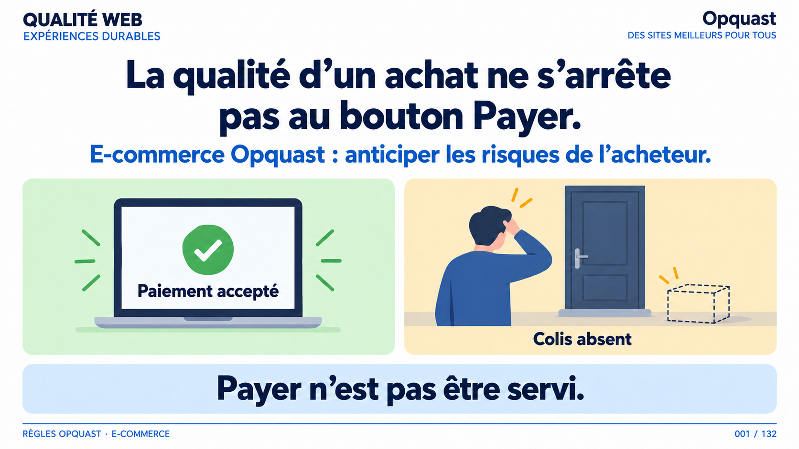
Deux situations sont mises en regard : un ordinateur confirme le paiement par une coche, tandis qu’une personne attend devant une porte, à côté du contour pointillé d’un colis absent. Les cartes portent les mentions « Paiement accepté » et « Colis absent ». Cette opposition rappelle qu’une transaction validée ne suffit pas à établir que le service attendu a été rendu. Le bandeau conclut : « Payer n’est pas être servi. »
Textes affichés dans l’image
- QUALITÉ WEB
- EXPÉRIENCES DURABLES
- Opquast
- DES SITES MEILLEURS POUR TOUS
- La qualité d’un achat ne s’arrête pas au bouton Payer.
- E-commerce Opquast : anticiper les risques de l’acheteur.
- Paiement accepté
- Colis absent
- Payer n’est pas être servi.
- RÈGLES OPQUAST · E-COMMERCE
- 001 / 132
La transaction ne raconte pas toute l’histoire
- Imaginez un achat en ligne dont le paiement passe, mais dont le colis n’arrive pas et pour lequel personne ne répond.
- Le paiement a réussi, pourtant le besoin de l’acheteur reste insatisfait.
Des questions avant et après l’achat
- Avant de commander, l’acheteur cherche à savoir si le produit lui convient, quand il arrivera et comment le retourner.
- Après la commande, il doit pouvoir retrouver ses justificatifs et comprendre comment demander de l’aide.
Prévenir un risque concret
- Les règles Opquast donnent des exigences et des contrôles pour rendre ce parcours plus prévisible, sans promettre un service parfait.
- Chaque situation relie une question, un risque, une règle et une preuve.
Transition
- Ce service commence par les questions que se pose la personne qui achète.
Slide 2 - L’acheteur est une boule de questions
Une acheteuse songeuse est entourée de quatre bulles. À gauche, un colis accompagne « Le bon produit ? » et un camion « À temps ? ». À droite, une flèche de retour accompagne « Le retour ? » et un cadenas « Mes données ? ». Des points d’interrogation au-dessus de sa tête expriment l’incertitude.
Textes affichés dans l’image
- QUALITÉ WEB
- EXPÉRIENCES DURABLES
- Opquast
- DES SITES MEILLEURS POUR TOUS
- L’acheteur est une boule de questions
- Le bon produit ?
- À temps ?
- Le retour ?
- Mes données ?
- RÈGLES OPQUAST · E-COMMERCE
- 002 / 132
Des besoins derrière l’achat
- L’acheteur ne cherche pas seulement à faire passer un paiement : il veut un produit adapté à son besoin.
- Une livraison tardive ou un retour difficile peut rendre l’expérience décevante malgré une interface agréable.
De la question au risque
- Une interrogation sur le produit, le délai, le retour ou les données permet de nommer une difficulté concrète.
- Comprendre cette difficulté aide à chercher l’exigence et la preuve qui lui correspondent.
Transition
- Ces questions relient l’expérience de l’interface à celle du service rendu.
Slide 3 - VPTCS : la valeur dépasse l’interface
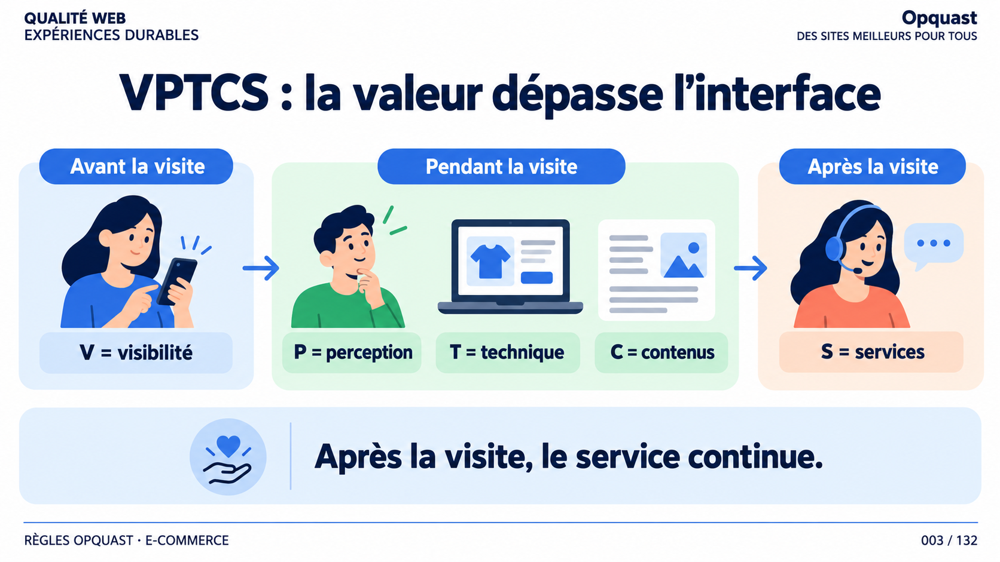
Trois groupes reliés situent V avant la visite, P, T et C pendant la visite, puis S après la visite. Une personne avec un téléphone illustre la visibilité ; un utilisateur, un ordinateur et un document illustrent perception, technique et contenus ; une personne au casque illustre les services. Le bandeau rappelle : « Après la visite, le service continue. »
Textes affichés dans l’image
- QUALITÉ WEB
- EXPÉRIENCES DURABLES
- Opquast
- DES SITES MEILLEURS POUR TOUS
- VPTCS : la valeur dépasse l’interface
- Avant la visite
- V = visibilité
- Pendant la visite
- P = perception
- T = technique
- C = contenus
- Après la visite
- S = services
- Après la visite, le service continue.
- RÈGLES OPQUAST · E-COMMERCE
- 003 / 132
Une expérience au-delà de l’interface
- La visibilité permet d’accéder au service ; perception, technique et contenus concernent l’expérience pendant la visite.
- Le service continue après la visite, notamment lorsqu’il faut être livré ou obtenir de l’aide.
Deux chronologies différentes
- Le parcours avant, pendant et après la commande décrit les étapes de notre histoire d’achat.
- VPTCS est un modèle d’exigences utilisateurs, pas la taxonomie officielle des règles E-commerce.
Transition
- Pour examiner ce parcours, chaque règle doit être reliée à une difficulté et à une preuve.
Slide 4 - Lire une règle comme un qualiticien
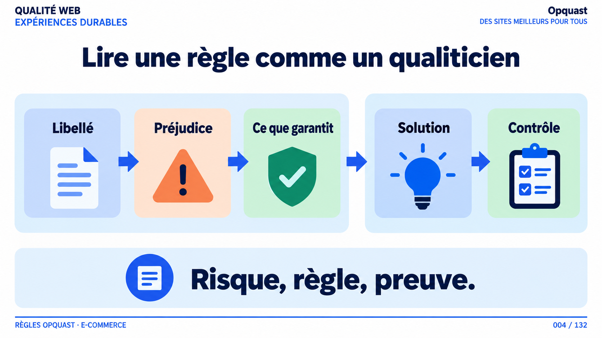
Cinq cartes reliées par des flèches montrent successivement Libellé avec un document, Préjudice avec un avertissement, Ce que garantit avec un bouclier, Solution avec une ampoule et Contrôle avec une liste cochée. Le bandeau inférieur porte « Risque, règle, preuve. »
Textes affichés dans l’image
- QUALITÉ WEB
- EXPÉRIENCES DURABLES
- Opquast
- DES SITES MEILLEURS POUR TOUS
- Lire une règle comme un qualiticien
- Libellé
- Préjudice
- Ce que garantit
- Solution
- Contrôle
- Risque, règle, preuve.
- RÈGLES OPQUAST · E-COMMERCE
- 004 / 132
Partir de la difficulté
- Une règle prend du sens quand on la relie à une personne et un risque concret.
- Son libellé exprime une exigence ; ses objectifs, solutions et contrôles en précisent la lecture.
Chercher une preuve adaptée
- Une capture peut montrer une information, mais elle ne prouve pas l’envoi d’un e-mail.
- Il faut lire le contrôle pour savoir quoi observer, à quel endroit et à quel moment, sans transformer un objectif en garantie générale.
Transition
- Une commande de chaussures et de guide numérique donne un contexte concret à cette lecture.
Slide 5 - Notre fil rouge : Horizon Rando
Une randonneuse avec un sac est représentée à gauche dans un paysage de montagne. À droite figurent les chaussures à 89 €, le guide numérique à 12 €, la livraison estimée à 5,90 € et l’assurance facultative à 9,90 €, accompagnée d’une case vide. La mention « Exemple fictif » et le prénom Léa situent le scénario.
Textes affichés dans l’image
- QUALITÉ WEB
- EXPÉRIENCES DURABLES
- Opquast
- DES SITES MEILLEURS POUR TOUS
- Notre fil rouge : Horizon Rando
- Exemple fictif
- Acheteur : Léa
- Chaussures : 89 €
- Guide numérique : 12 €
- Livraison estimée : 5,90 €
- Assurance facultative : 9,90 €
- RÈGLES OPQUAST · E-COMMERCE
- 005 / 132
Un achat, plusieurs étapes
- Léa cherche des chaussures et un guide de randonnée sur une boutique fictive.
- Elle compare l’offre, choisit la livraison, paie, conserve ses preuves et peut ensuite avoir besoin d’aide.
Des exemples pour comprendre
- Les montants servent à décrire le parcours et ne sont pas des résultats d’audit.
- L’assurance est facultative : sa présence dans l’offre ne signifie pas que Léa l’a choisie.
Transition
- Le parcours soulève d’abord une question sur la place des conditions générales de vente.
Slide 6 - Diagnostic T0 : affirmation 1/5
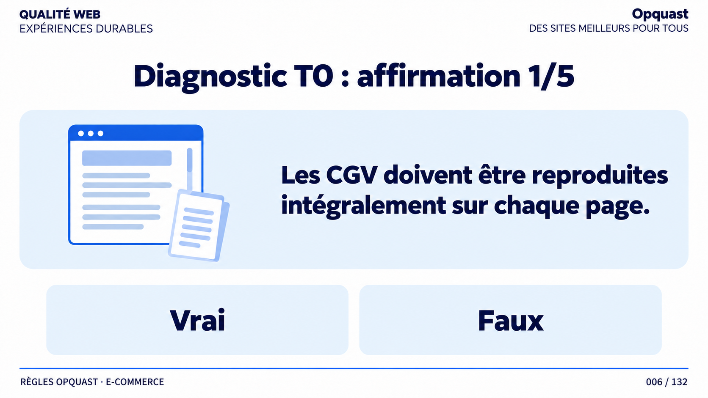
Une carte bleue associe un pictogramme de page et de document à l’affirmation sur la reproduction intégrale des CGV. Deux cartes de même taille et de même couleur portent « Vrai » et « Faux », sans réponse sélectionnée.
Textes affichés dans l’image
- QUALITÉ WEB
- EXPÉRIENCES DURABLES
- Opquast
- DES SITES MEILLEURS POUR TOUS
- Diagnostic T0 : affirmation 1/5
- Les CGV doivent être reproduites intégralement sur chaque page.
- Vrai
- Faux
- RÈGLES OPQUAST · E-COMMERCE
- 006 / 132
Les conditions pendant la visite
- Une boutique présente des fiches, un panier et des pages de service.
- L’affirmation porte sur la présence des conditions générales de vente dans cet ensemble.
La portée de chaque mot
- Les mots « intégralement » et « chaque page » décrivent une exigence précise.
- La question est de savoir si cette formulation correspond exactement à ce que demande le référentiel.
Transition
- L’information sur les frais de livraison pose une autre question d’accès dans le parcours.
Slide 7 - Diagnostic T0 : affirmation 2/5
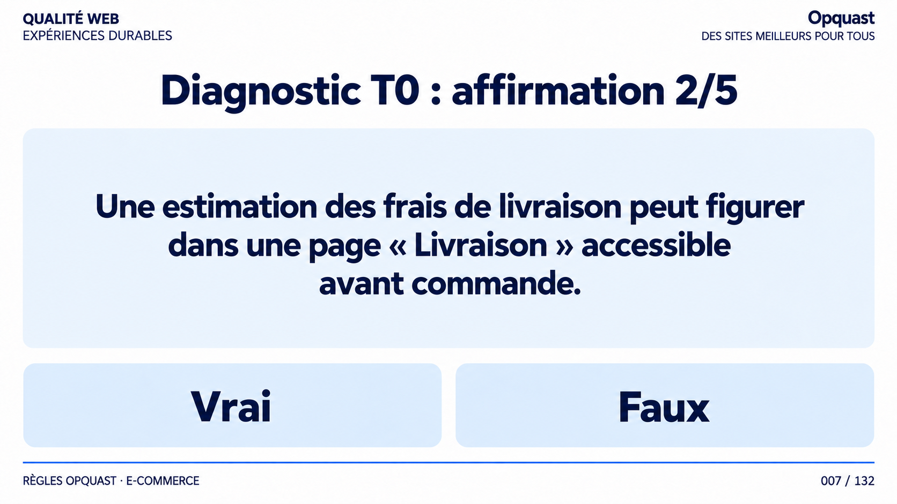
L’affirmation complète sur les frais de livraison occupe une grande carte centrale. En dessous, deux cartes bleues identiques portent Vrai et Faux, sans indication de réponse.
Textes affichés dans l’image
- QUALITÉ WEB
- EXPÉRIENCES DURABLES
- Opquast
- DES SITES MEILLEURS POUR TOUS
- Diagnostic T0 : affirmation 2/5
- Une estimation des frais de livraison peut figurer dans une page « Livraison » accessible avant commande.
- Vrai
- Faux
- RÈGLES OPQUAST · E-COMMERCE
- 007 / 132
Le coût d’acheminement
- Le panier de Léa peut entraîner un coût de livraison en plus des produits.
- L’affirmation situe une estimation des frais sur une page Livraison accessible avant commande.
Un emplacement et un moment
- Le cas associe le contenu de cette page et sa place dans le parcours.
- La conclusion dépend de la lecture de ces deux éléments dans les modalités de la règle.
Transition
- Après les frais viennent les traces que l’on conserve de la commande.
Slide 8 - Diagnostic T0 : affirmation 3/5
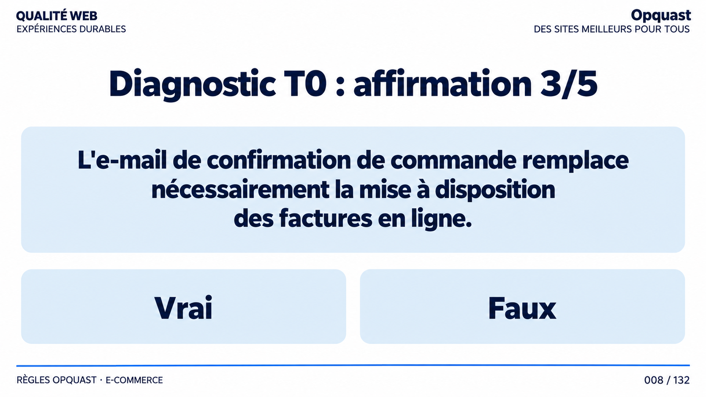
L’affirmation sur l’e-mail de commande et les factures en ligne figure dans une carte centrale. Deux cartes bleues identiques proposent Vrai et Faux ; aucun choix n’est sélectionné.
Textes affichés dans l’image
- QUALITÉ WEB
- EXPÉRIENCES DURABLES
- Opquast
- DES SITES MEILLEURS POUR TOUS
- Diagnostic T0 : affirmation 3/5
- L'e-mail de confirmation de commande remplace nécessairement la mise à disposition des factures en ligne.
- Vrai
- Faux
- RÈGLES OPQUAST · E-COMMERCE
- 008 / 132
Les traces de l’achat
- Léa reçoit un e-mail de confirmation de commande après son achat.
- L’affirmation compare ce message à la mise à disposition de factures dans le service en ligne.
Une relation à examiner
- Le mot « nécessairement » donne une portée générale au remplacement annoncé.
- La question concerne les documents et leurs supports, au-delà de la simple présence d’un message.
Transition
- La commande mobilise aussi des données bancaires dont la conservation mérite d’être examinée.
Slide 9 - Diagnostic T0 : affirmation 4/5
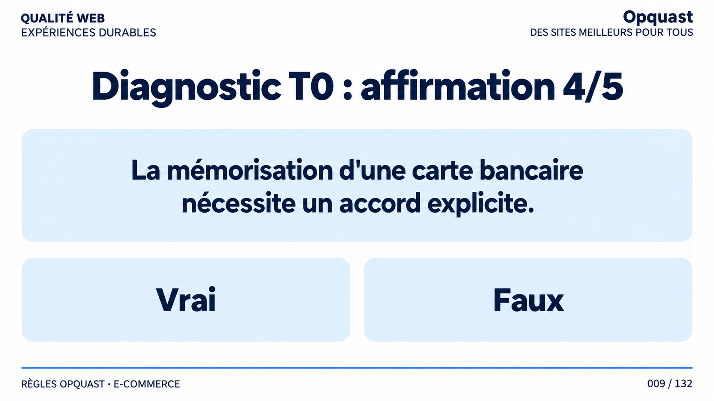
L’affirmation sur la mémorisation d’une carte bancaire est centrée dans une carte bleue. Deux cartes identiques proposent Vrai et Faux, sans sélection ni illustration.
Textes affichés dans l’image
- QUALITÉ WEB
- EXPÉRIENCES DURABLES
- Opquast
- DES SITES MEILLEURS POUR TOUS
- Diagnostic T0 : affirmation 4/5
- La mémorisation d'une carte bancaire nécessite un accord explicite.
- Vrai
- Faux
- RÈGLES OPQUAST · E-COMMERCE
- 009 / 132
Le paiement et les données
- Une carte sert à effectuer l’achat du jour.
- L’affirmation concerne la mémorisation de ses données, qui permettrait leur réutilisation.
La décision décrite
- L’expression « accord explicite » désigne la forme de choix soumise à l’examen.
- L’enjeu est le lien entre ce choix et l’enregistrement des données par le service.
Transition
- Après l’achat, une réclamation conduit à s’interroger sur le sens du message reçu.
Slide 10 - Diagnostic T0 : affirmation 5/5
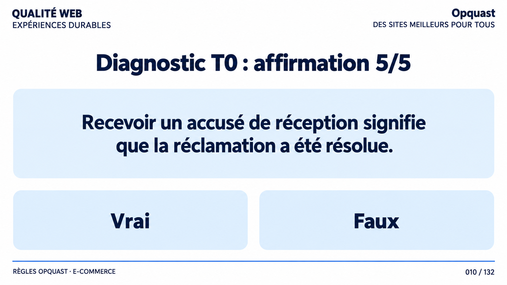
L’affirmation sur l’accusé de réception et la résolution d’une réclamation occupe la carte centrale. Les deux choix Vrai et Faux ont le même aspect et restent sans sélection.
Textes affichés dans l’image
- QUALITÉ WEB
- EXPÉRIENCES DURABLES
- Opquast
- DES SITES MEILLEURS POUR TOUS
- Diagnostic T0 : affirmation 5/5
- Recevoir un accusé de réception signifie que la réclamation a été résolue.
- Vrai
- Faux
- RÈGLES OPQUAST · E-COMMERCE
- 010 / 132
Une réclamation après l’achat
- Un acheteur transmet une réclamation et reçoit un accusé de réception.
- L’affirmation attribue à ce message un sens précis sur la situation du problème.
Ce que le message permet de conclure
- Le mot « résolue » porte sur l’issue de la difficulté rencontrée.
- La question est de savoir quelle preuve le message apporte réellement à cette conclusion.
Transition
- Le premier besoin de l’acheteur reste de comprendre précisément le produit proposé.
Slide 11 - Une fiche produit précise
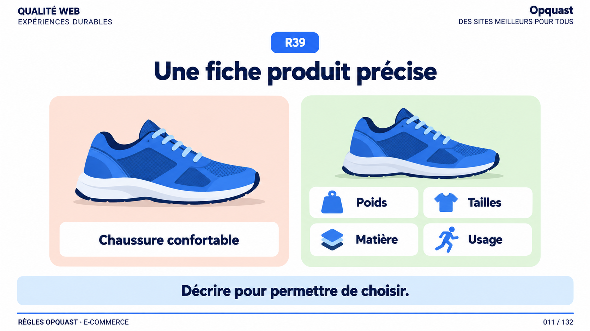
Deux cartes opposent une chaussure décrite seulement comme confortable et une chaussure accompagnée de quatre rubriques : Poids, Tailles, Matière et Usage. Le badge R39 et le mémo « Décrire pour permettre de choisir. » encadrent cette comparaison.
Textes affichés dans l’image
- QUALITÉ WEB
- EXPÉRIENCES DURABLES
- Opquast
- DES SITES MEILLEURS POUR TOUS
- R39
- Une fiche produit précise
- Chaussure confortable
- Poids
- Tailles
- Matière
- Usage
- Décrire pour permettre de choisir.
- RÈGLES OPQUAST · E-COMMERCE
- 011 / 132
Une fiche produit précise
- « La nature et les caractéristiques quantifiables des produits et services sont indiquées. »
- Une belle photo ne permet pas de connaître le poids, les dimensions ou les caractéristiques d’une chaussure.
Impact du non-respect
- Sans informations précises, je risque de choisir un produit inadapté à mon besoin.
Ce que garantit la règle
- La présence d’informations sur la nature et les caractéristiques se vérifie dans les pages produits et les contenus associés prévus par le contrôle.
- Ces informations permettent de décider avec plus de précision, sans garantir que le produit satisfera chaque attente.
Transition
- Les mesures du produit ne renseignent pas encore sur sa provenance.
Slide 12 - Je connais la provenance du produit
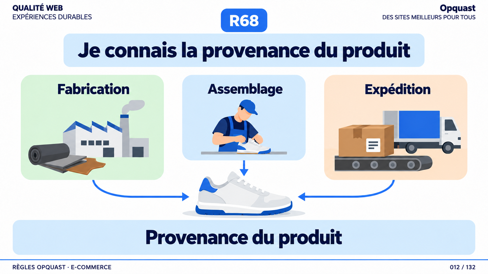
Trois cartes montrent une usine pour la fabrication, un travailleur assemblant une chaussure et un colis avec un camion pour l’expédition. Leurs flèches convergent vers une chaussure, sous le titre « Je connais la provenance du produit » et le badge R68.
Textes affichés dans l’image
- QUALITÉ WEB
- EXPÉRIENCES DURABLES
- Opquast
- DES SITES MEILLEURS POUR TOUS
- R68
- Je connais la provenance du produit
- Fabrication
- Assemblage
- Expédition
- Provenance du produit
- RÈGLES OPQUAST · E-COMMERCE
- 012 / 132
Je connais la provenance du produit
- « La provenance des produits est indiquée. »
- Le siège du vendeur ne dit pas nécessairement d’où vient le produit.
Impact du non-respect
- Sans cette information, je ne peux pas faire entrer la provenance réelle du produit dans mon choix.
Ce que garantit la règle
- Le contrôle recherche la provenance dans les fiches produits, le site ou l’application.
- À défaut d’une provenance unique, les informations sur la fabrication, l’assemblage et l’expédition précisent cette provenance, sans la confondre avec la nationalité du vendeur.
Transition
- Une offre promotionnelle ajoute une autre information à examiner avant de choisir.
Slide 13 - Une promotion a une durée et des conditions
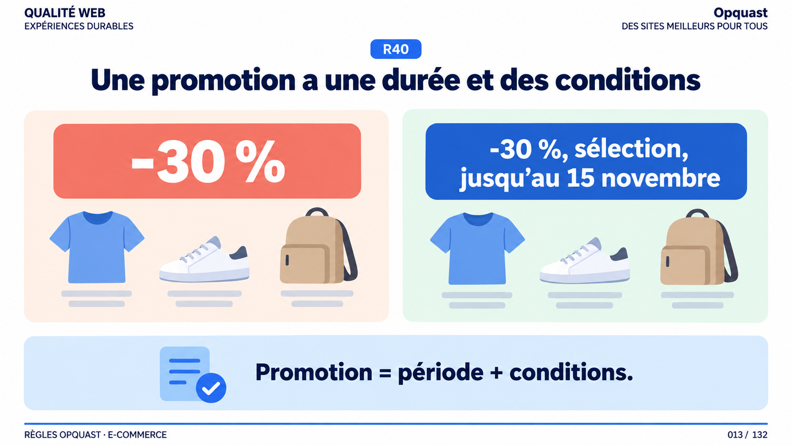
Deux offres présentent les mêmes objets : vêtement, chaussure et sac. Celle de gauche affiche seulement une réduction de 30 %. Celle de droite précise la sélection et la date du 15 novembre. Le bandeau résume « Promotion = période + conditions. »
Textes affichés dans l’image
- QUALITÉ WEB
- EXPÉRIENCES DURABLES
- Opquast
- DES SITES MEILLEURS POUR TOUS
- R40
- Une promotion a une durée et des conditions
- -30 %
- -30 %, sélection, jusqu’au 15 novembre
- Promotion = période + conditions.
- RÈGLES OPQUAST · E-COMMERCE
- 013 / 132
Une promotion a une durée et des conditions
- « La période et les conditions de validité des offres spéciales et promotions sont indiquées. »
- Une réduction attire l’œil, mais elle ne décrit pas à elle seule les conditions de l’offre.
Impact du non-respect
- Je peux croire profiter d’une promotion qui ne s’applique pas à mon achat.
Ce que garantit la règle
- Il faut vérifier la présence de la période et des conditions dans les pages où ces informations sont proposées, notamment les pages produits ou les conditions de vente.
- La réduction affichée ne remplace ni la durée de validité ni les conditions d’application.
Transition
- À côté des promotions, les labels et distinctions peuvent aussi orienter le choix.
Slide 14 - Un label affiché renvoie à sa source
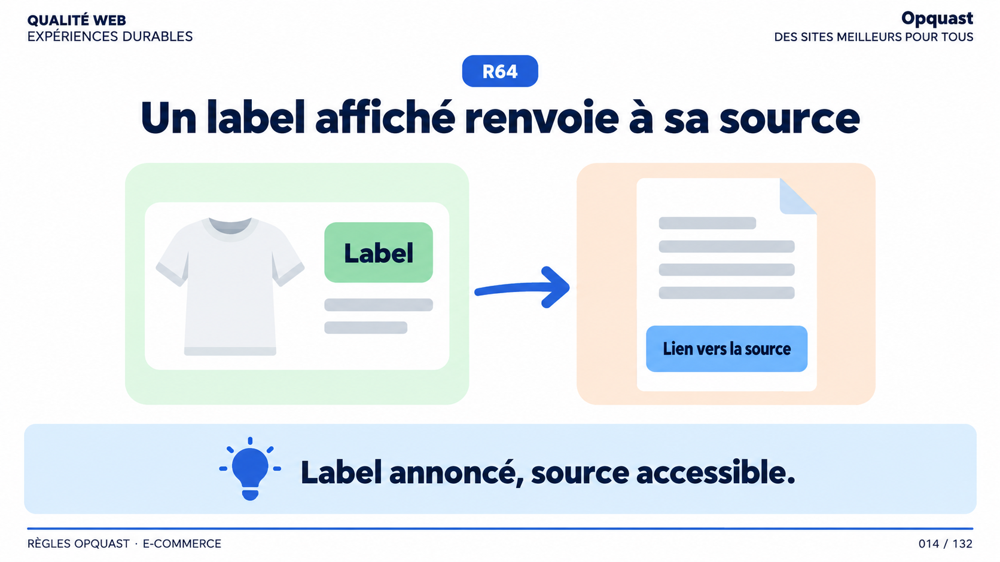
Une fiche produit portant la mention générique « Label » est reliée par une flèche à un document avec « Lien vers la source ». Le mémo « Label annoncé, source accessible. » souligne la possibilité de vérifier la mention.
Textes affichés dans l’image
- QUALITÉ WEB
- EXPÉRIENCES DURABLES
- Opquast
- DES SITES MEILLEURS POUR TOUS
- R64
- Un label affiché renvoie à sa source
- Label
- Lien vers la source
- Label annoncé, source accessible.
- RÈGLES OPQUAST · E-COMMERCE
- 014 / 132
Un label affiché renvoie à sa source
- « Les mentions d'appartenance à un ordre ou groupe professionnel, d'un label ou d'une récompense sont accompagnées d'un lien vers la source. »
- Une distinction annoncée peut influencer mon choix ; j’ai besoin de comprendre ce qu’elle signifie.
Impact du non-respect
- Sans source accessible, je ne peux pas vérifier la portée de la mention avancée par le vendeur.
Ce que garantit la règle
- Chaque mention concernée doit être accompagnée d’un lien explicite vers sa source de référence, dans toutes les pages où elle apparaît.
- Le lien facilite la vérification d’une appartenance, d’un label ou d’une récompense ; il ne prouve pas à lui seul la qualité de la boutique.
Transition
- Même bien documenté, un produit peut être indisponible : cet état doit être repérable.
Slide 15 - Je repère un produit indisponible
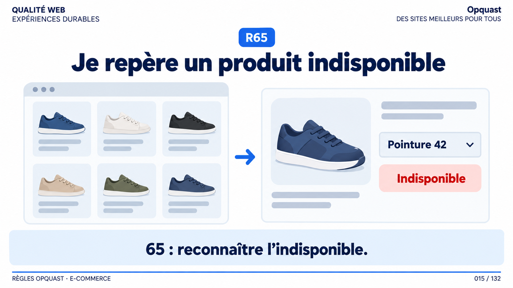
Une liste de chaussures mène vers le détail d’un produit. Le choix « Pointure 42 » est accompagné de la mention textuelle « Indisponible », dans un encadré distinct. Le mémo rappelle de reconnaître le produit indisponible.
Textes affichés dans l’image
- QUALITÉ WEB
- EXPÉRIENCES DURABLES
- Opquast
- DES SITES MEILLEURS POUR TOUS
- R65
- Je repère un produit indisponible
- Pointure 42
- Indisponible
- 65 : reconnaître l’indisponible.
- RÈGLES OPQUAST · E-COMMERCE
- 015 / 132
Je repère un produit indisponible
- « Les produits indisponibles font l'objet d'une différenciation visuelle et textuelle. »
- Une pointure épuisée doit se distinguer immédiatement d’une pointure disponible.
Impact du non-respect
- Je peux commencer une commande puis découvrir tardivement l’indisponibilité du produit désiré.
Ce que garantit la règle
- Le contrôle accepte une mention textuelle, ou une indication graphique accompagnée d’une alternative textuelle appropriée.
- Une simple couleur sans alternative ne suffit pas, mais le contrôle n’impose pas systématiquement une icône et une phrase visible simultanément.
Transition
- Le repérage dans le catalogue doit s’articuler avec l’information sur l’article réellement commandé.
Slide 16 - Je connais la disponibilité avant de valider
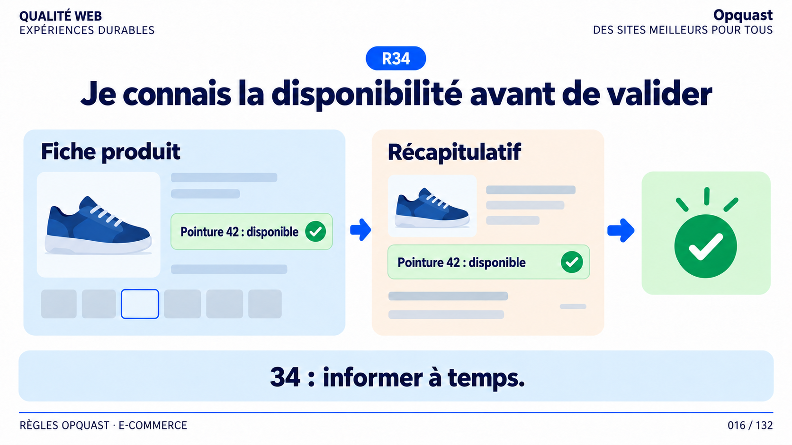
La fiche produit et le récapitulatif portent tous deux « Pointure 42 : disponible ». Des flèches conduisent ensuite à une coche symbolisant la validation. Le mémo rappelle d’informer à temps.
Textes affichés dans l’image
- QUALITÉ WEB
- EXPÉRIENCES DURABLES
- Opquast
- DES SITES MEILLEURS POUR TOUS
- R34
- Je connais la disponibilité avant de valider
- Pointure 42 : disponible
- Fiche produit
- Récapitulatif
- 34 : informer à temps.
- RÈGLES OPQUAST · E-COMMERCE
- 016 / 132
Je connais la disponibilité avant de valider
- « La disponibilité des produits est indiquée avant la validation définitive de la commande. »
- La disponibilité peut modifier le délai attendu et donc la décision d’achat.
Impact du non-respect
- Je risque de commander un article indisponible en croyant qu’il sera livré normalement.
Ce que garantit la règle
- La solution prévoit l’information avant la commande et sur le récapitulatif ; le contrôle cité demande aussi sa disponibilité après validation.
- Il faut conserver ces moments de vérification, sans réduire l’exigence à une information donnée seulement à la dernière seconde.
Transition
- Le moment de l’information et la manière de distinguer les produits répondent à deux besoins complémentaires.
Slide 17 - Disponibilité : quand et comment ?
La carte de gauche associe R34 à une fiche produit et à la question « 34 : quand ? ». La carte de droite associe R65 à une liste dont un produit se distingue et à « 65 : comment distinguer ? ». Les deux titres opposent le moment de l’information au repérage des produits indisponibles.
Textes affichés dans l’image
- QUALITÉ WEB
- EXPÉRIENCES DURABLES
- Opquast
- DES SITES MEILLEURS POUR TOUS
- Disponibilité : quand et comment ?
- R34 : disponibilité connue avant validation
- R65 : produits indisponibles repérables sans confusion
- 34 : quand ?
- 65 : comment distinguer ?
- RÈGLES OPQUAST · E-COMMERCE
- 017 / 132
Le moment de l’information
- La disponibilité doit éclairer le choix de l’article commandé, y compris sa taille ou sa pointure.
- Une information donnée seulement après l’engagement ne permet plus d’ajuster ce choix avant de valider.
La distinction entre les produits
- Un catalogue doit permettre de repérer les produits indisponibles sans confusion avec ceux qui peuvent être commandés.
- Le tee-shirt grisé dessiné ici montre une différence d’apparence ; à lui seul, ce dessin ne démontre pas la présence de l’alternative textuelle appropriée requise pour une indication graphique.
Transition
- Un produit disponible ne peut pas nécessairement être livré à l’adresse souhaitée.
Slide 18 - Je sais où une livraison est possible
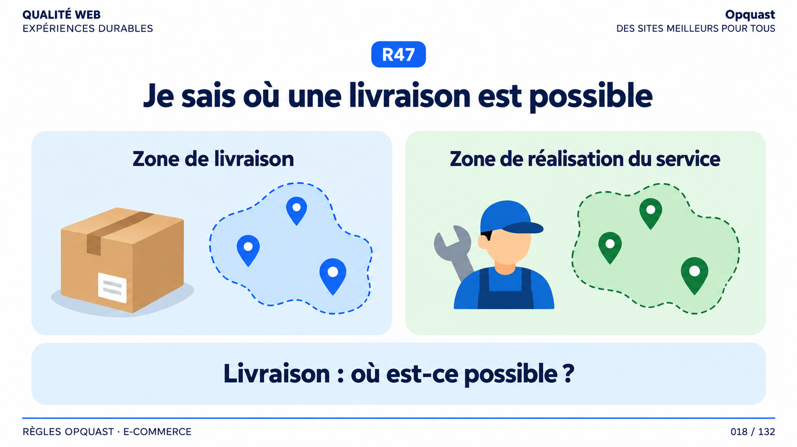
Une carte associe un colis à une zone de livraison schématique ; l’autre associe une personne équipée d’un outil à une zone de réalisation du service. Des repères de localisation illustrent les zones couvertes sans nommer de territoire.
Textes affichés dans l’image
- QUALITÉ WEB
- EXPÉRIENCES DURABLES
- Opquast
- DES SITES MEILLEURS POUR TOUS
- R47
- Je sais où une livraison est possible
- Zone de livraison
- Zone de réalisation du service
- Livraison : où est-ce possible ?
- RÈGLES OPQUAST · E-COMMERCE
- 018 / 132
Je sais où une livraison est possible
- « Les informations relatives à la zone de livraison des produits ou de réalisation des services sont indiquées. »
- Un produit peut me convenir alors que mon adresse ne fait pas partie de la zone desservie.
Impact du non-respect
- Découvrir cette limite tardivement entraîne une navigation ou une commande inutile.
Ce que garantit la règle
- Le contrôle vérifie la présence de l’information sur la zone couverte dans les pages de la boutique.
- La solution décrit aussi le dépôt final, ses horaires et un contact avant paiement, après paiement et dans l’e-mail récapitulatif ; ces détails ne doivent pas masquer le contrôle consacré à la zone couverte.
Transition
- Une fois la zone connue, l’acheteur a besoin d’estimer quand son achat arrivera.
Slide 19 - Quand vais-je être livré ?
Une acheteuse s’interroge à gauche. À droite, un récapitulatif associe un calendrier à « Délai estimé : 3 à 5 jours ouvrés ». Le bandeau précise que le délai estimé doit être connu avant validation.
Textes affichés dans l’image
- QUALITÉ WEB
- EXPÉRIENCES DURABLES
- Opquast
- DES SITES MEILLEURS POUR TOUS
- R35
- Quand vais-je être livré ?
- Récapitulatif
- Délai estimé : 3 à 5 jours ouvrés
- Délai estimé avant validation.
- RÈGLES OPQUAST · E-COMMERCE
- 019 / 132
Quand vais-je être livré ?
- « Le délai de livraison estimé est indiqué avant la validation définitive de la commande. »
- Léa a besoin de ses chaussures pour son départ et doit pouvoir confronter ce besoin au délai annoncé.
Impact du non-respect
- Si le délai apparaît après le paiement, je peux découvrir trop tard que mon achat n’arrivera pas à temps.
Ce que garantit la règle
- Le contrôle recherche le délai de livraison estimé sur le récapitulatif avant la validation définitive.
- Une estimation informe la décision ; elle ne constitue pas une promesse de livraison sans retard.
Transition
- Le délai et le coût de la livraison éclairent ensemble la décision.
Slide 20 - Combien coûtera la livraison ?
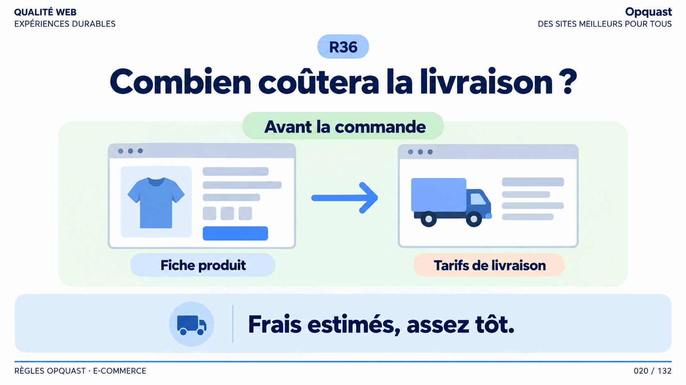
Sous « Avant la commande », une fiche produit est reliée par une flèche à une page de tarifs de livraison illustrée par un camion. Le bandeau indique « Frais estimés, assez tôt. »
Textes affichés dans l’image
- QUALITÉ WEB
- EXPÉRIENCES DURABLES
- Opquast
- DES SITES MEILLEURS POUR TOUS
- R36
- Combien coûtera la livraison ?
- Fiche produit
- Tarifs de livraison
- Avant la commande
- Frais estimés, assez tôt.
- RÈGLES OPQUAST · E-COMMERCE
- 020 / 132
Combien coûtera la livraison ?
- « Les frais de livraison estimés sont indiqués avant la validation définitive de la commande. »
- Les frais de livraison peuvent changer l’intérêt d’une offre et le coût anticipé de l’achat.
Impact du non-respect
- Des frais découverts tardivement peuvent provoquer une mauvaise surprise ou un abandon de commande.
Ce que garantit la règle
- Pour chaque produit, le contrôle accepte un tarif ou une estimation sur la fiche, ou dans une page disponible avant la commande, selon le produit et le lieu de livraison.
- Le mot « indiqués » dans le libellé ne permet pas de rejeter une page de conditions de livraison accessible avant la commande.
Transition
- Pour un bien numérique, l’acheminement prend la forme de modalités de récupération.
Slide 21 - Je sais comment récupérer mon achat numérique
Une personne devant un ordinateur accompagne un symbole de téléchargement. Sous « Avant la commande », quatre cartes nomment Format, Canal, Délai et Durée de disponibilité, avec un document, un écran, une horloge et un calendrier.
Textes affichés dans l’image
- QUALITÉ WEB
- EXPÉRIENCES DURABLES
- Opquast
- DES SITES MEILLEURS POUR TOUS
- R37
- Je sais comment récupérer mon achat numérique
- Format
- Canal
- Délai
- Durée de disponibilité
- Avant la commande
- RÈGLES OPQUAST · E-COMMERCE
- 021 / 132
Je sais comment récupérer mon achat numérique
- « Les modalités de récupération d'un bien dématérialisé sont précisées avant la commande. »
- Pour le guide numérique, le prix ne dit ni comment récupérer le fichier ni combien de temps il restera accessible.
Impact du non-respect
- Je peux payer un bien dont les conditions d’accès ne correspondent pas à mon usage.
Ce que garantit la règle
- Le contrôle recherche les modalités de récupération accessibles avant le début de la commande, dans la fiche produit ou une page dédiée.
- Ces modalités portent sur le moyen d’accès, le format, le délai et la durée de disponibilité ; les matériels et logiciels nécessaires constituent une autre question.
Transition
- Récupérer un fichier ne suffit pas à savoir si son équipement pourra l’utiliser.
Slide 22 - Mon matériel peut-il utiliser le service ?
Deux cartes présentent le matériel nécessaire, avec ordinateur, tablette et téléphone, et le logiciel nécessaire, avec une fenêtre et un engrenage. Elles convergent vers un ordinateur. Le bas relie « Fiche produit ou page de support » à « Avant validation ».
Textes affichés dans l’image
- QUALITÉ WEB
- EXPÉRIENCES DURABLES
- Opquast
- DES SITES MEILLEURS POUR TOUS
- R55
- Mon matériel peut-il utiliser le service ?
- Matériel nécessaire
- Logiciel nécessaire
- Avant validation
- Fiche produit ou page de support
- RÈGLES OPQUAST · E-COMMERCE
- 022 / 132
Mon matériel peut-il utiliser le service ?
- « Les matériels et logiciels nécessaires au fonctionnement du service sont indiqués avant la validation de la commande. »
- Récupérer un guide numérique ne signifie pas encore pouvoir l’utiliser sur son appareil.
Impact du non-respect
- Je peux acheter un service qui ne fonctionne pas avec mon équipement.
Ce que garantit la règle
- Le contrôle accepte les informations dans la fiche produit, par un lien depuis celle-ci ou dans une page de support disponible avant finalisation.
- L’exigence rend les prérequis connaissables avant la validation ; elle ne prouve pas à elle seule le fonctionnement réel sur chaque appareil.
Transition
- Ces informations doivent être situées au moment où elles peuvent encore éclairer l’engagement.
Slide 23 - Avant commande ou avant validation ?
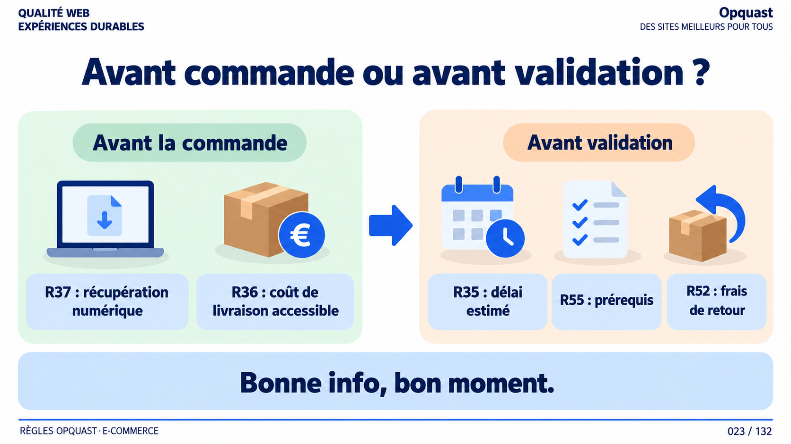
Deux groupes sont reliés par une flèche. Avant la commande figurent R37 pour la récupération numérique et R36 pour le coût de livraison accessible. Avant validation figurent R35 pour le délai estimé, R55 pour les prérequis et R52 pour les frais de retour. Un symbole euro illustre le coût.
Textes affichés dans l’image
- QUALITÉ WEB
- EXPÉRIENCES DURABLES
- Opquast
- DES SITES MEILLEURS POUR TOUS
- Avant commande ou avant validation ?
- Avant la commande
- R37 : récupération numérique
- R36 : coût de livraison accessible
- Avant validation
- R35 : délai estimé
- R55 : prérequis
- R52 : frais de retour
- Bonne info, bon moment.
- €
- RÈGLES OPQUAST · E-COMMERCE
- 023 / 132
Avant de commencer la commande
- Les modalités de récupération d’un bien numérique doivent être accessibles avant le début de la commande.
- Le tarif ou l’estimation des frais de livraison peut être fourni sur la fiche produit ou dans une page disponible avant la commande.
Avant de valider
- Le délai estimé se contrôle sur le récapitulatif avant validation définitive.
- Les prérequis matériels et logiciels ainsi que la charge des frais de retour doivent pouvoir être connus avant la validation.
Le moment change le constat
- Une information présente uniquement après le paiement peut arriver trop tard pour éclairer le choix.
- Le libellé, la solution et le contrôle permettent ensemble de situer le point de vérification.
Transition
- Une fiche produit, une promotion ou un délai donnent plusieurs occasions de relier un risque à son exigence.
Slide 24 - Rappel A : quelle exigence ?
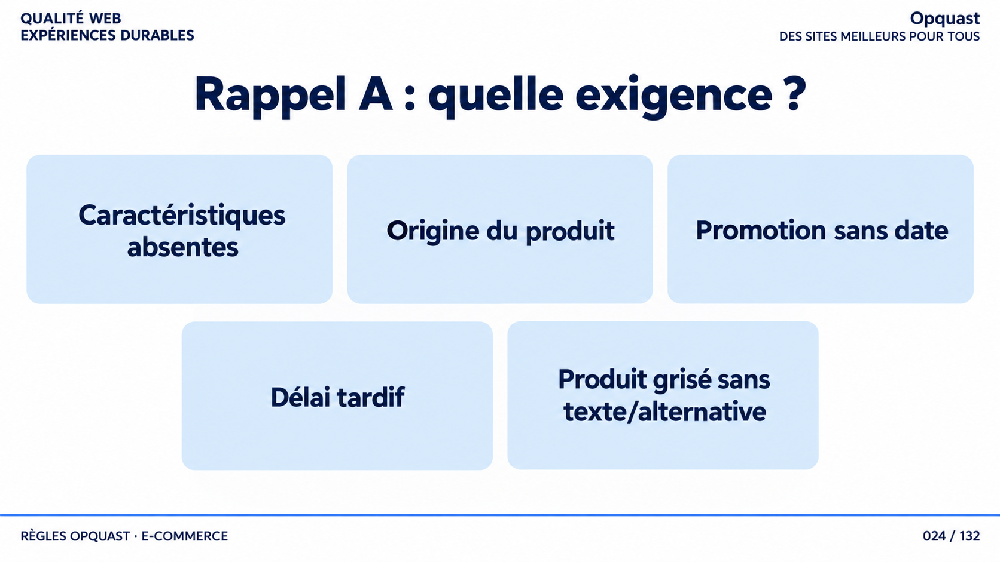
Cinq cartes identiques présentent les situations à rapprocher d’une exigence : caractéristiques absentes, origine du produit, promotion sans date, délai tardif et produit grisé sans texte ou alternative. Aucun numéro de règle ni corrigé n’est affiché.
Textes affichés dans l’image
- QUALITÉ WEB
- EXPÉRIENCES DURABLES
- Opquast
- DES SITES MEILLEURS POUR TOUS
- Rappel A : quelle exigence ?
- Caractéristiques absentes
- Origine du produit
- Promotion sans date
- Délai tardif
- Produit grisé sans texte/alternative
- RÈGLES OPQUAST · E-COMMERCE
- 024 / 132
De la situation à l’exigence
- Pour chaque situation, quelle exigence répond au problème de l’acheteur ?
- Le rapprochement doit s’appuyer sur ce qui est constaté, pas seulement sur un mot familier.
Du risque à la preuve
- Quel préjudice l’acheteur peut-il subir et quelle preuve permettrait de vérifier l’exigence ?
- Une réponse précise relie la situation, l’exigence et le contrôle.
Transition
- Chaque rapprochement doit maintenant être justifié par le contenu précis de l’exigence.
Slide 25 - Rappel A : les correspondances
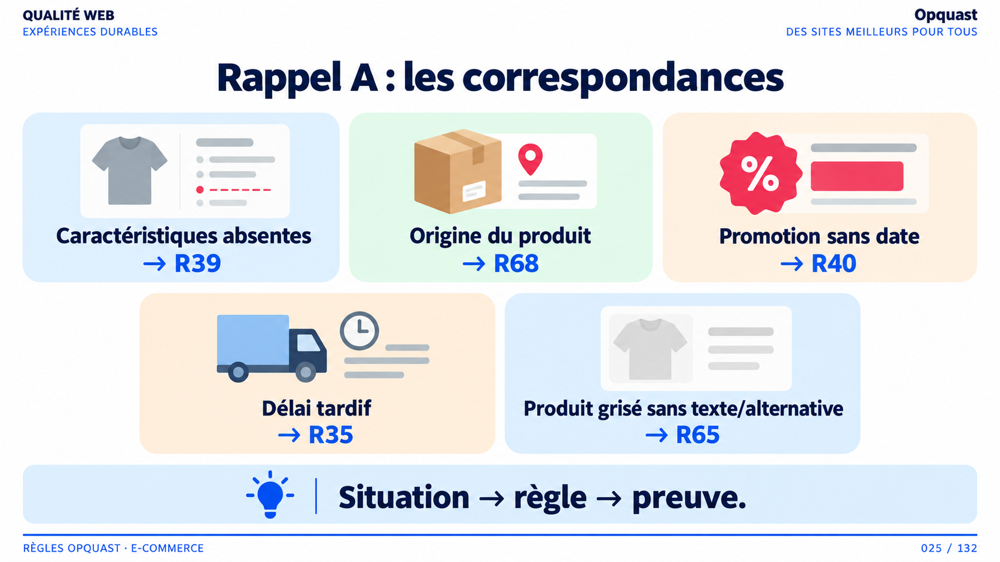
Cinq cartes illustrées relient les situations aux règles : caractéristiques absentes à R39, origine à R68, promotion sans date à R40, délai tardif à R35 et produit grisé sans texte ou alternative à R65. Le mémo conclut « Situation → règle → preuve. »
Textes affichés dans l’image
- QUALITÉ WEB
- EXPÉRIENCES DURABLES
- Opquast
- DES SITES MEILLEURS POUR TOUS
- Rappel A : les correspondances
- Caractéristiques absentes → R39
- Origine du produit → R68
- Promotion sans date → R40
- Délai tardif → R35
- Produit grisé sans texte/alternative → R65
- Situation → règle → preuve.
- %
- RÈGLES OPQUAST · E-COMMERCE
- 025 / 132
Choisir avec les bonnes informations
- Les caractéristiques manquantes relèvent de R39 et la provenance du produit de R68.
- La période et les conditions d’une promotion relèvent de R40, au-delà du seul affichage de la réduction.
Connaître le délai et repérer l’indisponibilité
- Le délai estimé se vérifie sur le récapitulatif avant validation pour R35.
- Le produit grisé appelle une vérification de R65 : son apparence seule ne prouve pas que l’indisponibilité est compréhensible pour tous.
Relier l’exigence à sa preuve
- Une information visible, son moment de disponibilité et son mode de présentation ne se vérifient pas de la même façon.
- Le raisonnement est solide quand le contrôle correspond précisément au risque identifié.
Transition
- Au-delà des fiches produit, l’acheteur doit pouvoir consulter les conditions qui encadrent sa commande.
Slide 26 - CGV et CGU disponibles depuis chaque page
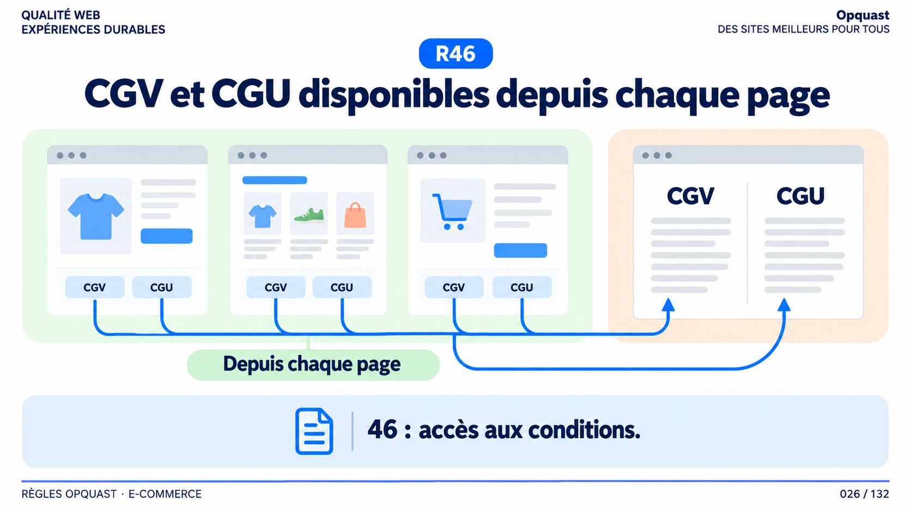
Trois pages schématiques possèdent chacune des liens CGV et CGU. Des flèches rejoignent les deux documents correspondants. Le mémo indique « 46 : accès aux conditions. »
Textes affichés dans l’image
- QUALITÉ WEB
- EXPÉRIENCES DURABLES
- Opquast
- DES SITES MEILLEURS POUR TOUS
- R46
- CGV et CGU disponibles depuis chaque page
- CGV
- CGU
- Depuis chaque page
- 46 : accès aux conditions.
- RÈGLES OPQUAST · E-COMMERCE
- 026 / 132
CGV et CGU disponibles depuis chaque page
- « Les conditions de vente ou d'utilisation sont disponibles depuis toutes les pages. »
- Les CGV concernent les conditions de vente ; les CGU décrivent les conditions d’utilisation du service.
Impact du non-respect
- Sans accès facile, je ne parviens pas à retrouver les conditions de réalisation du service.
Ce que garantit la règle
- Le contrôle vérifie sur toutes les pages un lien vers les conditions concernées, y compris les pages tierces qui ne reprennent pas tous les gabarits du site.
- Dater et versionner ces documents est une recommandation complémentaire ; la règle n’exige pas de reproduire intégralement leur texte sur chaque page.
Transition
- L’accès aux conditions ne dit pas encore si elles renseignent les recours possibles.
Slide 27 - Je trouve les recours dans les CGV/CGU
Une personne consulte un document CGV/CGU dont la rubrique « Litiges et recours » est mise en évidence. Deux cartes inférieures distinguent « 46 : trouver le document » et « 50 : trouver les recours ».
Textes affichés dans l’image
- QUALITÉ WEB
- EXPÉRIENCES DURABLES
- Opquast
- DES SITES MEILLEURS POUR TOUS
- R50
- Je trouve les recours dans les CGV/CGU
- CGV / CGU
- Litiges et recours
- 46 : trouver le document
- 50 : trouver les recours
- RÈGLES OPQUAST · E-COMMERCE
- 027 / 132
Je trouve les recours dans les CGV/CGU
- « Les recours en cas de litige sont indiqués dans les conditions générales de vente ou d'utilisation. »
- Trouver les conditions contractuelles et y trouver les recours sont deux vérifications distinctes.
Impact du non-respect
- En cas de désaccord, je peux ignorer les démarches possibles.
Ce que garantit la règle
- Il faut consulter les conditions générales de vente ou d’utilisation et vérifier qu’elles indiquent les recours en cas de litige.
- Le contrôle porte sur la présence de cette information ; un lien vers le document ne prouve pas qu’elle s’y trouve.
Transition
- Face à une difficulté, l’acheteur a aussi besoin de connaître le fonctionnement du service après-vente.
Slide 28 - Je sais comment fonctionne le SAV
Une acheteuse tient une chaussure abîmée. Une flèche conduit vers une page « SAV : savoir comment être aidé. » avec deux rubriques : Conditions d’assistance et Contact.
Textes affichés dans l’image
- QUALITÉ WEB
- EXPÉRIENCES DURABLES
- Opquast
- DES SITES MEILLEURS POUR TOUS
- R43
- Je sais comment fonctionne le SAV
- Conditions d’assistance
- Contact
- SAV : savoir comment être aidé.
- RÈGLES OPQUAST · E-COMMERCE
- 028 / 132
Je sais comment fonctionne le SAV
- « Les conditions de fonctionnement du service après-vente sont indiquées. »
- Des chaussures défectueuses peuvent nécessiter une aide après l’achat.
Impact du non-respect
- Sans conditions d’assistance connues, je ne sais pas comment obtenir de l’aide en cas de difficulté.
Ce que garantit la règle
- Le contrôle recherche les conditions de fonctionnement du service après-vente dans les pages pertinentes, notamment l’aide et les conditions générales.
- La présence de ces informations ne prouve ni la rapidité du SAV ni la résolution effective du problème.
Transition
- L’assistance et la garantie répondent à des questions différentes.
Slide 29 - Je connais les conditions de garantie
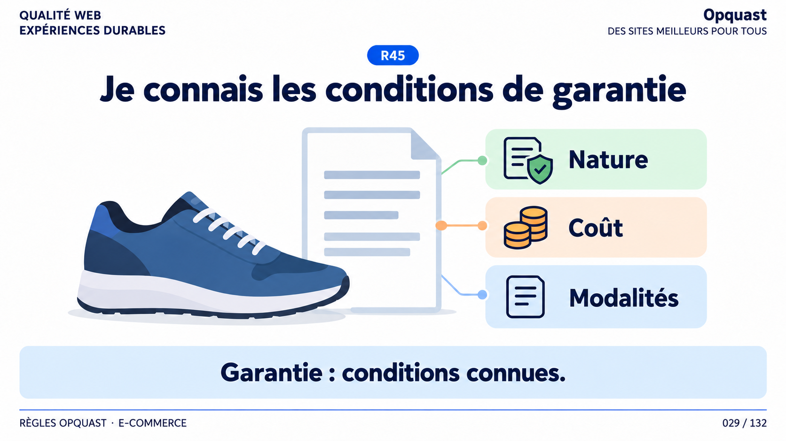
Une chaussure se trouve à gauche d’un document relié à trois rubriques : Nature, illustrée par un document avec bouclier, Coût, illustré par des pièces, et Modalités, illustrées par un document. Le bandeau indique « Garantie : conditions connues. »
Textes affichés dans l’image
- QUALITÉ WEB
- EXPÉRIENCES DURABLES
- Opquast
- DES SITES MEILLEURS POUR TOUS
- R45
- Je connais les conditions de garantie
- Nature
- Coût
- Modalités
- Garantie : conditions connues.
- RÈGLES OPQUAST · E-COMMERCE
- 029 / 132
Je connais les conditions de garantie
- « Les conditions de garantie sont indiquées. »
- Un symbole rassurant ne suffit pas à comprendre les conditions dans lesquelles une garantie s’applique.
Impact du non-respect
- Je peux découvrir trop tard des limites ou des coûts associés à la garantie.
Ce que garantit la règle
- Le contrôle vérifie la présence d’informations sur les conditions de garantie dans les pages appropriées, notamment les conditions générales.
- L’information sur une garantie se distingue des conditions de fonctionnement du service après-vente.
Transition
- Si le produit doit repartir, ses conditions de retour deviennent déterminantes.
Slide 30 - Je sais comment et où retourner un produit
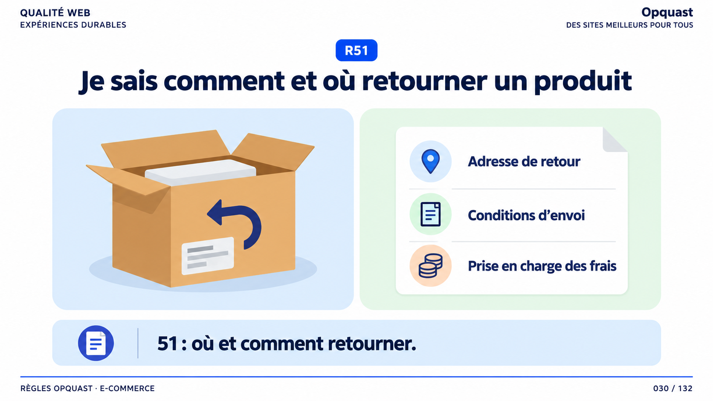
Un colis ouvert porte une flèche de retour. À côté, un document distingue Adresse de retour, Conditions d’envoi et Prise en charge des frais. Le mémo rappelle où et comment retourner le produit.
Textes affichés dans l’image
- QUALITÉ WEB
- EXPÉRIENCES DURABLES
- Opquast
- DES SITES MEILLEURS POUR TOUS
- R51
- Je sais comment et où retourner un produit
- Adresse de retour
- Conditions d’envoi
- Prise en charge des frais
- 51 : où et comment retourner.
- RÈGLES OPQUAST · E-COMMERCE
- 030 / 132
Je sais comment et où retourner un produit
- « L'adresse et les conditions de retour des produits sont indiquées. »
- Si les chaussures ne me vont pas, j’ai besoin de savoir où envoyer le colis et comment préparer le retour.
Impact du non-respect
- Sans adresse ni consignes, je risque des démarches inutiles et des sollicitations supplémentaires du service client.
Ce que garantit la règle
- Le contrôle recherche l’adresse, les conditions d’envoi, la prise en charge des frais et le type de colis attendu dans une page pertinente.
- La règle sur la charge des frais précise en plus le moment où cette information doit être disponible ; les deux périmètres se recoupent.
Transition
- Le retour soulève immédiatement la question de la personne qui en paiera les frais.
Slide 31 - Qui paie les frais de retour ?
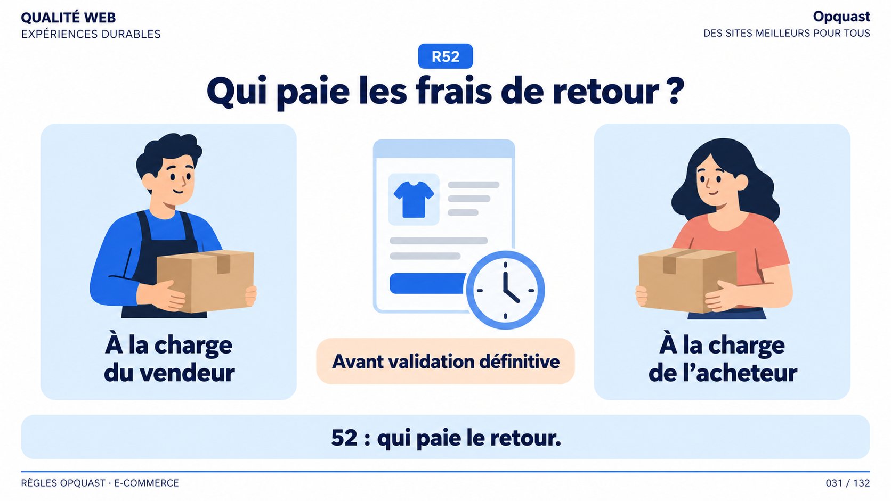
Le vendeur et l’acheteur portent chacun un colis dans deux cartes distinctes. Entre eux, une page et une horloge accompagnent « Avant validation définitive ». Le mémo demande qui paie le retour, sans imposer un payeur.
Textes affichés dans l’image
- QUALITÉ WEB
- EXPÉRIENCES DURABLES
- Opquast
- DES SITES MEILLEURS POUR TOUS
- R52
- Qui paie les frais de retour ?
- À la charge du vendeur
- À la charge de l’acheteur
- Avant validation définitive
- 52 : qui paie le retour.
- RÈGLES OPQUAST · E-COMMERCE
- 031 / 132
Qui paie les frais de retour ?
- « La charge des frais de retour est indiquée avant la validation définitive de la commande. »
- Pour anticiper le coût d’un retour, il faut savoir qui prend les frais en charge.
Impact du non-respect
- Je peux découvrir après l’achat une dépense que je n’avais pas anticipée.
Ce que garantit la règle
- L’information doit être accessible dans une page disponible avant validation définitive, par exemple le récapitulatif ou les conditions générales de vente.
- La règle n’impose pas la gratuité du retour ; elle demande de savoir si les frais reviennent au vendeur ou à l’acheteur, y compris lorsque celui-ci ne paie rien.
Transition
- Une difficulté peut aussi conduire à déposer une réclamation.
Slide 32 - Je sais comment déposer une réclamation
La carte Mode de dépôt montre une personne devant un formulaire. Une flèche mène à Procédure de traitement, représentée par un document, un groupe de personnes et une loupe. Le mémo indique « 53 : procédure expliquée. »
Textes affichés dans l’image
- QUALITÉ WEB
- EXPÉRIENCES DURABLES
- Opquast
- DES SITES MEILLEURS POUR TOUS
- R53
- Je sais comment déposer une réclamation
- Mode de dépôt
- Procédure de traitement
- 53 : procédure expliquée.
- RÈGLES OPQUAST · E-COMMERCE
- 032 / 132
Je sais comment déposer une réclamation
- « Le mode de dépôt et la procédure de traitement des réclamations sont indiqués. »
- Un colis endommagé pose deux questions : comment déposer la demande et quelle procédure de traitement est prévue.
Impact du non-respect
- Sans explication, je ne sais pas comment signaler l’anomalie ni quelles démarches engager.
Ce que garantit la règle
- Le contrôle vérifie la présence d’informations sur le dépôt et la procédure de traitement dans les pages pertinentes.
- La nature de la procédure n’est pas évaluée ici : sa présence ne démontre ni son efficacité ni la résolution du problème.
Transition
- Le dépôt d’une demande et les conditions d’un remboursement ou d’une résiliation doivent rester distincts.
Slide 33 - Remboursement et résiliation : les conditions
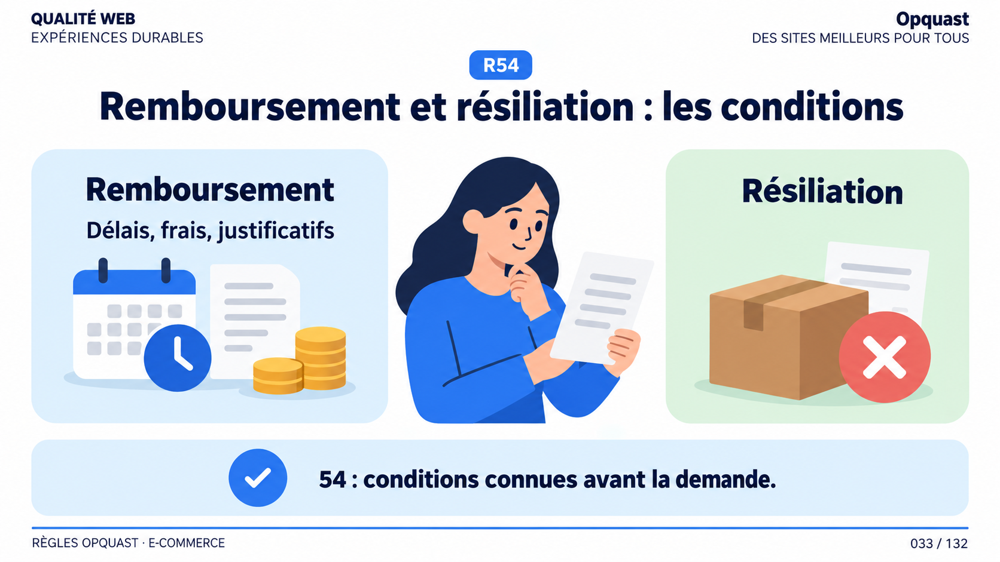
Une personne lit un document entre deux cartes. Le remboursement est associé aux délais, frais et justificatifs ; la résiliation à un document et à un symbole d’arrêt. Le mémo insiste sur la connaissance des conditions avant la demande.
Textes affichés dans l’image
- QUALITÉ WEB
- EXPÉRIENCES DURABLES
- Opquast
- DES SITES MEILLEURS POUR TOUS
- R54
- Remboursement et résiliation : les conditions
- Remboursement
- Délais, frais, justificatifs
- Résiliation
- 54 : conditions connues avant la demande.
- RÈGLES OPQUAST · E-COMMERCE
- 033 / 132
Remboursement et résiliation : les conditions
- « Les conditions de remboursement et de résiliation sont indiquées. »
- Pour demander un remboursement, je dois pouvoir anticiper les délais, les frais et les justificatifs exigés.
Impact du non-respect
- Des conditions inconnues peuvent entraîner des démarches inutiles ou des attentes déçues.
Ce que garantit la règle
- Le libellé couvre le remboursement et la résiliation ; la solution et le contrôle consultés détaillent surtout les informations de remboursement.
- Cette limite documentaire doit rester visible dans le raisonnement, sans transformer l’information fournie en garantie automatique de remboursement.
Transition
- Ces documents et démarches se comprennent mieux en séparant leurs fonctions respectives.
Slide 34 - Quatre paires à distinguer
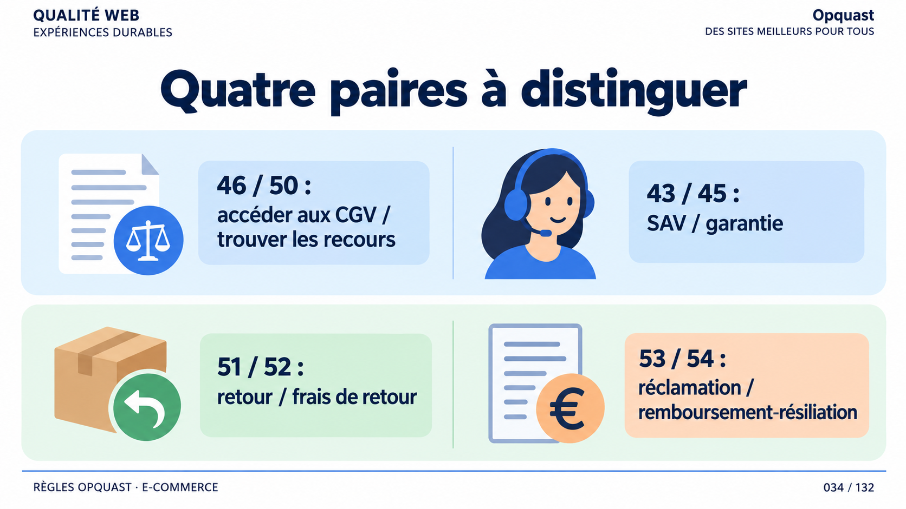
Quatre zones rapprochent 46/50 pour l’accès aux CGV et les recours, 43/45 pour SAV et garantie, 51/52 pour retour et frais, puis 53/54 pour réclamation et remboursement-résiliation. Des documents, un casque, un colis et un symbole euro illustrent les sujets.
Textes affichés dans l’image
- QUALITÉ WEB
- EXPÉRIENCES DURABLES
- Opquast
- DES SITES MEILLEURS POUR TOUS
- Quatre paires à distinguer
- 46 / 50 : accéder aux CGV / trouver les recours
- 43 / 45 : SAV / garantie
- 51 / 52 : retour / frais de retour
- 53 / 54 : réclamation / remboursement-résiliation
- €
- RÈGLES OPQUAST · E-COMMERCE
- 034 / 132
Les documents et l’assistance
- Accéder aux conditions et y trouver les recours sont deux vérifications complémentaires.
- Les conditions de fonctionnement du service après-vente décrivent l’assistance proposée ; elles se distinguent des conditions de garantie et ne se réduisent pas à un moyen de contact.
Le retour et ses frais
- Une adresse de retour permet de savoir où envoyer le colis ; les conditions du retour précisent comment procéder et qui prend en charge les frais.
- La charge de ces frais doit aussi être connue avant la validation définitive, pour éclairer l’achat.
La demande et ses conditions
- La procédure de réclamation explique comment déposer une demande et comment elle sera traitée.
- Les conditions de remboursement ou de résiliation répondent à une autre question : dans quelles conditions sortir de cet achat ou de ce service ?
Transition
- Le même besoin de précision s’applique au montant que l’acheteur s’apprête à payer.
Slide 35 - Le récapitulatif détaille le montant
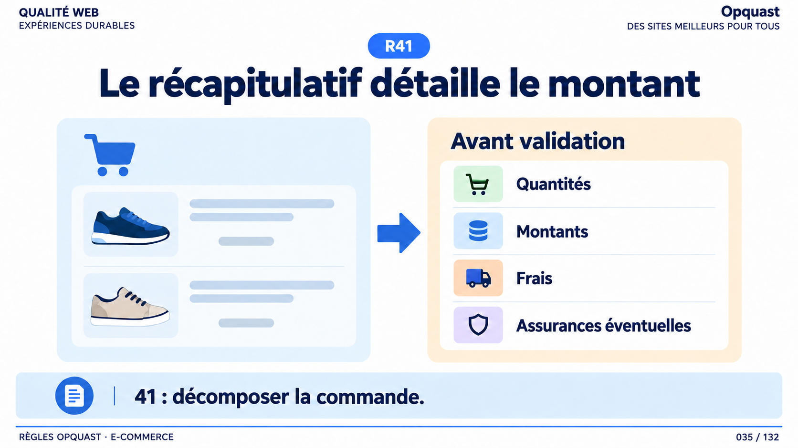
Deux articles dans un panier sont reliés à un récapitulatif avant validation. Celui-ci distingue Quantités, Montants, Frais et Assurances éventuelles. Aucun montant ni quantité d’exemple n’est indiqué.
Textes affichés dans l’image
- QUALITÉ WEB
- EXPÉRIENCES DURABLES
- Opquast
- DES SITES MEILLEURS POUR TOUS
- R41
- Le récapitulatif détaille le montant
- Quantités
- Montants
- Frais
- Assurances éventuelles
- Avant validation
- 41 : décomposer la commande.
- RÈGLES OPQUAST · E-COMMERCE
- 035 / 132
Le récapitulatif détaille le montant
- « Le sous-total détaillé est indiqué avant la validation définitive de la commande. »
- Le total ne suffit pas à expliquer ce qui compose le montant à payer.
Impact du non-respect
- Sans décomposition, je peux valider un montant dont je ne comprends pas les composantes.
Ce que garantit la règle
- Une commande de test permet de rechercher le sous-total détaillé avant validation, avec quantités, montants, frais et assurances éventuelles.
- Ce détail de commande se distingue du détail des taxes, suppléments éventuels et montant hors taxes visé par une autre règle.
Transition
- Le détail de la commande se complète par la décomposition fiscale du prix.
Slide 36 - Taxes, suppléments et hors taxes
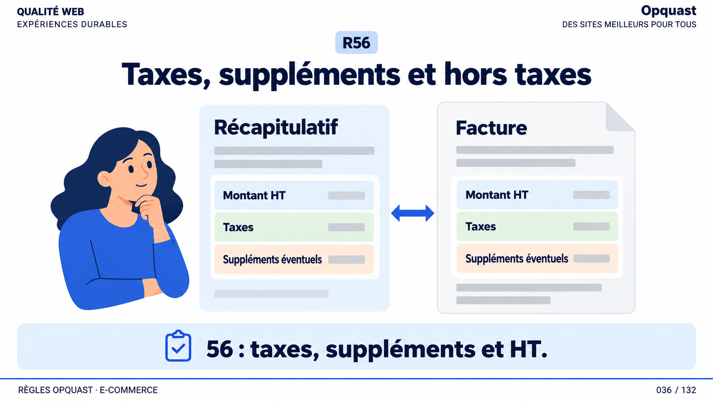
Une acheteuse compare un récapitulatif et une facture reliés par une double flèche. Les deux supports présentent Montant HT, Taxes et Suppléments éventuels. Les valeurs sont remplacées par des traits abstraits.
Textes affichés dans l’image
- QUALITÉ WEB
- EXPÉRIENCES DURABLES
- Opquast
- DES SITES MEILLEURS POUR TOUS
- R56
- Taxes, suppléments et hors taxes
- Récapitulatif
- Facture
- Montant HT
- Taxes
- Suppléments éventuels
- 56 : taxes, suppléments et HT.
- RÈGLES OPQUAST · E-COMMERCE
- 036 / 132
Taxes, suppléments et hors taxes
- « Les prix affichés mentionnent le détail des taxes et suppléments éventuels ainsi que le montant hors taxes. »
- Un total TTC ne suffit pas à comprendre la composition du prix.
Impact du non-respect
- Je risque de mal anticiper le montant total à payer ou de ne pas identifier les montants déductibles et leurs différentes imputations.
Ce que garantit la règle
- Le libellé vise l’ensemble de ces composantes ; la solution et le contrôle demandent expressément le détail de toutes les taxes sur le récapitulatif et la facture envoyée.
- Il faut examiner ces deux supports distincts, sans réduire le libellé aux seules taxes ni inventer une procédure de contrôle supplémentaire.
Transition
- Un paiement financé ajoute des conditions que le prix seul ne décrit pas.
Slide 37 - Je comprends les conditions d’un financement
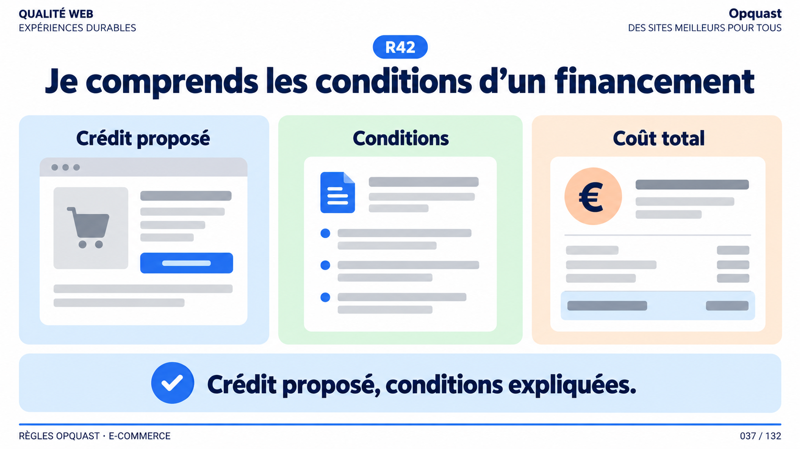
Trois cartes présentent le crédit proposé, ses conditions et son coût total. Elles montrent une offre, un document et un détail de montant avec un symbole euro. Le bandeau rappelle que les conditions du crédit proposé doivent être expliquées.
Textes affichés dans l’image
- QUALITÉ WEB
- EXPÉRIENCES DURABLES
- Opquast
- DES SITES MEILLEURS POUR TOUS
- R42
- Je comprends les conditions d’un financement
- Crédit proposé
- Conditions
- Coût total
- Crédit proposé, conditions expliquées.
- €
- RÈGLES OPQUAST · E-COMMERCE
- 037 / 132
Je comprends les conditions d’un financement
- « Les conditions de financement sont indiquées. »
- Lorsque la boutique propose un crédit, le prix affiché ne suffit pas à comprendre l’ensemble de ce qui sera payé.
Impact du non-respect
- Je peux m’engager sans mesurer le montant total et ses composantes.
Ce que garantit la règle
- Le contrôle recherche les conditions de financement des crédits effectivement proposés dans les pages du site.
- Cette information ne garantit pas que le financement est adapté à chacun et ne suppose pas que toute boutique propose un crédit.
Transition
- Le coût du financement et le moment de l’encaissement sont deux questions à éclairer.
Slide 38 - Quand serai-je débité ?
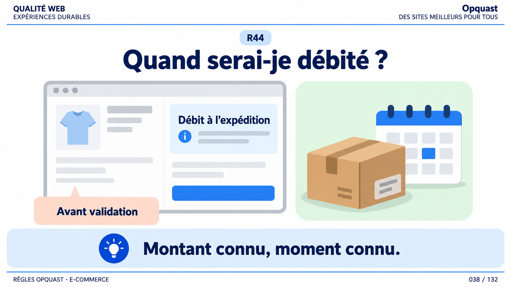
Une page de commande affiche « Débit à l’expédition » avant validation. Un colis et un calendrier illustrent le moment annoncé. Le bandeau distingue le montant connu du moment connu.
Textes affichés dans l’image
- QUALITÉ WEB
- EXPÉRIENCES DURABLES
- Opquast
- DES SITES MEILLEURS POUR TOUS
- R44
- Quand serai-je débité ?
- Débit à l’expédition
- Avant validation
- Montant connu, moment connu.
- RÈGLES OPQUAST · E-COMMERCE
- 038 / 132
Quand serai-je débité ?
- « Les conditions de débit ou d'encaissement sont indiquées. »
- Le montant à payer ne dit pas encore à quel moment ni dans quelles conditions il sera encaissé.
Impact du non-respect
- Un débit inattendu peut survenir à un moment que je n’avais pas anticipé.
Ce que garantit la règle
- Il faut parcourir la commande et vérifier que les conditions de débit ou d’encaissement sont affichées ou disponibles avant la validation définitive du panier.
- Le débit à l’expédition est un exemple de modalité annoncée, pas un calendrier imposé par la règle.
Transition
- Le moment du débit s’inscrit dans une procédure propre au moyen de paiement choisi.
Slide 39 - Je sais quels paiements sont acceptés
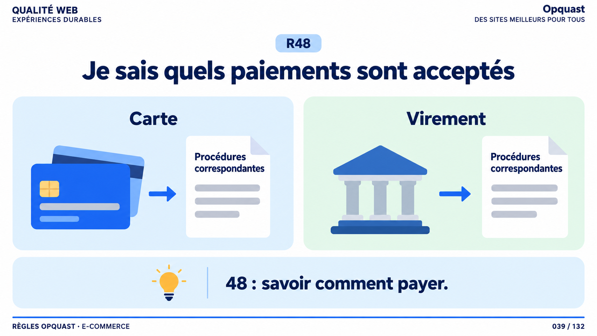
Deux cartes présentent Carte et Virement. Chaque moyen est relié à un document « Procédures correspondantes ». Le bandeau rappelle « 48 : savoir comment payer. »
Textes affichés dans l’image
- QUALITÉ WEB
- EXPÉRIENCES DURABLES
- Opquast
- DES SITES MEILLEURS POUR TOUS
- R48
- Je sais quels paiements sont acceptés
- Carte
- Virement
- Procédures correspondantes
- 48 : savoir comment payer.
- RÈGLES OPQUAST · E-COMMERCE
- 039 / 132
Je sais quels paiements sont acceptés
- « Les moyens de paiement acceptés et les procédures correspondantes sont indiqués. »
- Connaître le moyen de paiement accepté ne suffit pas toujours à comprendre la procédure à suivre.
Impact du non-respect
- Je peux arriver à la fin de la commande et découvrir que je ne pourrai pas payer.
Ce que garantit la règle
- Le contrôle recherche les moyens acceptés ainsi que les procédures correspondantes dans les pages pertinentes.
- Cette information se distingue de la disponibilité effective d’au moins deux moyens, qui se vérifie à l’étape du paiement.
Transition
- Cette procédure implique un prestataire dont l’identité doit être précisée.
Slide 40 - Je reconnais le prestataire de paiement
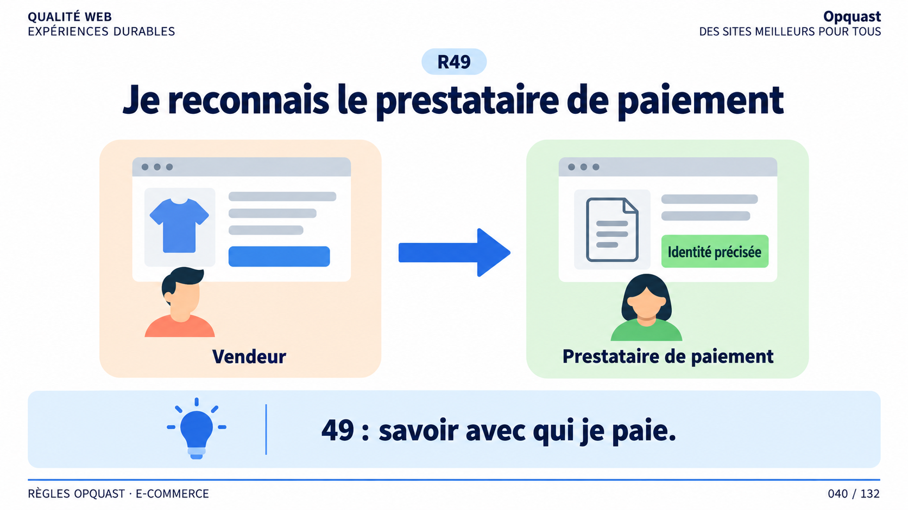
Une page associée au vendeur mène vers une page associée au prestataire de paiement. Cette seconde carte porte « Identité précisée ». Le mémo demande de savoir avec qui l’on paie.
Textes affichés dans l’image
- QUALITÉ WEB
- EXPÉRIENCES DURABLES
- Opquast
- DES SITES MEILLEURS POUR TOUS
- R49
- Je reconnais le prestataire de paiement
- Vendeur
- Prestataire de paiement
- Identité précisée
- 49 : savoir avec qui je paie.
- RÈGLES OPQUAST · E-COMMERCE
- 040 / 132
Je reconnais le prestataire de paiement
- « L'identité des prestataires impliqués dans les transactions est précisée. »
- Le paiement peut faire intervenir une banque ou un prestataire distinct du vendeur.
Impact du non-respect
- Un acteur inattendu peut susciter une incertitude sur les partenaires impliqués dans la transaction.
Ce que garantit la règle
- Le contrôle recherche l’identité des prestataires bancaires ou solutions de paiement dans le panier et les pages d’information ; il admet au minimum leur logo.
- Identifier le prestataire ne constitue ni une certification ni une garantie de sécurité absolue de la transaction.
Transition
- L’identité de l’acteur ne dit pas combien de moyens sont réellement utilisables.
Slide 41 - J’ai au moins deux moyens de paiement
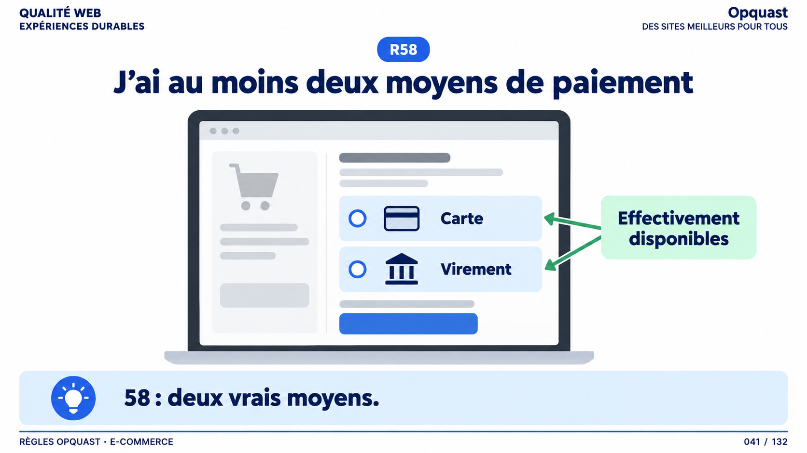
Un écran de paiement propose Carte et Virement, avec deux options distinctes. Deux flèches les relient à la mention « Effectivement disponibles ». Le mémo insiste sur deux moyens réellement utilisables.
Textes affichés dans l’image
- QUALITÉ WEB
- EXPÉRIENCES DURABLES
- Opquast
- DES SITES MEILLEURS POUR TOUS
- R58
- J’ai au moins deux moyens de paiement
- Carte
- Virement
- Effectivement disponibles
- 58 : deux vrais moyens.
- RÈGLES OPQUAST · E-COMMERCE
- 041 / 132
J’ai au moins deux moyens de paiement
- « Au moins deux moyens de paiement sont acceptés. »
- Un utilisateur peut être dans l’impossibilité temporaire ou permanente d’utiliser un moyen de paiement.
Impact du non-respect
- Si une seule option est proposée, il peut être bloqué à la fin de la commande.
Ce que garantit la règle
- Le contrôle consiste à entreprendre une commande jusqu’à l’étape du paiement et à vérifier qu’au moins deux moyens sont effectivement disponibles.
- Deux logos ou deux options seulement annoncées ne suffisent pas à constater cette disponibilité.
Transition
- La lecture de ces exigences dépend aussi de ce que signifient « indiqué » et « disponible ».
Slide 42 - « Indiqué » et « disponible »
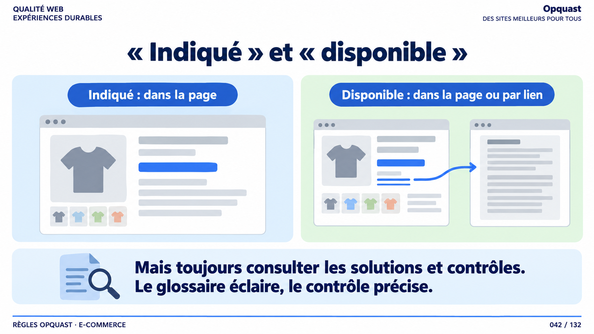
À gauche, une information est mise en évidence dans une page sous « Indiqué : dans la page ». À droite, une page contient un lien vers un autre document sous « Disponible : dans la page ou par lien ». Le bandeau rappelle de lire les solutions et contrôles.
Textes affichés dans l’image
- QUALITÉ WEB
- EXPÉRIENCES DURABLES
- Opquast
- DES SITES MEILLEURS POUR TOUS
- « Indiqué » et « disponible »
- Indiqué : dans la page
- Disponible : dans la page ou par lien
- Mais toujours consulter les solutions et contrôles.
- Le glossaire éclaire, le contrôle précise.
- RÈGLES OPQUAST · E-COMMERCE
- 042 / 132
Deux repères de vocabulaire
- Une information indiquée se consulte directement dans la page concernée.
- Une information disponible peut être présente dans la page ou accessible par un lien.
Les modalités précisent le vocabulaire
- Pour R36, une page de frais de livraison disponible avant commande peut convenir.
- Pour R52 et R55, les contrôles admettent également une information accessible par les pages prévues avant validation.
Une lecture complète
- Le délai de R35 se vérifie sur le récapitulatif, tandis que R46 demande l’accès aux conditions depuis toutes les pages.
- Un seul mot du libellé ne suffit pas à inventer une exigence plus stricte que le contrôle fourni.
Transition
- Ces nuances permettent de qualifier plusieurs informations financières du parcours.
Slide 43 - Rappel B : quelle information financière ?
Cinq cartes illustrent Crédits proposés, Moment du débit, Taxes et HT, Sous-total et Fournisseur du paiement. Aucun numéro de règle n’est fourni ; les éléments graphiques restent schématiques.
Textes affichés dans l’image
- QUALITÉ WEB
- EXPÉRIENCES DURABLES
- Opquast
- DES SITES MEILLEURS POUR TOUS
- Rappel B : quelle information financière ?
- Crédits proposés
- Moment du débit
- Taxes et HT
- Sous-total
- Fournisseur du paiement
- RÈGLES OPQUAST · E-COMMERCE
- 043 / 132
Une exigence pour chaque sujet
- Quelle règle répond au sujet représenté par chaque objet ?
- La réponse doit porter sur l’information demandée, sans se limiter à l’idée générale de paiement.
Un raisonnement à expliciter
- Quel risque l’absence de cette information ferait-elle courir à l’acheteur ?
- Quelle vérification permettrait de confirmer sa présence au bon endroit ?
Transition
- La fonction de chaque information permet de relier les constats aux exigences concernées.
Slide 44 - Rappel B : les correspondances
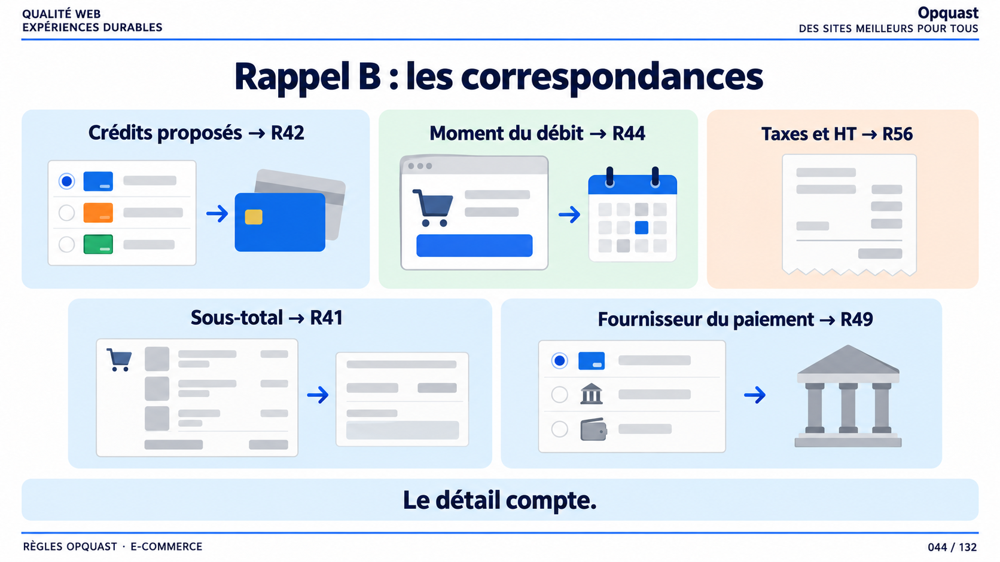
Cinq cartes donnent les correspondances : Crédits proposés vers R42, Moment du débit vers R44, Taxes et HT vers R56, Sous-total vers R41 et Fournisseur du paiement vers R49. Le bandeau indique « Le détail compte. »
Textes affichés dans l’image
- QUALITÉ WEB
- EXPÉRIENCES DURABLES
- Opquast
- DES SITES MEILLEURS POUR TOUS
- Rappel B : les correspondances
- Crédits proposés → R42
- Moment du débit → R44
- Taxes et HT → R56
- Sous-total → R41
- Fournisseur du paiement → R49
- Le détail compte.
- RÈGLES OPQUAST · E-COMMERCE
- 044 / 132
Financer et encaisser
- Les conditions des crédits proposés relèvent de R42.
- Les conditions de débit ou d’encaissement relèvent de R44 et doivent être accessibles avant validation du panier.
Décomposer le prix et la commande
- Les taxes, suppléments éventuels et montant hors taxes relèvent de R56, dont le contrôle des taxes porte sur le récapitulatif et la facture.
- Le sous-total détaillé de la commande relève de R41, avec une vérification avant validation.
Identifier le partenaire de paiement
- L’identité du prestataire bancaire ou de la solution de paiement relève de R49.
- Cette identité donne un repère sur l’acteur impliqué, sans prouver à elle seule la sécurité de la transaction.
Transition
- Un acheteur informé doit aussi pouvoir terminer sa commande sans créer de compte.
Slide 45 - Je peux commander sans compte
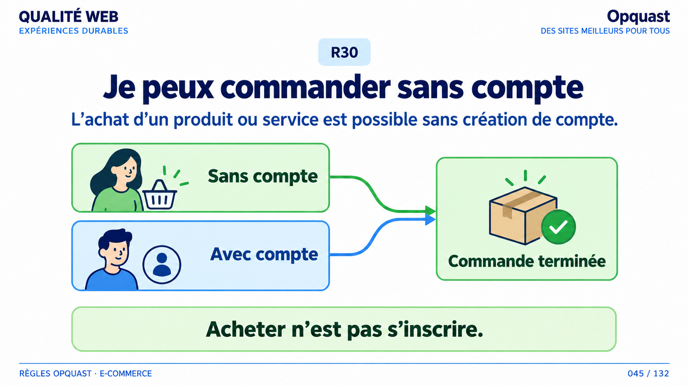
Deux parcours parallèles, Sans compte en vert et Avec compte en bleu, convergent vers un colis coché et la mention Commande terminée. Un encadré vert conclut : Acheter n’est pas s’inscrire.
Textes affichés dans l’image
- QUALITÉ WEB
- EXPÉRIENCES DURABLES
- Opquast
- DES SITES MEILLEURS POUR TOUS
- R30
- Je peux commander sans compte
- L’achat d’un produit ou service est possible sans création de compte.
- Sans compte
- Avec compte
- Commande terminée
- Acheter n’est pas s’inscrire.
- RÈGLES OPQUAST · E-COMMERCE
- 045 / 132
Acheter sans s’inscrire
- La règle 30 énonce : « L'achat d'un produit ou service est possible sans création de compte. »
- Une personne vient acheter des chaussures sans nécessairement vouloir ouvrir un compte sur la boutique.
- Le vendeur peut recueillir les informations utiles à la commande, comme l’adresse de livraison, sans rendre la création d’un compte obligatoire.
Impact du non-respect
- Un compte imposé ajoute une démarche à un achat que la personne souhaitait simplement terminer.
- Cette obligation peut devenir une barrière à la commande et fragiliser la confiance dans l’utilisation des données.
Ce que garantit la règle
- L’exigence porte sur la possibilité de terminer l’achat sans créer de compte, et pas seulement sur la présence d’un bouton proposant un accès invité.
- Pour la vérifier, il faut commencer une commande et la poursuivre jusqu’au bout en empruntant le chemin sans compte.
- Cette liberté ne dispense pas la boutique de donner ensuite accès aux justificatifs et aux démarches utiles après l’achat.
Transition
- Depuis le panier, il peut encore avoir besoin de revoir les détails du produit choisi.
Slide 46 - Depuis mon panier, je retrouve la fiche
Deux fenêtres représentent le panier à gauche et la fiche produit à droite. Le panier contient un lien Détails du produit. Entre les fenêtres, une flèche bleue pointe vers la fiche de la même chaussure. Le bandeau inférieur porte une coche et Vérifier depuis le panier.
Textes affichés dans l’image
- QUALITÉ WEB
- EXPÉRIENCES DURABLES
- Opquast
- DES SITES MEILLEURS POUR TOUS
- Depuis mon panier, je retrouve la fiche
- R31
- Détails du produit
- Vérifier depuis le panier.
- RÈGLES OPQUAST · E-COMMERCE
- 046 / 132
Retrouver les caractéristiques
- La règle 31 énonce : « Le détail de chaque article est consultable depuis le panier. »
- Un lien depuis le panier peut mener à la fiche complète, sans recopier toute sa description dans le récapitulatif.
Impact du non-respect
- Sans cet accès, je risque de valider un article différent de celui que je pensais avoir choisi.
Ce que garantit la règle
- La possibilité de consulter les détails concerne chaque article, et pas seulement le premier du panier.
- Le contrôle consiste à sélectionner plusieurs articles et à retrouver depuis le panier la fiche ou l’ensemble des informations de chacun.
Transition
- Retrouver une fiche permet de reconsidérer son choix ; encore faut-il pouvoir corriger le panier.
Slide 47 - Je peux corriger mon panier jusqu'au bout
Une acheteuse consulte un panier de deux articles. Chaque ligne propose Quantité avec moins et plus, Ajouter et Supprimer. Une flèche conduit au récapitulatif vert à droite, qui rappelle la possibilité de corriger avant validation définitive. Le même rappel figure dans le bandeau inférieur.
Textes affichés dans l’image
- QUALITÉ WEB
- EXPÉRIENCES DURABLES
- Opquast
- DES SITES MEILLEURS POUR TOUS
- Je peux corriger mon panier jusqu'au bout
- R38
- Quantité
- Ajouter
- Supprimer
- Avant validation définitive, je corrige.
- −
- +
- RÈGLES OPQUAST · E-COMMERCE
- 047 / 132
Corriger son choix avant de s’engager
- Au 28 octobre 2026, le libellé public de la règle 38 est : « La modification de la quantité, l’ajout et la suppression d’un ou plusieurs articles restent possibles avant la finalisation de la commande. »
- Le visuel conserve la formulation du snapshot du 3 septembre 2026, qui parlait de « validation définitive » ; le libellé cité ici est celui de l’API publique consultée le 28 octobre.
Impact du non-respect
- Un panier figé peut m’obliger à conserver une quantité ou un article non souhaité.
- J’avais choisi deux paires de chaussures, puis je réalise qu’une suffit.
Ce que garantit la règle
- L’exigence couvre la quantité, l’ajout et la suppression avant la finalisation de la commande.
- Le contrôle Opquast décrit une modification de quantité au cours d’une commande de test ; examiner aussi l’ajout et la suppression complète la vérification du libellé.
Transition
- La maîtrise du panier suppose également qu’aucun complément n’y arrive sans action de l’acheteur.
Slide 48 - Rien d'ajouté à mon insu
Deux paniers sont comparés. À gauche, sur fond pêche, une assurance symbolisée par un bouclier apparaît avec un avertissement. À droite, sur fond vert, une main coche volontairement l’assurance. Le bandeau rappelle Mon panier, mes choix.
Textes affichés dans l’image
- QUALITÉ WEB
- EXPÉRIENCES DURABLES
- Opquast
- DES SITES MEILLEURS POUR TOUS
- Rien d'ajouté à mon insu
- R32
- Assurance ajoutée sans action
- Assurance choisie
- Mon panier, mes choix.
- RÈGLES OPQUAST · E-COMMERCE
- 048 / 132
L’assurance que je n’ai pas choisie
- La règle 32 énonce : « Aucun produit ni service annexe n'est ajouté au panier de commande sans que cette action soit déclenchée par l'utilisateur. »
- Une assurance facultative qui apparaît dans mon panier reste un ajout non demandé, même si elle semble utile.
Impact du non-respect
- Je découvre un produit ou un service que je n’ai pas choisi, ce qui fragilise la confiance dans la commande.
Ce que garantit la règle
- Seuls les produits et services explicitement sélectionnés peuvent être ajoutés au panier.
- Le contrôle suit une commande jusqu’au panier final pour repérer tout ajout non déclenché par l’utilisateur.
- Le libellé ne distingue pas les compléments selon leur prix : le point décisif reste l’action qui déclenche l’ajout.
Transition
- L’ajout d’un complément et l’activation initiale d’un service méritent deux observations distinctes.
Slide 49 - Les services annexes ne sont pas préactivés
Deux fiches d’un casque audio comparent une option précochée à gauche, accompagnée d’une croix sur fond pêche, et une case vide à droite qu’une main peut sélectionner, sur fond vert. Le bandeau conclut Opt-in : je choisis.
Textes affichés dans l’image
- QUALITÉ WEB
- EXPÉRIENCES DURABLES
- Opquast
- DES SITES MEILLEURS POUR TOUS
- Les services annexes ne sont pas préactivés
- R33
- Option précochée
- Option à choisir
- Opt-in : je choisis.
- RÈGLES OPQUAST · E-COMMERCE
- 049 / 132
Accepter au lieu de devoir refuser
- La règle 33 énonce : « L'inscription à des services annexes n'est pas activée par défaut. »
- L’opt-in consiste à agir pour accepter, tandis que l’opt-out oblige à agir pour refuser une option déjà activée.
Impact du non-respect
- Une case précochée peut entraîner une inscription involontaire, qu’il s’agisse d’une assurance ou d’une newsletter.
Ce que garantit la règle
- L’inscription doit résulter d’un choix, au lieu d’obliger la personne à désactiver une option déjà retenue.
- Le contrôle examine l’état initial des options au fil de la commande, avant toute action d’acceptation.
- Une inscription gratuite doit également résulter du choix de l’utilisateur.
Transition
- Une assurance ajoutée et une inscription précochée illustrent cette différence.
Slide 50 - Piège n° 4 : ajout au panier ou activation par défaut ?
Trois cartes présentent, à gauche, une assurance ajoutée au panier, au centre une inscription à un courrier électronique précochée, et à droite une option avec case vide vers laquelle pointe une main. Les deux premiers cas sont sur fond pêche, le choix volontaire sur fond bleu.
Textes affichés dans l’image
- QUALITÉ WEB
- EXPÉRIENCES DURABLES
- Opquast
- DES SITES MEILLEURS POUR TOUS
- Piège n° 4 : ajout au panier ou activation par défaut ?
- R32 : ajout au panier
- R33 : inscription préactivée
- Opt-in : je décide d’accepter.
- RÈGLES OPQUAST · E-COMMERCE
- 050 / 132
Ce que le site ajoute
- Une assurance apparaît sans action dans le panier : R32 concerne cet ajout.
- Le contrôle suit les éléments sélectionnés jusqu’au panier final pour repérer les compléments introduits sans choix.
Ce que le site active
- Une newsletter cochée dès le départ relève de R33, qui porte sur l’inscription aux services annexes.
- Il faut observer l’état initial de l’option pour savoir si elle était activée avant toute intervention.
Le geste qui appartient à l’utilisateur
- Le contenu du panier et l’état initial des options fournissent deux observations distinctes du même parcours.
- Un même parcours peut enfreindre les deux règles, mais chaque constat doit décrire le comportement effectivement observé.
Transition
- Garder la main sur la commande concerne aussi le choix de l’adresse de livraison.
Slide 51 - Je peux livrer à une autre adresse
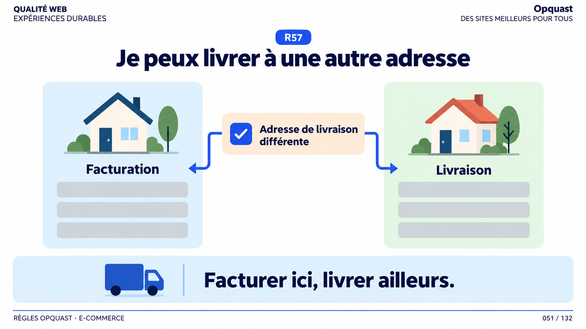
Deux maisons différentes représentent Facturation à gauche et Livraison à droite. L’option cochée Adresse de livraison différente relie les deux cartes. Un camion accompagne le rappel Facturer ici, livrer ailleurs.
Textes affichés dans l’image
- QUALITÉ WEB
- EXPÉRIENCES DURABLES
- Opquast
- DES SITES MEILLEURS POUR TOUS
- Je peux livrer à une autre adresse
- R57
- Facturation
- Livraison
- Adresse de livraison différente
- Facturer ici, livrer ailleurs.
- RÈGLES OPQUAST · E-COMMERCE
- 051 / 132
Un achat destiné à un proche
- La règle 57 énonce : « Une adresse de livraison différente de l'adresse de facturation peut être spécifiée. »
- Pour un cadeau, je peux souhaiter être facturé chez moi et faire livrer le produit ailleurs.
Impact du non-respect
- Sans cette possibilité, je ne peux pas choisir un lieu de livraison différent de l’adresse de facturation.
Ce que garantit la règle
- La règle demande la possibilité de spécifier les deux adresses distinctement.
- Le contrôle consiste à entreprendre une commande ou à modifier les données du compte, puis à saisir une adresse de livraison différente.
- Une phrase annonçant cette possibilité ne prouve pas que la saisie fonctionne.
Transition
- Au paiement, un autre choix porte sur la conservation des données bancaires.
Slide 52 - Ma carte n'est pas mémorisée automatiquement
Une acheteuse pointe vers une case vide Mémoriser ce moyen de paiement sous une carte masquée. Un cartouche Opt-in souligne le choix volontaire. Le mémo inférieur indique 59 : je choisis d’enregistrer.
Textes affichés dans l’image
- QUALITÉ WEB
- EXPÉRIENCES DURABLES
- Opquast
- DES SITES MEILLEURS POUR TOUS
- Ma carte n'est pas mémorisée automatiquement
- R59
- Mémoriser ce moyen de paiement
- Opt-in
- 59 : je choisis d’enregistrer.
- RÈGLES OPQUAST · E-COMMERCE
- 052 / 132
Un paiement et un choix distincts
- La règle 59 énonce : « Les données bancaires ne sont mémorisées qu'après consentement explicite de l'utilisateur. »
- J’utilise ma carte aujourd’hui sans forcément souhaiter que le service la conserve pour un prochain achat.
Impact du non-respect
- Mes données bancaires pourraient être conservées sans que je l’aie voulu.
Ce que garantit la règle
- La mémorisation par le service exige un consentement explicite, et non une option activée d’avance.
- Le contrôle suit la commande pour vérifier l’absence d’enregistrement automatique et la validation explicite de l’éventuel enregistrement.
- Ce contrôle concerne le service marchand, et non les fonctions éventuelles de mémorisation du navigateur.
Transition
- Le choix d’enregistrer une carte ne règle pas la possibilité de la gérer plus tard.
Slide 53 - Je peux modifier ou supprimer ma carte mémorisée
Une carte bancaire masquée apparaît au centre sous Carte mémorisée. Deux actions séparées figurent dessous : Modifier avec un crayon, Supprimer avec une corbeille. Le mémo indique 60 : je peux reprendre la main.
Textes affichés dans l’image
- QUALITÉ WEB
- EXPÉRIENCES DURABLES
- Opquast
- DES SITES MEILLEURS POUR TOUS
- Je peux modifier ou supprimer ma carte mémorisée
- R60
- Carte mémorisée
- Modifier
- Supprimer
- 60 : je peux reprendre la main.
- RÈGLES OPQUAST · E-COMMERCE
- 053 / 132
Une carte peut changer
- La règle 60 énonce : « Les données bancaires mémorisées peuvent être modifiées ou supprimées. »
- Une carte peut être remplacée ou arriver à expiration, même si sa mémorisation avait été volontaire.
Impact du non-respect
- Sans possibilité de mise à jour ou de retrait, je perds la maîtrise des données conservées.
Ce que garantit la règle
- La règle porte sur la possibilité de modifier et supprimer les données bancaires mémorisées.
- Après avoir mémorisé des données de test, le contrôle vérifie ces deux actions depuis la gestion du compte.
- L’existence de boutons ne suffit pas à prouver que les actions aboutissent.
Transition
- Le consentement initial et la gestion ultérieure forment deux temps du même service.
Slide 54 - Deux temps pour ma carte : consentir puis supprimer
Une flèche relie un formulaire de paiement avec case vide à un écran de gestion de cartes comportant des crayons et des corbeilles. Les repères R59 et R60 distinguent le choix initial et la gestion ultérieure. En bas, une personne s’interroge : Achat invité et facture en ligne ?
Textes affichés dans l’image
- QUALITÉ WEB
- EXPÉRIENCES DURABLES
- Opquast
- DES SITES MEILLEURS POUR TOUS
- Deux temps pour ma carte : consentir puis supprimer
- R59 : choisir la mémorisation
- R60 : modifier ou supprimer ensuite
- Achat invité et facture en ligne ?
- RÈGLES OPQUAST · E-COMMERCE
- 054 / 132
Choisir d’enregistrer
- R59 porte sur le consentement explicite préalable à la mémorisation par le service.
- Payer avec une carte et demander sa conservation pour plus tard sont deux choix distincts.
Garder la main ensuite
- R60 porte sur la possibilité de modifier ou de supprimer les données déjà mémorisées.
- Un consentement correctement recueilli ne prouve donc pas que cette gestion ultérieure est possible.
Transition
- Quantité, complément et mémorisation de carte donnent trois situations où observer cette maîtrise.
Slide 55 - Rappel actif C : le panier obéit à l'utilisateur
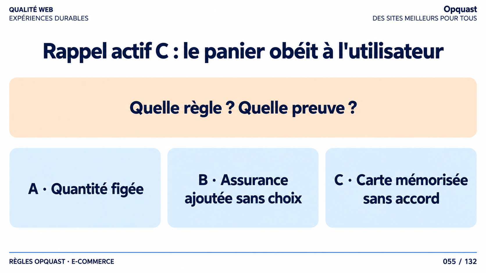
La question Quelle règle ? Quelle preuve ? occupe un grand bandeau pêche. Trois cartes bleues identiques présentent A, quantité figée ; B, assurance ajoutée sans choix ; C, carte mémorisée sans accord. Aucune correction n’est affichée.
Textes affichés dans l’image
- QUALITÉ WEB
- EXPÉRIENCES DURABLES
- Opquast
- DES SITES MEILLEURS POUR TOUS
- Rappel actif C : le panier obéit à l'utilisateur
- A · Quantité figée
- B · Assurance ajoutée sans choix
- C · Carte mémorisée sans accord
- Quelle règle ? Quelle preuve ?
- RÈGLES OPQUAST · E-COMMERCE
- 055 / 132
Trois choix retirés à l’acheteur
- La quantité ne peut pas être modifiée, une assurance a été ajoutée sans choix et la carte est conservée automatiquement.
- Ces trois observations retirent chacune une décision à l’utilisateur.
Associer une preuve au constat
- Pour chaque anomalie, quelle exigence est concernée et comment vérifier le comportement dans une commande réelle ?
- Une réponse utile relie le fait observé, le risque et la preuve attendue, avant de fixer le numéro de la règle.
Transition
- Chaque décision retirée à l’acheteur appelle une exigence et une preuve spécifiques.
Slide 56 - Rappel actif C : le panier obéit à l'utilisateur : correction
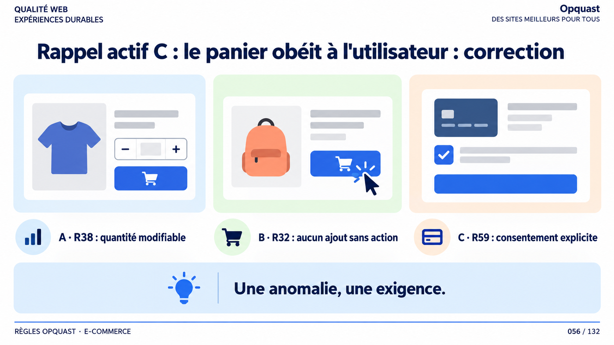
Trois cartes illustrent une quantité réglable avec moins et plus, un ajout au panier déclenché par un clic et le consentement à la mémorisation d’une carte. Sous chacune figurent respectivement R38, R32 et R59. Le bandeau conclut Une anomalie, une exigence.
Textes affichés dans l’image
- QUALITÉ WEB
- EXPÉRIENCES DURABLES
- Opquast
- DES SITES MEILLEURS POUR TOUS
- Rappel actif C : le panier obéit à l'utilisateur : correction
- A · R38 : quantité modifiable
- B · R32 : aucun ajout sans action
- C · R59 : consentement explicite
- Une anomalie, une exigence.
- −
- +
- RÈGLES OPQUAST · E-COMMERCE
- 056 / 132
A : modifier avant la finalisation
- La quantité figée relève de R38, qui couvre également l’ajout et la suppression d’articles.
- La preuve repose sur une commande de test et des modifications effectuées avant la finalisation de la commande.
B : choisir le contenu du panier
- L’assurance ajoutée sans choix relève de R32.
- Le contrôle compare les sélections de l’utilisateur avec les éléments présents dans le panier final.
C : consentir à la mémorisation
- La conservation automatique de la carte relève de R59.
- Le contrôle vérifie que l’enregistrement par le service demande une action explicite, distincte du paiement.
Transition
- Une fois la commande validée, l’acheteur a besoin d’une première trace de sa transaction.
Slide 57 - Une référence apparaît juste après validation
Une acheteuse regarde un écran de confirmation. Sous une coche verte, Commande validée précède la référence TX-2406 mise en évidence. Le bandeau inférieur reprend R61 et 61 : référence sur la page.
Textes affichés dans l’image
- QUALITÉ WEB
- EXPÉRIENCES DURABLES
- Opquast
- DES SITES MEILLEURS POUR TOUS
- Une référence apparaît juste après validation
- R61
- Commande validée
- TX-2406
- 61 : référence sur la page.
- RÈGLES OPQUAST · E-COMMERCE
- 057 / 132
Une trace immédiatement consultable
- La règle 61 énonce : « La référence de la transaction est affichée au client après la validation de sa commande. »
- Après la validation, la référence TX-2406 permet d’identifier la transaction dans cet exemple fictif.
Impact du non-respect
- Sans référence affichée, je ne dispose pas d’une trace écrite immédiatement consultable de l’opération.
Ce que garantit la règle
- La règle demande l’affichage de la référence après validation de la commande.
- Le contrôle mène un achat de test à son terme puis examine la page de confirmation.
- Cet affichage ne prouve pas l’envoi d’un message de commande ou d’une facture.
Transition
- La référence affichée doit être distinguée des informations envoyées après la commande.
Slide 58 - Je reçois les données de la commande par e-mail
À côté d’une acheteuse devant son ordinateur, une enveloppe ouverte agrandit le message de confirmation. Il comporte Référence : TX-2406 et Produits · quantités · montants. Le bandeau rappelle 66 : commande reçue par e-mail.
Textes affichés dans l’image
- QUALITÉ WEB
- EXPÉRIENCES DURABLES
- Opquast
- DES SITES MEILLEURS POUR TOUS
- Je reçois les données de la commande par e-mail
- R66
- Référence : TX-2406
- Produits · quantités · montants
- 66 : commande reçue par e-mail.
- RÈGLES OPQUAST · E-COMMERCE
- 058 / 132
Retrouver la commande après avoir fermé la page
- La règle 66 énonce : « Un e-mail indiquant la référence de la transaction et les données de la commande est envoyé suite à la validation. »
- Ce libellé est celui de l’API publique au 28 octobre 2026 ; le snapshot utilisé pour le visuel écrivait « mail ».
- Une page de confirmation peut disparaître de ma vue quand je ferme l’onglet.
Impact du non-respect
- Sans message, je n’ai pas de trace autonome des données de ma commande en dehors du site.
Ce que garantit la règle
- La règle exige un e-mail contenant la référence de transaction et les données de commande après validation.
- Le contrôle termine une commande puis vérifie que le message parvient effectivement au destinataire avec les informations attendues.
- Un message de commande n’est pas nécessairement une facture.
Transition
- Conserver les données de commande ne remplace pas l’accès ultérieur à une facture.
Slide 59 - Je peux retrouver mes factures en ligne
Une acheteuse consulte un historique intitulé Factures. La première ligne propose Consulter et Télécharger. Un document portant le symbole euro évoque la facture à droite. Le bandeau indique 62 : facture retrouvable en ligne.
Textes affichés dans l’image
- QUALITÉ WEB
- EXPÉRIENCES DURABLES
- Opquast
- DES SITES MEILLEURS POUR TOUS
- Je peux retrouver mes factures en ligne
- R62
- Factures
- Consulter
- Télécharger
- 62 : facture retrouvable en ligne.
- €
- RÈGLES OPQUAST · E-COMMERCE
- 059 / 132
Retrouver un justificatif
- La règle 62 énonce : « Les factures émises sont également disponibles en ligne. »
- Je peux avoir perdu le message reçu ou avoir besoin d’une facture pour rapprocher mes dépenses.
Impact du non-respect
- Sans accès en ligne, je risque de ne plus retrouver un justificatif utile à ma gestion.
Ce que garantit la règle
- La disponibilité en ligne complète les autres traces de la transaction.
- La solution et le contrôle Opquast passent par le compte utilisateur, où il faut retrouver la facture et pouvoir la télécharger.
- Cette mise en œuvre doit être articulée avec R30 et l’achat sans création de compte, sans présenter une solution technique unique comme une obligation officielle.
Transition
- L’accès en ligne se complète par la confirmation de chaque facturation.
Slide 60 - Chaque facture est confirmée par e-mail
Un écran marchand est relié à une série d’enveloppes, puis à un message intitulé Votre facture contenant un document. La série rappelle Chaque facture envoyée. Le bandeau conclut 63 : facture par e-mail.
Textes affichés dans l’image
- QUALITÉ WEB
- EXPÉRIENCES DURABLES
- Opquast
- DES SITES MEILLEURS POUR TOUS
- Chaque facture est confirmée par e-mail
- R63
- Votre facture
- Chaque facture envoyée
- 63 : facture par e-mail.
- RÈGLES OPQUAST · E-COMMERCE
- 060 / 132
Une trace de chaque facturation
- La règle 63 énonce : « Chaque facturation fait l’objet d’un e-mail de confirmation. »
- Ce libellé est celui de l’API publique au 28 octobre 2026 ; le snapshot utilisé pour le visuel écrivait « mail ».
- La confirmation d’une commande ne contient pas nécessairement la facture qui lui correspond.
Impact du non-respect
- Sans cet envoi, je risque de perdre la trace d’une facturation et son justificatif.
Ce que garantit la règle
- Le libellé porte sur chaque facturation ; la solution et le contrôle précisent l’envoi de chaque facture établie par mail.
- Le contrôle vérifie que chacune des factures établies à l’issue de la commande est effectivement envoyée à l’utilisateur.
- La facture disponible en ligne ne suffit pas, à elle seule, à démontrer cet envoi.
Transition
- Ces traces doivent être distinguées selon le document, le support et le moment concernés.
Slide 61 - Piège n° 5 : quatre traces, quatre exigences
Une grille de quatre cartes associe R61 à un écran de confirmation, R66 à une enveloppe de commande, R62 à un historique de factures et R63 à une enveloppe de facture. Les libellés distinguent le support et la nature de chaque trace.
Textes affichés dans l’image
- QUALITÉ WEB
- EXPÉRIENCES DURABLES
- Opquast
- DES SITES MEILLEURS POUR TOUS
- Piège n° 5 : quatre traces, quatre exigences
- R61 : référence sur la page
- R66 : commande par e-mail
- R62 : facture en ligne
- R63 : facture par e-mail
- RÈGLES OPQUAST · E-COMMERCE
- 061 / 132
La transaction et la commande
- La référence affichée après validation permet de désigner la transaction dès la fin du parcours.
- Le message de commande reçu conserve sa référence et ses données en dehors de la page que l’on vient de fermer.
Les deux accès à la facture
- La facture consultable en ligne reste accessible dans le service, tandis que l’envoi de chaque facture laisse une trace dans la messagerie.
- La présence d’un document sur un support ne démontre pas sa présence sur l’autre.
Vérifier chaque trace
- Un mail de commande peut arriver alors qu’aucune facture n’est encore disponible dans le service.
- Le constat précise donc le document, le support et le moment attendu, puis conserve la preuve propre à chacun.
Transition
- Après les justificatifs d’achat, une réclamation produit elle aussi une trace attendue.
Slide 62 - Je reçois une preuve de ma réclamation
Une acheteuse consulte un formulaire marqué Réclamation envoyée. Une flèche mène à une enveloppe intitulée Accusé de réception. Le bandeau avec une icône d’information rappelle 67 : reçu, pas résolu.
Textes affichés dans l’image
- QUALITÉ WEB
- EXPÉRIENCES DURABLES
- Opquast
- DES SITES MEILLEURS POUR TOUS
- Je reçois une preuve de ma réclamation
- R67
- Réclamation envoyée
- Accusé de réception
- 67 : reçu, pas résolu.
- RÈGLES OPQUAST · E-COMMERCE
- 062 / 132
Savoir que la demande est arrivée
- La règle 67 énonce : « Chaque réclamation fait l'objet d'un accusé de réception. »
- J’ai signalé un colis abîmé et je cherche à savoir si ma demande est bien parvenue au service.
Impact du non-respect
- Sans confirmation, je peux douter de la réception et répéter inutilement la même demande.
Ce que garantit la règle
- L’accusé fournit une confirmation de la demande en dehors du contexte de navigation.
- Le contrôle envoie une réclamation fictive par le canal indiqué puis vérifie l’envoi d’un accusé par le service.
- La réception ne garantit ni la résolution du problème ni une réponse favorable.
Transition
- Cette trace de réception a une portée différente de la procédure et du résultat final.
Slide 63 - Informer, recevoir, résoudre : trois étapes distinctes
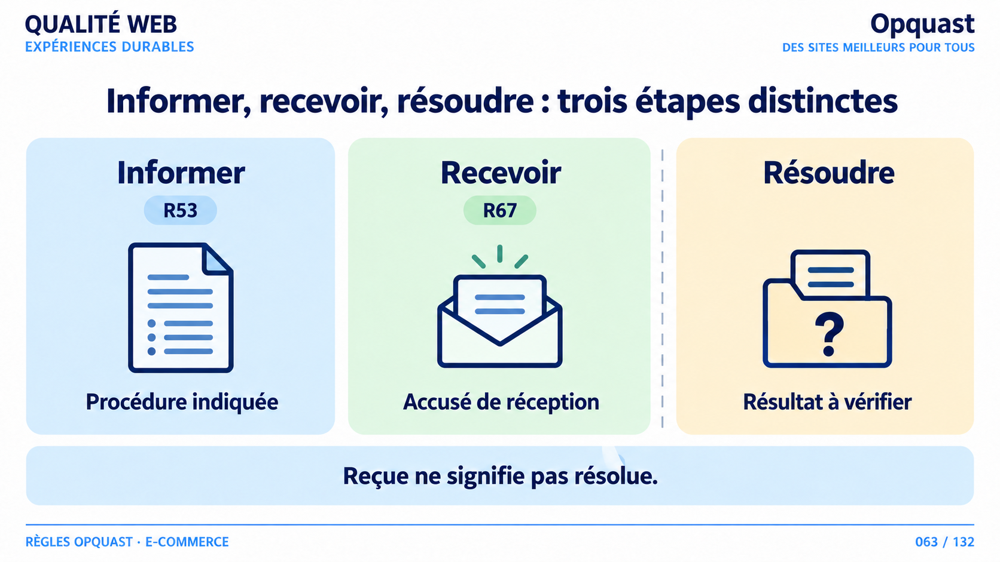
Trois cartes alignées distinguent Informer avec R53 et une procédure, Recevoir avec R67 et une enveloppe, puis Résoudre avec un dossier portant un point d’interrogation. Une séparation pointillée isole le résultat à vérifier. Le bandeau conclut Reçue ne signifie pas résolue.
Textes affichés dans l’image
- QUALITÉ WEB
- EXPÉRIENCES DURABLES
- Opquast
- DES SITES MEILLEURS POUR TOUS
- Informer, recevoir, résoudre : trois étapes distinctes
- Informer
- R53
- Procédure indiquée
- Recevoir
- R67
- Accusé de réception
- Résoudre
- Résultat à vérifier
- Reçue ne signifie pas résolue.
- RÈGLES OPQUAST · E-COMMERCE
- 063 / 132
Savoir comment déposer une réclamation
- L’acheteur doit trouver le mode de dépôt et la procédure de traitement de sa réclamation.
- Le contrôle de cette information porte sur sa présence, pas sur la qualité du résultat obtenu par le service.
Savoir que la demande a été reçue
- L’accusé de réception donne une confirmation de la demande en dehors de la navigation sur le site.
- Cette trace établit la réception de la demande, sans renseigner à elle seule sur les suites qui lui seront données.
Savoir si le problème est résolu
- Une procédure consultable et un accusé de réception ne permettent pas, à eux seuls, de conclure que le problème est réglé.
- La distinction décisive est celle entre informer, confirmer la réception et constater un résultat.
Transition
- Ces distinctions reposent sur un vocabulaire précis des documents et des services.
Slide 64 - Glossaire 1 : CGU, CGV et produits annexes
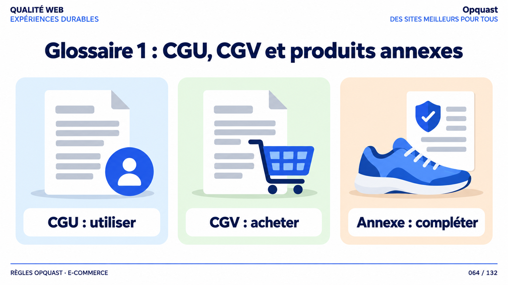
Trois cartes présentent un document avec une silhouette pour CGU : utiliser, un document avec un panier pour CGV : acheter, puis une chaussure avec un document de garantie pour Annexe : compléter.
Textes affichés dans l’image
- QUALITÉ WEB
- EXPÉRIENCES DURABLES
- Opquast
- DES SITES MEILLEURS POUR TOUS
- Glossaire 1 : CGU, CGV et produits annexes
- CGU : utiliser
- CGV : acheter
- Annexe : compléter
- RÈGLES OPQUAST · E-COMMERCE
- 064 / 132
CGU : les modalités d’utilisation
- Les conditions générales d’utilisation encadrent les interactions entre un service et ses utilisateurs.
- Elles décrivent le cadre d’usage du service, qui ne se réduit pas aux conditions d’un achat.
CGV : le cadre de la vente
- Les conditions générales de vente précisent les conditions de commande, livraison, paiement et les droits et obligations associés.
- La règle 46 concerne la disponibilité de ces conditions depuis toutes les pages.
Annexe : un complément à l’achat
- Une assurance, une extension de garantie ou une pièce associée au produit principal sont des exemples de produits ou services annexes.
- R32 concerne leur ajout au panier et R33 l’absence de préactivation de l’inscription à des services annexes.
Transition
- La différenciation des produits et le taux de transformation demandent la même précision de vocabulaire.
Slide 65 - Glossaire 2 : différenciation et taux de transformation
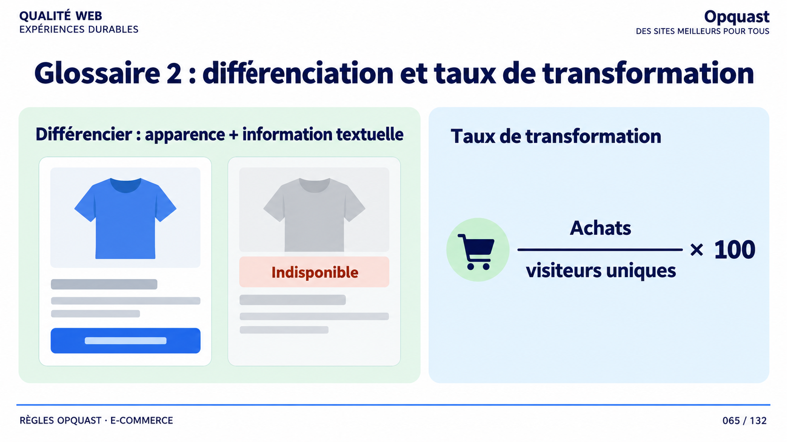
À gauche, deux fiches de tee-shirt comparent une présentation active à une présentation grisée portant Indisponible. À droite, une fraction place Achats au numérateur et visiteurs uniques au dénominateur, suivie de × 100.
Textes affichés dans l’image
- QUALITÉ WEB
- EXPÉRIENCES DURABLES
- Opquast
- DES SITES MEILLEURS POUR TOUS
- Glossaire 2 : différenciation et taux de transformation
- Différencier : apparence + information textuelle
- Indisponible
- Taux de transformation
- Achats / visiteurs uniques × 100
- RÈGLES OPQUAST · E-COMMERCE
- 065 / 132
Une différence compréhensible
- Une différenciation visuelle utilise la couleur, la forme ou l’emplacement, tandis qu’une différenciation textuelle apporte une mention explicite.
- Le tee-shirt porte ici la mention « Indisponible » : la distinction ne repose donc pas seulement sur sa couleur grisée.
Une proportion à interpréter
- Le taux de transformation rapporte le nombre d’achats au nombre de visiteurs uniques, puis multiplie ce ratio par cent.
- Une hausse de ce taux ne démontre pas, à elle seule, une amélioration de la qualité du service.
Transition
- Huit achats pour deux cents visiteurs uniques donnent un cas concret de ce ratio.
Slide 66 - 8 achats sur 200 visiteurs uniques ?
Deux grandes cartes affichent 8 achats avec un panier et 200 visiteurs uniques avec un groupe de silhouettes. Le bandeau inférieur demande Quel taux de transformation ? sans afficher le résultat.
Textes affichés dans l’image
- QUALITÉ WEB
- EXPÉRIENCES DURABLES
- Opquast
- DES SITES MEILLEURS POUR TOUS
- 8 achats sur 200 visiteurs uniques ?
- 8 achats
- 200 visiteurs uniques
- Quel taux de transformation ?
- RÈGLES OPQUAST · E-COMMERCE
- 066 / 132
Deux données à rapprocher
- Le site compte huit achats pour deux cents visiteurs uniques dans cet exemple.
- Nous cherchons la proportion d’achats parmi ces visiteurs, exprimée en pourcentage.
Passer du ratio au pourcentage
- Quelle opération permet de relier ces deux valeurs ?
- Le résultat doit garder le même sens que la définition : achats rapportés aux visiteurs uniques.
Transition
- Le calcul permet de préciser cette proportion et de borner son interprétation.
Slide 67 - Taux de transformation : correction
Une scène de consultation de produits mène à une confirmation d’achat. En dessous, le calcul 8 / 200 × 100 = 4 % met le résultat en grand. Le dernier bandeau précise Un indicateur, pas une preuve de qualité.
Textes affichés dans l’image
- QUALITÉ WEB
- EXPÉRIENCES DURABLES
- Opquast
- DES SITES MEILLEURS POUR TOUS
- Taux de transformation : correction
- 8 / 200 × 100 = 4 %
- Un indicateur, pas une preuve de qualité.
- RÈGLES OPQUAST · E-COMMERCE
- 067 / 132
Le calcul
- Huit divisé par deux cents donne 0,04, soit 4 % après multiplication par cent.
- Le numérateur représente les achats et le dénominateur les visiteurs uniques.
La portée de ce résultat
- Ce pourcentage décrit la proportion d’achats dans les données fournies.
- Il ne prouve pas, à lui seul, que la livraison, les justificatifs ou l’assistance répondent aux besoins de l’acheteur.
Transition
- Un taux d’achat ne dit pas ce qui se passe lors de la livraison ou d’une demande d’aide.
Slide 68 - Ce qui se passe hors de l'écran compte aussi
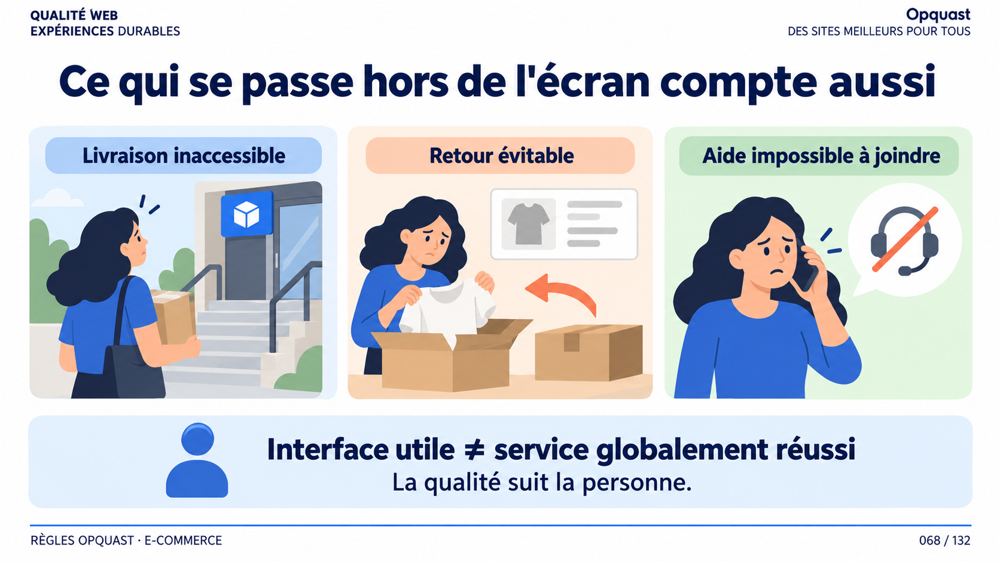
Trois scènes montrent la même acheteuse devant un point relais accessible par des marches, avec un vêtement à retourner, puis au téléphone sans aide disponible. Le bandeau oppose interface utile et service globalement réussi et rappelle que la qualité suit la personne.
Textes affichés dans l’image
- QUALITÉ WEB
- EXPÉRIENCES DURABLES
- Opquast
- DES SITES MEILLEURS POUR TOUS
- Ce qui se passe hors de l'écran compte aussi
- Interface utile ≠ service globalement réussi
- Livraison inaccessible
- Retour évitable
- Aide impossible à joindre
- La qualité suit la personne.
- RÈGLES OPQUAST · E-COMMERCE
- 068 / 132
Accéder au service réel
- Un site utilisable peut déboucher sur un point relais impossible d’accès pour une personne à mobilité réduite.
- La qualité de l’interface ne démontre donc pas la réussite de tout le service.
Éviter les conséquences de l’information manquante
- Un produit mal décrit peut entraîner un retour et des transports supplémentaires.
- Ce lien décrit une conséquence possible ; en chiffrer l’impact environnemental demanderait une étude spécifique.
Trouver de l’aide
- Un acheteur qui ne peut joindre personne reste en difficulté même si son paiement a fonctionné.
- Le parcours relie les contenus, les formulaires, l’accessibilité et les services autour du besoin de la personne.
Transition
- Une fiche, une option et une annonce d’envoi permettent d’examiner la portée des preuves visibles.
Slide 69 - Atelier mini-audit : observer avant de conclure
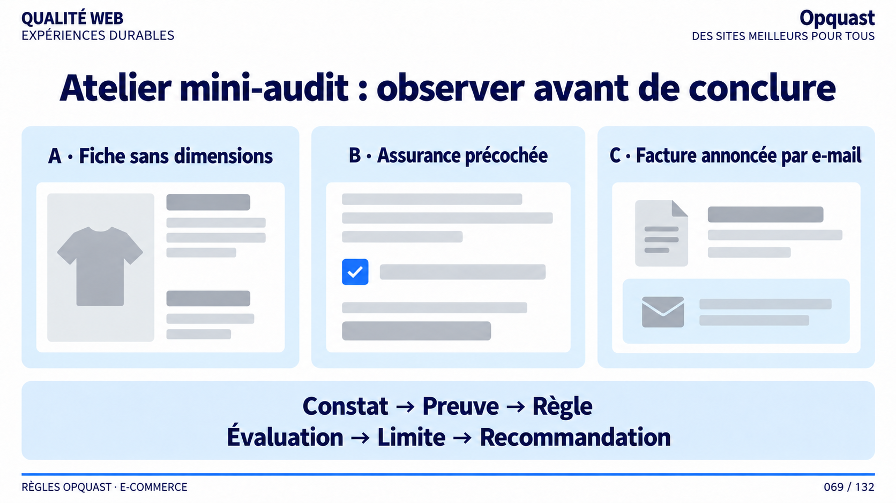
Trois cartes bleues de même traitement présentent une fiche sans dimensions, une assurance précochée et une facture annoncée par e-mail. Le bandeau de méthode enchaîne Constat, Preuve, Règle, puis Évaluation, Limite, Recommandation.
Textes affichés dans l’image
- QUALITÉ WEB
- EXPÉRIENCES DURABLES
- Opquast
- DES SITES MEILLEURS POUR TOUS
- Atelier mini-audit : observer avant de conclure
- A · Fiche sans dimensions
- B · Assurance précochée
- C · Facture annoncée par e-mail
- Constat → Preuve → Règle
- Évaluation → Limite → Recommandation
- RÈGLES OPQUAST · E-COMMERCE
- 069 / 132
Décrire les extraits
- La fiche ne présente pas de dimensions, l’assurance est précochée et un message annonce une facture par e-mail.
- Pour chaque cas, nous cherchons un constat précis, la règle concernée et le risque pour l’acheteur.
Qualifier la preuve
- Que peut-on établir à partir de ces seuls extraits, et quelle action reste nécessaire pour conclure ?
- Une évaluation utile explicite la preuve, sa limite et une recommandation liée au constat.
Transition
- La conclusion doit séparer le défaut observable de ce qui demande encore une vérification.
Slide 70 - Atelier mini-audit : observer avant de conclure : correction
Trois cartes de correction associent A à R39 avec des caractéristiques manquantes, B à R33 avec une option précochée et C à R63 avec une facture et une enveloppe examinées à la loupe. La mention envoi non vérifié et le mémo rappellent qu’une annonce ne prouve pas l’envoi.
Textes affichés dans l’image
- QUALITÉ WEB
- EXPÉRIENCES DURABLES
- Opquast
- DES SITES MEILLEURS POUR TOUS
- Atelier mini-audit : observer avant de conclure : correction
- A · R39 : caractéristiques manquantes
- B · R33 : option préactivée
- C · R63 : envoi non vérifié
- Une annonce n’est pas une preuve d’envoi.
- €
- RÈGLES OPQUAST · E-COMMERCE
- 070 / 132
A : les caractéristiques du produit
- L’absence de dimensions observée sur la fiche oriente le contrôle vers R39 et les caractéristiques quantifiables.
- Le constat doit préciser le périmètre de la fiche examinée, puis recommander les caractéristiques manquantes utiles au choix.
B : le choix déjà effectué par le site
- La case d’assurance déjà cochée matérialise une préactivation relevant de R33.
- La recommandation est de laisser l’option non activée afin que l’utilisateur choisisse explicitement de l’accepter.
C : la promesse d’envoi
- L’annonce d’une facture par e-mail ne prouve pas que chaque facture sera effectivement envoyée conformément à R63.
- Il reste à mener une commande de test et à vérifier l’envoi de chaque facture établie avant de conclure.
Transition
- Cette prudence s’applique aussi à la formulation d’une exigence sur les conditions générales de vente.
Slide 71 - Post-test T1 : affirmation 1/5
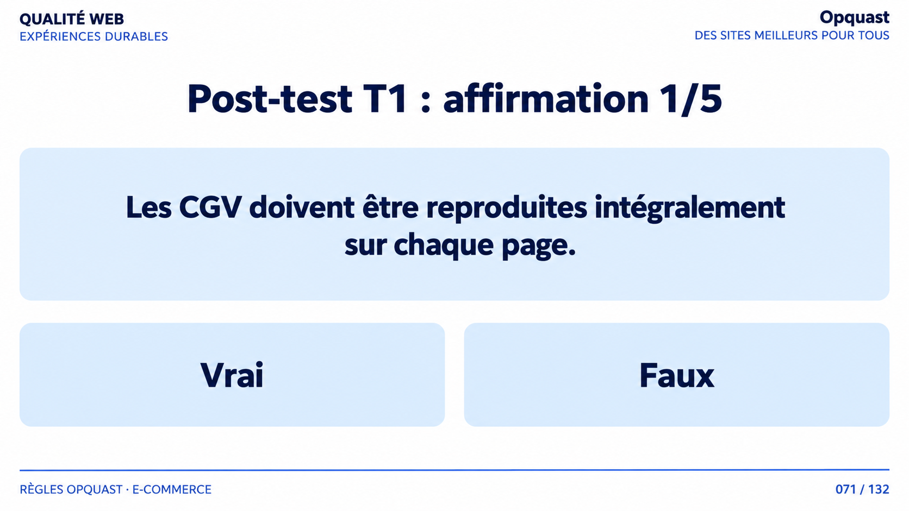
L’affirmation sur la reproduction intégrale des CGV figure dans une grande carte bleue. Deux cartes de même taille et couleur présentent Vrai et Faux, sans indication de réponse.
Textes affichés dans l’image
- QUALITÉ WEB
- EXPÉRIENCES DURABLES
- Opquast
- DES SITES MEILLEURS POUR TOUS
- Post-test T1 : affirmation 1/5
- Les CGV doivent être reproduites intégralement sur chaque page.
- Vrai
- Faux
- RÈGLES OPQUAST · E-COMMERCE
- 071 / 132
L’accès aux documents contractuels
- Une personne peut chercher les conditions depuis un produit ou depuis son panier.
- L’affirmation porte cette fois encore sur leur reproduction intégrale à chaque page.
Le besoin et la formulation
- Le besoin de consulter un document sert de point de départ au raisonnement.
- La formulation proposée doit être examinée telle quelle, avec sa portée sur toutes les pages.
Transition
- L’emplacement d’une estimation des frais pose une question voisine sur l’accès à l’information.
Slide 72 - Post-test T1 : affirmation 2/5
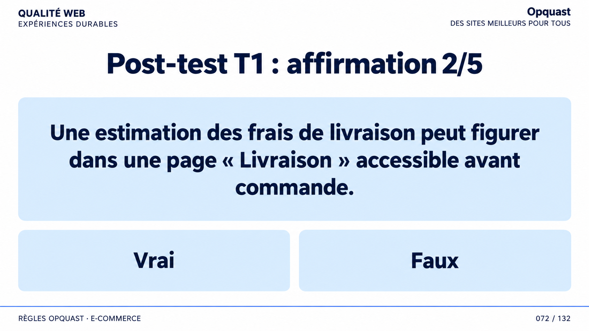
Une carte centrale présente l’affirmation sur l’estimation des frais dans une page Livraison accessible avant commande. En dessous, Vrai et Faux occupent deux cartes bleues identiques.
Textes affichés dans l’image
- QUALITÉ WEB
- EXPÉRIENCES DURABLES
- Opquast
- DES SITES MEILLEURS POUR TOUS
- Post-test T1 : affirmation 2/5
- Une estimation des frais de livraison peut figurer dans une page « Livraison » accessible avant commande.
- Vrai
- Faux
- RÈGLES OPQUAST · E-COMMERCE
- 072 / 132
Une estimation avant l’achat
- Une page Livraison rassemble les informations tarifaires du service.
- Le scénario précise qu’elle est accessible avant la commande.
Le lien avec le produit choisi
- L’estimation est examinée dans le contexte de l’achat de Léa.
- La question porte sur la possibilité de cette organisation de l’information, sans ajouter d’emplacement absent de l’énoncé.
Transition
- Le raisonnement se poursuit avec le rapport entre message de commande et facture en ligne.
Slide 73 - Post-test T1 : affirmation 3/5
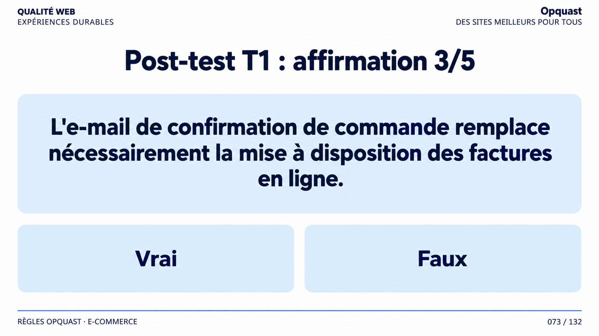
L’affirmation sur le remplacement des factures en ligne par le mail de confirmation figure au centre. Deux cartes bleues identiques proposent Vrai et Faux.
Textes affichés dans l’image
- QUALITÉ WEB
- EXPÉRIENCES DURABLES
- Opquast
- DES SITES MEILLEURS POUR TOUS
- Post-test T1 : affirmation 3/5
- L'e-mail de confirmation de commande remplace nécessairement la mise à disposition des factures en ligne.
- Vrai
- Faux
- RÈGLES OPQUAST · E-COMMERCE
- 073 / 132
Un message et un justificatif
- Le message reçu après commande constitue une trace conservée dans la messagerie.
- L’affirmation le compare à des factures disponibles en ligne.
La portée du remplacement
- Il s’agit d’examiner une équivalence présentée comme nécessaire.
- Le raisonnement doit garder le sens des mots « commande » et « factures », ainsi que les supports mentionnés.
Transition
- La mémorisation d’une carte conduit à examiner une décision prise pendant le paiement.
Slide 74 - Post-test T1 : affirmation 4/5
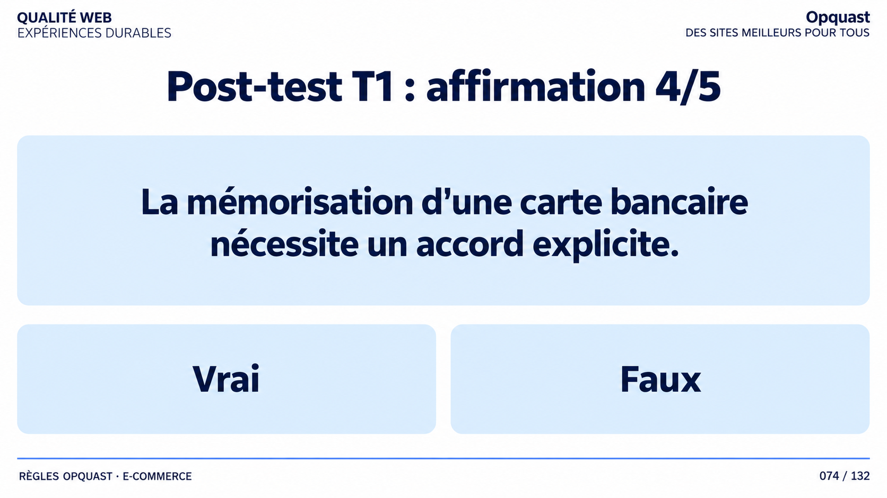
L’affirmation sur l’accord explicite nécessaire à la mémorisation d’une carte occupe la carte centrale. Les choix Vrai et Faux sont présentés dans deux cartes bleues identiques.
Textes affichés dans l’image
- QUALITÉ WEB
- EXPÉRIENCES DURABLES
- Opquast
- DES SITES MEILLEURS POUR TOUS
- Post-test T1 : affirmation 4/5
- La mémorisation d'une carte bancaire nécessite un accord explicite.
- Vrai
- Faux
- RÈGLES OPQUAST · E-COMMERCE
- 074 / 132
Une carte pour une prochaine utilisation
- L’achat actuel utilise des données bancaires ; leur conservation concerne un usage ultérieur.
- L’affirmation fait intervenir un accord explicite avant la mémorisation.
La preuve d’un choix
- L’analyse porte sur une décision relative à l’enregistrement par le service.
- Elle reste distincte de toute hypothèse sur le stockage réalisé par le navigateur ou par un autre acteur.
Transition
- La réception d’une réclamation pose ensuite la question de ce que prouve un message.
Slide 75 - Post-test T1 : affirmation 5/5
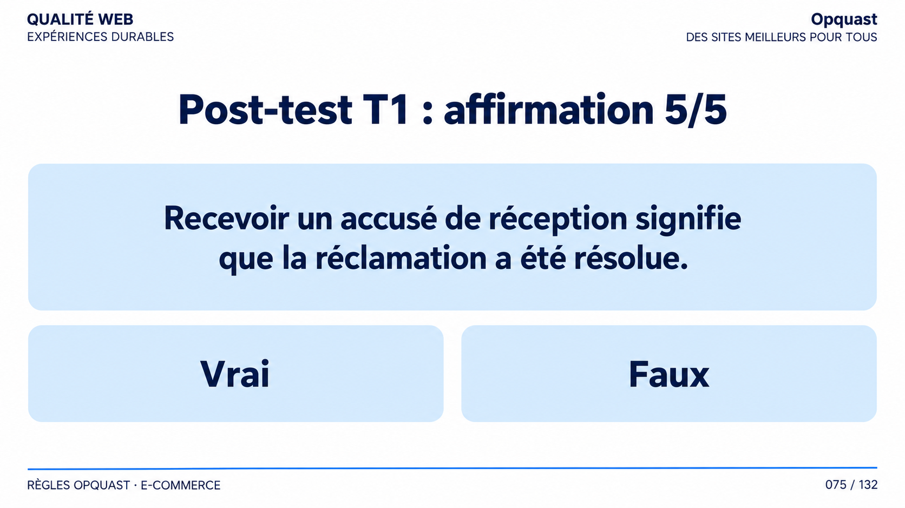
Une carte centrale présente l’affirmation reliant accusé de réception et résolution de la réclamation. Les réponses Vrai et Faux figurent dans deux cartes bleues identiques.
Textes affichés dans l’image
- QUALITÉ WEB
- EXPÉRIENCES DURABLES
- Opquast
- DES SITES MEILLEURS POUR TOUS
- Post-test T1 : affirmation 5/5
- Recevoir un accusé de réception signifie que la réclamation a été résolue.
- Vrai
- Faux
- RÈGLES OPQUAST · E-COMMERCE
- 075 / 132
Le suivi d’une difficulté
- La réclamation a été transmise et un message en accuse réception.
- L’affirmation porte sur le résultat du traitement de cette demande.
La conclusion annoncée
- Le scénario donne un message reçu, sans décrire d’autre échange avec le service.
- Toute conclusion doit pouvoir être reliée aux faits effectivement fournis.
Transition
- La portée exacte des mots permet d’abord de revenir sur l’accès aux conditions générales.
Slide 76 - Post-test T1 : correction 1/5
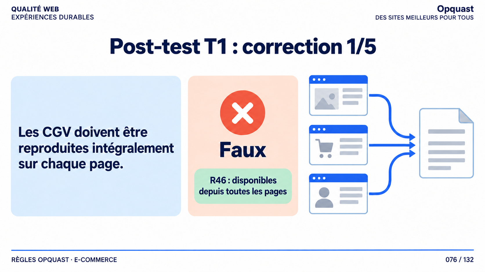
À gauche figure l’affirmation initiale ; au centre, Faux avec une croix et R46 : disponibles depuis toutes les pages. À droite, trois pages convergent par des flèches vers un même document.
Textes affichés dans l’image
- QUALITÉ WEB
- EXPÉRIENCES DURABLES
- Opquast
- DES SITES MEILLEURS POUR TOUS
- Post-test T1 : correction 1/5
- Les CGV doivent être reproduites intégralement sur chaque page.
- Faux
- R46 : disponibles depuis toutes les pages
- RÈGLES OPQUAST · E-COMMERCE
- 076 / 132
La réponse est fausse
- La règle 46 demande que les conditions de vente ou d’utilisation soient disponibles depuis toutes les pages.
- Un accès par lien permet de consulter le document sans reproduire son contenu entier sur chaque page.
Le contrôle décisif
- Il faut vérifier la disponibilité des conditions à partir des différentes pages concernées.
- L’erreur consistait à transformer une exigence d’accès en obligation de duplication.
Transition
- Cette différence entre contenu et accès éclaire aussi le cas des frais de livraison.
Slide 77 - Post-test T1 : correction 2/5
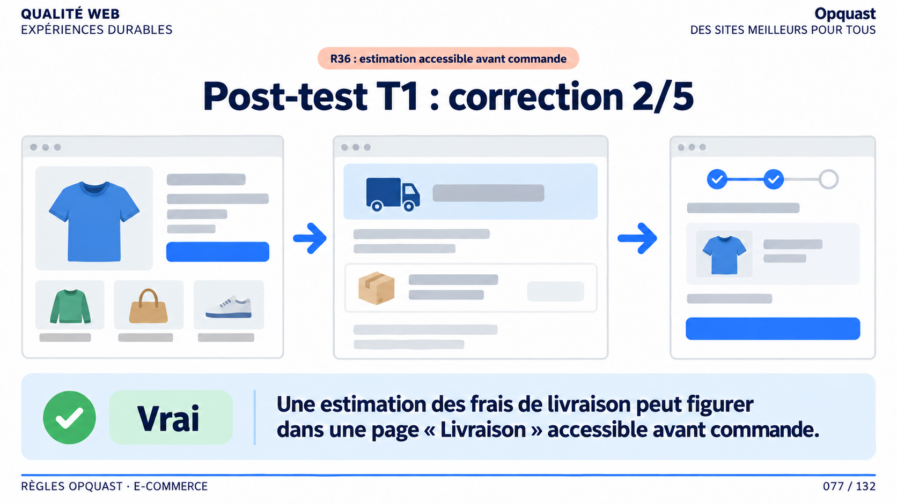
Trois écrans reliés montrent une fiche produit, une page d’information sur la livraison et un parcours de commande. Le bandeau inférieur reprend l’affirmation avec Vrai et une coche ; le repère R36 rappelle l’estimation accessible avant commande.
Textes affichés dans l’image
- QUALITÉ WEB
- EXPÉRIENCES DURABLES
- Opquast
- DES SITES MEILLEURS POUR TOUS
- Post-test T1 : correction 2/5
- Une estimation des frais de livraison peut figurer dans une page « Livraison » accessible avant commande.
- Vrai
- R36 : estimation accessible avant commande
- RÈGLES OPQUAST · E-COMMERCE
- 077 / 132
La réponse est vraie
- Le libellé de R36 situe les frais estimés avant la validation définitive de la commande.
- Sa solution admet aussi une page accessible avant commande qui indique un tarif ou une estimation pertinente.
Lire le libellé avec son contrôle
- L’information doit permettre de comprendre les frais de livraison applicables à l’achat.
- L’erreur serait d’exclure une page dédiée sans examiner son accessibilité dans le parcours et la pertinence de l’estimation.
Transition
- L’emplacement ne suffit pas : la nature du document compte également pour les traces de commande.
Slide 78 - Post-test T1 : correction 3/5
Deux écrans sont placés côte à côte : un message électronique sous R66 et un espace de factures sous R62. Le bandeau inférieur reprend l’affirmation initiale avec Faux et une croix.
Textes affichés dans l’image
- QUALITÉ WEB
- EXPÉRIENCES DURABLES
- Opquast
- DES SITES MEILLEURS POUR TOUS
- Post-test T1 : correction 3/5
- L'e-mail de confirmation de commande remplace nécessairement la mise à disposition des factures en ligne.
- Faux
- R66 : commande par e-mail
- R62 : factures en ligne
- RÈGLES OPQUAST · E-COMMERCE
- 078 / 132
La réponse est fausse
- R66 porte sur le mail contenant la référence de la transaction et les données de commande.
- R62 porte sur les factures émises également disponibles en ligne.
Deux preuves différentes
- Recevoir le mail de commande ne démontre pas que les factures peuvent être consultées et téléchargées en ligne.
- Le document, le support et le contrôle doivent être examinés séparément pour chaque exigence.
Transition
- Au-delà des traces, l’analyse du paiement doit isoler la décision de mémoriser une carte.
Slide 79 - Post-test T1 : correction 4/5
À gauche, un formulaire de paiement montre une carte et une case vide près d’une icône d’enregistrement. À droite, une grande carte verte affiche Vrai avec une coche. Le repère R59 précise l’accord explicite avant mémorisation.
Textes affichés dans l’image
- QUALITÉ WEB
- EXPÉRIENCES DURABLES
- Opquast
- DES SITES MEILLEURS POUR TOUS
- Post-test T1 : correction 4/5
- La mémorisation d'une carte bancaire nécessite un accord explicite.
- Vrai
- R59 : accord explicite avant mémorisation
- RÈGLES OPQUAST · E-COMMERCE
- 079 / 132
La réponse est vraie
- R59 exige le consentement explicite de l’utilisateur avant la mémorisation de ses données bancaires.
- Le paiement en cours ne constitue pas, à lui seul, un accord pour enregistrer le moyen de paiement.
Vérifier le choix
- Le contrôle observe l’absence d’enregistrement automatique et la validation explicite de la mémorisation éventuelle.
- La preuve porte sur le choix de conserver les données pour plus tard, distinct de leur usage pour payer cet achat.
Transition
- Un message de réception demande lui aussi de distinguer l’événement observé de la suite attendue.
Slide 80 - Post-test T1 : correction 5/5
Une enveloppe avec coche représente la réception, tandis qu’un dossier avec point d’interrogation laisse la résolution à vérifier. Au centre, l’affirmation initiale est marquée Faux. Le bandeau inférieur affiche Progression = T1 - T0.
Textes affichés dans l’image
- QUALITÉ WEB
- EXPÉRIENCES DURABLES
- Opquast
- DES SITES MEILLEURS POUR TOUS
- Post-test T1 : correction 5/5
- Recevoir un accusé de réception signifie que la réclamation a été résolue.
- Faux
- R67 : reçu, pas résolu
- Progression = T1 - T0
- RÈGLES OPQUAST · E-COMMERCE
- 080 / 132
La réponse est fausse
- L’accusé de réception exigé par R67 confirme la réception de la réclamation.
- Il ne prouve ni l’achèvement de son traitement ni la résolution du problème.
Une demande reçue
- Un acheteur peut disposer de ce message tout en attendant encore une réponse sur le fond.
- La trace reçue lève l’incertitude sur la réception, sans annoncer un résultat qui n’a pas été constaté.
Un résultat à établir séparément
- La résolution demanderait une autre observation : le problème signalé a-t-il effectivement trouvé une issue ?
- Informer, accuser réception et résoudre désignent trois étapes dont les preuves ne sont pas interchangeables.
Transition
- Cette distinction entre fait, exigence et preuve guide l’examen de situations plus détaillées.
Slide 81 - 25 QCM originaux : observer, choisir, justifier
Deux grilles de vingt-cinq points illustrent 25 QCM originaux et 5 séries de 5 questions. Au centre, une maquette de questionnaire accompagne la consigne d’une réponse correcte. En bas, une personne, une prise de notes et un écran vérifié illustrent Choisir, justifier, vérifier.
Textes affichés dans l’image
- QUALITÉ WEB
- EXPÉRIENCES DURABLES
- Opquast
- DES SITES MEILLEURS POUR TOUS
- 25 QCM originaux : observer, choisir, justifier
- 25 QCM originaux
- 5 séries de 5 questions
- 1 réponse correcte par question
- Choisir → justifier → vérifier
- RÈGLES OPQUAST · E-COMMERCE
- 081 / 132
Une situation délimitée
- Une analyse part de ce qui est effectivement décrit : une information, une action possible ou un résultat observé.
- Elle distingue ce qui manque des éléments sur lesquels aucune preuve n’est fournie.
Une exigence précise
- Deux règles voisines peuvent protéger des besoins différents, même lorsqu’elles concernent la même page.
- Le rapprochement repose sur le contenu attendu, le support et le moment du parcours.
Une conclusion proportionnée
- Un bouton présent ne prouve pas que son action aboutit, comme un message annoncé ne prouve pas sa réception.
- La conclusion reste limitée au périmètre effectivement vérifié, sans étendre un constat à toute la qualité du service.
Transition
- Une fiche de chaussures qualifiées de « très légères » offre un premier cas de description à examiner.
Slide 82 - Question 1 / 25
L’énoncé sur les chaussures décrites comme très légères occupe une carte bleue supérieure. Trois cartes bleues identiques présentent A, B et C sans sélection. Un bandeau rappelle le caractère original non officiel et la présence d’une seule bonne réponse.
Textes affichés dans l’image
- QUALITÉ WEB
- EXPÉRIENCES DURABLES
- Opquast
- DES SITES MEILLEURS POUR TOUS
- Question 1 / 25
- Une fiche de chaussures affiche le prix et la provenance, ainsi que trois photos. Elle se contente de dire « très légères » sans poids ni autre mesure pertinente. Quelle analyse de R39 est la plus solide ?
- A. R39 peut être satisfaite : l'adjectif et les photos rendent le produit suffisamment descriptif.
- B. R39 reste à satisfaire : les caractéristiques quantifiables pertinentes manquent.
- C. R39 est satisfaite par le prix et la provenance, même si le poids et les dimensions ne sont pas précisés.
- Exercice original non officiel · Une seule bonne réponse
- RÈGLES OPQUAST · E-COMMERCE
- 082 / 132
Une chaussure décrite
- La fiche combine photos, prix, provenance et l’expression « très légères ».
- Léa cherche un produit adapté à sa randonnée.
La portée de la description
- Les trois propositions attribuent une valeur différente aux informations présentes.
- La question porte sur ce que cette fiche permet d’établir au sujet des caractéristiques du produit.
Transition
- La valeur de chaque information doit être appréciée au regard des caractéristiques attendues.
Slide 83 - Question 1 / 25 : correction
Une grande carte verte affiche Bonne réponse : B, la proposition complète et la raison sur les caractéristiques mesurables. Deux cartes pêche expliquent pourquoi A et C sont écartées, avec des croix. La mention non officielle figure en bas.
Textes affichés dans l’image
- QUALITÉ WEB
- EXPÉRIENCES DURABLES
- Opquast
- DES SITES MEILLEURS POUR TOUS
- Question 1 / 25 : correction
- Bonne réponse : B
- B. R39 reste à satisfaire : les caractéristiques quantifiables pertinentes manquent.
- Les caractéristiques mesurables pertinentes manquent.
- A écartée : une appréciation ne mesure pas.
- C écartée : le prix et la provenance ne suffisent pas.
- Exercice original non officiel
- B
- RÈGLES OPQUAST · E-COMMERCE
- 083 / 132
Mesurer les caractéristiques utiles
- La réponse B est retenue : R39 demande la nature et les caractéristiques quantifiables du produit ; une appréciation subjective ne les remplace pas.
- Le poids ou les dimensions pertinents permettent une comparaison que le seul adjectif « légères » ne rend pas possible.
A : une appréciation ne mesure pas
- La proposition A ne convient pas : « Très légères » n'est pas une caractéristique quantifiable ; les images ne fournissent pas les mesures absentes.
C : le prix et la provenance ne suffisent pas
- La proposition C ne convient pas : le prix et la provenance répondent à d'autres besoins d'information et ne remplacent pas les caractéristiques mesurables utiles.
Transition
- Une mention de qualité cliquable soulève maintenant la question de sa source.
Slide 84 - Question 2 / 25
L’énoncé sur un badge Qualité vérifiée qui renvoie à une répétition de l’affirmation précède trois cartes bleues A, B et C. Aucune option n’est sélectionnée ; la mention non officielle est conservée.
Textes affichés dans l’image
- QUALITÉ WEB
- EXPÉRIENCES DURABLES
- Opquast
- DES SITES MEILLEURS POUR TOUS
- Question 2 / 25
- Un badge « Qualité vérifiée » est cliquable, mais le lien mène à une page du vendeur qui répète la même affirmation sans identifier sa source. Que faut-il vérifier ?
- A. Le lien suffit : R64 exige seulement un élément cliquable.
- B. Il faut contrôler la durée de validité du badge au titre de R40.
- C. R64 demande un lien vers la source de la mention, pas sa simple répétition.
- Exercice original non officiel · Une seule bonne réponse
- RÈGLES OPQUAST · E-COMMERCE
- 084 / 132
Une mention de qualité
- Le badge est cliquable et conduit à une page du vendeur.
- Cette page reprend la même affirmation sans identifier sa source.
Le parcours du lien
- Le cas porte sur la destination atteinte, au-delà du geste de cliquer.
- Il faut apprécier ce que ce chemin permet réellement de vérifier sur la mention affichée.
Transition
- La conclusion dépend de ce que la page atteinte permet de vérifier.
Slide 85 - Question 2 / 25 : correction
Une carte verte affiche la réponse C sur le lien vers la source de la mention. Deux cartes pêche écartent A, car un lien peut mener ailleurs, et B, car une promotion n’est pas un label. Chaque verdict possède son libellé et son symbole.
Textes affichés dans l’image
- QUALITÉ WEB
- EXPÉRIENCES DURABLES
- Opquast
- DES SITES MEILLEURS POUR TOUS
- Question 2 / 25 : correction
- Bonne réponse : C
- C. R64 demande un lien vers la source de la mention, pas sa simple répétition.
- Un lien doit mener à la source de la mention.
- A écartée : un lien peut mener ailleurs.
- B écartée : une promotion n’est pas un label.
- Exercice original non officiel
- RÈGLES OPQUAST · E-COMMERCE
- 085 / 132
Remonter à la source de la mention
- La réponse C est retenue : R64 concerne les mentions de label, de récompense ou d'appartenance professionnelle accompagnées d'un lien vers leur source.
- Le contrôle de R64 demande de vérifier la destination de chaque lien associé à une mention concernée.
A : un lien peut mener ailleurs
- La proposition A ne convient pas : la présence technique d'un lien ne prouve pas qu'il mène à la source de la distinction.
B : une promotion n’est pas un label
- La proposition B ne convient pas : R40 concerne les offres spéciales et promotions, pas la preuve d'un label.
Transition
- Le cas suivant porte sur la représentation de l’indisponibilité d’un produit.
Slide 86 - Question 3 / 25
Une question sur un pictogramme Indisponible muni d’une alternative textuelle est suivie de trois propositions bleues de même style. Aucun choix n’est signalé comme correct.
Textes affichés dans l’image
- QUALITÉ WEB
- EXPÉRIENCES DURABLES
- Opquast
- DES SITES MEILLEURS POUR TOUS
- Question 3 / 25
- Un produit épuisé est marqué par un pictogramme dont l'alternative textuelle dit « Indisponible », sans cette phrase affichée à l'écran. Selon le contrôle de R65 :
- A. L'indication graphique avec une alternative textuelle appropriée est admise.
- B. La règle est nécessairement non respectée faute de phrase visible.
- C. Cela suffit aussi à prouver que R34 est respectée au récapitulatif.
- Exercice original non officiel · Une seule bonne réponse
- RÈGLES OPQUAST · E-COMMERCE
- 086 / 132
Un état de stock signalé
- Le produit épuisé est représenté par un pictogramme.
- Son alternative textuelle indique « Indisponible », sans phrase visible identique.
La forme de l’information
- Le scénario distingue ce qui est affiché et ce qui est porté par l’alternative.
- Les propositions donnent des lectures différentes de cette association et de sa portée sur le parcours.
Transition
- Le contrôle permet de préciser la portée de cette représentation du stock.
Slide 87 - Question 3 / 25 : correction
Une carte verte donne A et explique l’admission d’un graphisme avec alternative appropriée. Deux cartes pêche écartent B et C : la phrase visible n’est pas l’unique possibilité et le récapitulatif reste à contrôler. La mention non officielle est placée sous le titre.
Textes affichés dans l’image
- QUALITÉ WEB
- EXPÉRIENCES DURABLES
- Opquast
- DES SITES MEILLEURS POUR TOUS
- Question 3 / 25 : correction
- Bonne réponse : A
- A. L'indication graphique avec une alternative textuelle appropriée est admise.
- Le contrôle admet un graphisme avec une alternative appropriée.
- B écartée : la phrase visible n’est pas l’unique possibilité.
- C écartée : le récapitulatif reste à contrôler.
- Exercice original non officiel
- RÈGLES OPQUAST · E-COMMERCE
- 087 / 132
Lire le contrôle de la différenciation
- La réponse A est retenue : le moyen de contrôle de R65 admet une mention textuelle ou une indication graphique avec une alternative textuelle appropriée.
- Pour vérifier la différenciation, comparez le produit épuisé aux produits disponibles et contrôlez que l’alternative du pictogramme donne bien son état.
B : la phrase visible n’est pas l’unique possibilité
- La proposition B ne convient pas : le contrôle décrit explicitement une voie par indication graphique avec alternative.
C : le récapitulatif reste à contrôler
- La proposition C ne convient pas : R34 traite du moment de l'information de disponibilité dans le parcours et au récapitulatif ; elle ne peut être déduite de cette seule fiche.
Transition
- Une promotion permet ensuite de distinguer plusieurs informations sur une même offre.
Slide 88 - Question 4 / 25
L’énoncé décrit une réduction avec date de fin mais sans conditions. Trois cartes bleues présentent A, B et C sans hiérarchie de réponse. La mention non officielle reste visible.
Textes affichés dans l’image
- QUALITÉ WEB
- EXPÉRIENCES DURABLES
- Opquast
- DES SITES MEILLEURS POUR TOUS
- Question 4 / 25
- Une réduction de 20 % affiche une date de fin, mais aucune condition sur les produits concernés ou l'éligibilité. Que conclure ?
- A. R40 est satisfaite, car la date de fin suffit.
- B. R40 reste à satisfaire : période et conditions sont deux informations nécessaires.
- C. R41 remplace R40 si le montant final est détaillé au panier.
- Exercice original non officiel · Une seule bonne réponse
- RÈGLES OPQUAST · E-COMMERCE
- 088 / 132
Une offre à durée limitée
- La réduction annoncée est de 20 % et une date de fin est donnée.
- Le cas ne précise aucune condition sur les produits concernés ou sur l’éligibilité.
La portée de l’offre
- Léa cherche à comprendre si elle peut bénéficier de cette réduction pour son achat.
- Les trois propositions mettent en relation la date, les conditions et le détail du panier.
Transition
- La lecture de l’exigence permet de départager les rôles attribués à la date et aux conditions.
Slide 89 - Question 4 / 25 : correction
La carte verte donne B et rappelle que la date ne renseigne pas les conditions de la promotion. Deux cartes pêche écartent A et C avec leurs raisons. La mention non officielle apparaît dans un bandeau bleu.
Textes affichés dans l’image
- QUALITÉ WEB
- EXPÉRIENCES DURABLES
- Opquast
- DES SITES MEILLEURS POUR TOUS
- Question 4 / 25 : correction
- Bonne réponse : B
- B. R40 reste à satisfaire : période et conditions sont deux informations nécessaires.
- La date ne renseigne pas les conditions de la promotion.
- A écartée : une date ne décrit pas les conditions.
- C écartée : le sous-total a une autre fonction.
- Exercice original non officiel
- RÈGLES OPQUAST · E-COMMERCE
- 089 / 132
Connaître la période et les conditions
- La réponse B est retenue : R40 exige la période ET les conditions de validité des promotions.
- Le contrôle de R40 recherche ces informations dans les pages produits, l’aide ou les conditions générales, sans imposer un emplacement unique.
A : une date ne décrit pas les conditions
- La proposition A ne convient pas : la date ne renseigne pas à elle seule les conditions de l'offre.
C : le sous-total a une autre fonction
- La proposition C ne convient pas : R41 traite du sous-total de commande, sans se substituer aux conditions promotionnelles.
Transition
- La provenance du produit pose une autre question sur ce que les mentions permettent de déduire.
Slide 90 - Question 5 / 25
L’énoncé sur une marque française et un vendeur situé à Lyon précède trois propositions de même style bleu sur la provenance du produit. Aucun verdict n’est affiché.
Textes affichés dans l’image
- QUALITÉ WEB
- EXPÉRIENCES DURABLES
- Opquast
- DES SITES MEILLEURS POUR TOUS
- Question 5 / 25
- La fiche indique « Marque française, vendeur basé à Lyon », mais ne donne aucune information sur la provenance des chaussures. Quelle conclusion est justifiée ?
- A. R68 est satisfaite, car le pays du vendeur est connu.
- B. R47 est nécessairement non respectée, car Lyon n'est pas une zone de livraison.
- C. R68 manque : la localisation du vendeur n'indique pas nécessairement la provenance du produit.
- Exercice original non officiel · Une seule bonne réponse
- RÈGLES OPQUAST · E-COMMERCE
- 090 / 132
Une marque et un vendeur
- La fiche mentionne une marque française et un vendeur basé à Lyon.
- Aucune autre information de provenance n’est fournie pour les chaussures.
Les lieux évoqués
- Les propositions rapprochent le vendeur, le produit et les territoires desservis.
- Le raisonnement doit conserver l’objet exact auquel chaque lieu se rapporte.
Transition
- La conclusion doit rester attachée au lieu dont on cherche à connaître la provenance.
Slide 91 - Question 5 / 25 : correction
La carte verte donne C : la localisation du vendeur ne suffit pas à établir la provenance. Les deux cartes pêche distinguent l’origine du vendeur de celle du produit et rappellent que la zone desservie reste inconnue.
Textes affichés dans l’image
- QUALITÉ WEB
- EXPÉRIENCES DURABLES
- Opquast
- DES SITES MEILLEURS POUR TOUS
- Question 5 / 25 : correction
- Bonne réponse : C
- C. R68 manque : la localisation du vendeur n'indique pas nécessairement la provenance du produit.
- Le lieu du vendeur ne prouve pas la provenance.
- A écartée : le vendeur et le produit ont des origines distinctes.
- B écartée : la zone desservie reste inconnue.
- Exercice original non officiel
- RÈGLES OPQUAST · E-COMMERCE
- 091 / 132
Identifier la provenance du produit
- La réponse C est retenue : R68 porte sur la provenance des produits, qui ne se déduit pas automatiquement du siège ou de la marque du vendeur.
- Le contrôle de R68 recherche la provenance ou, à défaut d’une provenance unique, les informations sur l’assemblage, la fabrication et l’expédition.
A : le vendeur et le produit ont des origines distinctes
- La proposition A ne convient pas : le lieu du vendeur et la provenance de l'article sont deux informations différentes.
B : la zone desservie reste inconnue
- La proposition B ne convient pas : R47 porte sur la zone desservie ; l'énoncé ne fournit pas assez d'éléments pour conclure à son sujet.
Transition
- Le choix d’une pointure donne un cas où le moment de l’information devient central.
Slide 92 - Question 6 / 25
La question porte sur une disponibilité indiquée trop tard pour une pointure choisie. Les trois propositions A, B et C sont présentées en cartes bleues uniformes, sans sélection.
Textes affichés dans l’image
- QUALITÉ WEB
- EXPÉRIENCES DURABLES
- Opquast
- DES SITES MEILLEURS POUR TOUS
- Question 6 / 25
- Pour une pointure choisie, la disponibilité n'apparaît qu'après la validation définitive. D'autres produits sont pourtant signalés « épuisés » dès la liste. Quelle règle manque pour la pointure commandée ?
- A. R65 seulement, car l'information existe dans une liste de produits.
- B. R34, car la disponibilité de l'article choisi arrive trop tard.
- C. R35, car une disponibilité est un délai estimé.
- Exercice original non officiel · Une seule bonne réponse
- RÈGLES OPQUAST · E-COMMERCE
- 092 / 132
Une pointure commandée
- La disponibilité de la pointure choisie n’apparaît qu’après validation.
- Des produits différents portent déjà une mention d’épuisement dans la liste.
Le périmètre du constat
- Le cas décrit plusieurs articles et plusieurs moments du parcours.
- La question vise précisément la pointure retenue pour cette commande.
Transition
- Le contrôle permet de situer l’information attendue pour l’article retenu.
Slide 93 - Question 6 / 25 : correction
La carte verte donne B et précise que la disponibilité arrive après validation définitive. Les cartes pêche écartent A, car un autre produit ne constitue pas une preuve, et C, car délai et disponibilité diffèrent.
Textes affichés dans l’image
- QUALITÉ WEB
- EXPÉRIENCES DURABLES
- Opquast
- DES SITES MEILLEURS POUR TOUS
- Question 6 / 25 : correction
- Bonne réponse : B
- B. R34, car la disponibilité de l'article choisi arrive trop tard.
- La disponibilité arrive après la validation définitive.
- A écartée : un autre produit ne prouve rien pour celui-ci.
- C écartée : le délai et la disponibilité diffèrent.
- Exercice original non officiel
- RÈGLES OPQUAST · E-COMMERCE
- 093 / 132
Informer avant l’engagement définitif
- La réponse B est retenue : R34 demande la disponibilité avant validation définitive ; la solution précise les pages produits et le récapitulatif.
- La solution de R34 situe l’information avant la commande et sur le récapitulatif pour les produits sélectionnés.
A : un autre produit ne prouve rien pour celui-ci
- La proposition A ne convient pas : un signalement dans une autre liste ne prouve pas l'information au bon moment pour l'article commandé.
C : le délai et la disponibilité diffèrent
- La proposition C ne convient pas : R35 concerne le délai de livraison estimé, non la disponibilité de l'article.
Transition
- Le délai et les frais de livraison demandent à leur tour une lecture distincte.
Slide 94 - Question 7 / 25
L’énoncé compare les frais de livraison indiqués sur la fiche à un délai communiqué seulement après commande. Trois cartes bleues A, B et C offrent les analyses possibles sans sélection.
Textes affichés dans l’image
- QUALITÉ WEB
- EXPÉRIENCES DURABLES
- Opquast
- DES SITES MEILLEURS POUR TOUS
- Question 7 / 25
- La boutique indique des frais de livraison de 5,90 € sur la fiche produit, mais le délai estimé n'apparaît que dans l'e-mail postérieur à la commande. Quelle affirmation est correcte ?
- A. R35 est manquante ; le montant des frais ne remplace pas le délai sur le récapitulatif.
- B. R35 est satisfaite, car l'e-mail garde une trace du délai.
- C. R36 est manquante, car le délai estimé n'est pas dans la fiche.
- Exercice original non officiel · Une seule bonne réponse
- RÈGLES OPQUAST · E-COMMERCE
- 094 / 132
Le prix d’une livraison
- La fiche annonce des frais de 5,90 euros.
- Le délai estimé apparaît dans un e-mail postérieur à la commande.
Deux informations dans le parcours
- Le cas précise à la fois la nature de chaque information et le moment où elle arrive.
- L’analyse porte sur la relation entre ces faits et l’exigence invoquée dans chaque proposition.
Transition
- Le contenu et le moment de chaque information permettent de préciser le constat.
Slide 95 - Question 7 / 25 : correction
Une carte verte donne A : le délai doit figurer au récapitulatif avant validation. Les cartes pêche écartent une trace tardive et la confusion entre tarif et délai.
Textes affichés dans l’image
- QUALITÉ WEB
- EXPÉRIENCES DURABLES
- Opquast
- DES SITES MEILLEURS POUR TOUS
- Question 7 / 25 : correction
- Bonne réponse : A
- A. R35 est manquante ; le montant des frais ne remplace pas le délai sur le récapitulatif.
- Le délai doit figurer au récapitulatif avant validation.
- B écartée : une trace tardive ne suffit pas.
- C écartée : un tarif n’est pas un délai.
- Exercice original non officiel
- RÈGLES OPQUAST · E-COMMERCE
- 095 / 132
Connaître le délai avant de valider
- La réponse A est retenue : R35 demande le délai estimé avant validation définitive, sur le récapitulatif dans sa solution et son contrôle.
- Une capture du récapitulatif avant validation peut attester la présence du délai à ce moment, tandis que le mail reçu ensuite ne prouve pas cet affichage.
B : une trace tardive ne suffit pas
- La proposition B ne convient pas : l'information communiquée après validation arrive trop tard pour cette exigence.
C : un tarif n’est pas un délai
- La proposition C ne convient pas : R36 porte sur le tarif ou l'estimation des frais, qui est renseigné dans ce scénario.
Transition
- Un barème disponible avant commande permet de préciser le cas des frais de livraison.
Slide 96 - Question 8 / 25
L’énoncé décrit un barème de livraison accessible avant commande. Les trois propositions A, B et C sont placées dans des cartes bleues uniformes, sans sélection.
Textes affichés dans l’image
- QUALITÉ WEB
- EXPÉRIENCES DURABLES
- Opquast
- DES SITES MEILLEURS POUR TOUS
- Question 8 / 25
- Un barème de frais de livraison selon la zone et le poids est accessible depuis la fiche produit, avant le début de commande. Quelle lecture de R36 est fidèle au contrôle ?
- A. Non respectée : les frais doivent être affichés exclusivement dans le panier.
- B. Respectée automatiquement, même si le barème ne concerne pas l'article choisi.
- C. Cette mise en œuvre est admise si le tarif ou l'estimation est pertinent pour le produit et la zone.
- Exercice original non officiel · Une seule bonne réponse
- RÈGLES OPQUAST · E-COMMERCE
- 096 / 132
Un barème accessible
- La fiche donne accès à un tarif variant selon la zone et le poids.
- Ce barème est consultable avant le début de la commande.
Le contexte de l’estimation
- Léa commande un produit à livrer à une adresse donnée.
- Les propositions discutent l’emplacement et la portée du barème pour cet achat.
Transition
- La lecture des modalités permet d’apprécier le barème dans ce parcours.
Slide 97 - Question 8 / 25 : correction
Une carte verte donne C et admet une page liée avant commande sous condition de pertinence du tarif. Deux cartes pêche rappellent que le panier n’est pas l’unique emplacement et que le barème doit concerner l’achat.
Textes affichés dans l’image
- QUALITÉ WEB
- EXPÉRIENCES DURABLES
- Opquast
- DES SITES MEILLEURS POUR TOUS
- Question 8 / 25 : correction
- Bonne réponse : C
- C. Cette mise en œuvre est admise si le tarif ou l'estimation est pertinent pour le produit et la zone.
- Une page liée avant commande est admise par le contrôle.
- A écartée : le panier n’est pas l’unique emplacement.
- B écartée : le barème doit concerner l’achat.
- Exercice original non officiel
- RÈGLES OPQUAST · E-COMMERCE
- 097 / 132
Consulter une estimation pertinente
- La réponse C est retenue : R36 admet une information sur la page produit ou dans une page disponible avant la commande, avec une estimation pertinente.
- Le contrôle de R36 accepte la page produit ou une page disponible avant commande si le tarif tient compte du produit et du lieu de livraison.
- Une information disponible peut être accessible par un lien, mais c’est le contrôle spécifique qui fixe ici les emplacements admis.
A : le panier n’est pas l’unique emplacement
- La proposition A ne convient pas : l'accès à une page liée est prévu explicitement dans la solution et le contrôle.
B : le barème doit concerner l’achat
- La proposition B ne convient pas : un barème hors sujet ne satisfait pas la nécessité d'informer sur le coût estimé applicable.
Transition
- Pour un guide numérique, l’information à examiner concerne les modalités de récupération.
Slide 98 - Question 9 / 25
L’énoncé décrit un guide numérique dont les modalités d’accès sont annoncées après paiement. Trois cartes bleues A, B et C proposent des règles sans indiquer la bonne réponse.
Textes affichés dans l’image
- QUALITÉ WEB
- EXPÉRIENCES DURABLES
- Opquast
- DES SITES MEILLEURS POUR TOUS
- Question 9 / 25
- La fiche d'un guide numérique indique les logiciels permettant de l'ouvrir, mais le mode de récupération et la durée d'accès ne sont annoncés qu'après paiement. Quelle règle est directement concernée ?
- A. R55, car les logiciels sont indiqués.
- B. R37, car les modalités de récupération doivent être connues avant la commande.
- C. R62, car l'accès au guide est une facture en ligne.
- Exercice original non officiel · Une seule bonne réponse
- RÈGLES OPQUAST · E-COMMERCE
- 098 / 132
L’achat d’un guide numérique
- La fiche indique les logiciels permettant d’ouvrir le guide.
- Le mode de récupération et la durée d’accès ne sont annoncés qu’après paiement.
Le parcours du fichier
- Le cas décrit des informations techniques à des moments différents de l’achat.
- La question demande de qualifier le défaut précis constaté, sans supposer d’autre contenu sur le site.
Transition
- Le besoin de récupération doit être rapproché de l’information effectivement donnée.
Slide 99 - Question 9 / 25 : correction
La carte verte donne B et rappelle que les modalités de récupération précèdent la commande. Les cartes pêche écartent A en distinguant ouverture et récupération du fichier, et C en distinguant guide et facture.
Textes affichés dans l’image
- QUALITÉ WEB
- EXPÉRIENCES DURABLES
- Opquast
- DES SITES MEILLEURS POUR TOUS
- Question 9 / 25 : correction
- Bonne réponse : B
- B. R37, car les modalités de récupération doivent être connues avant la commande.
- Les modalités de récupération doivent précéder la commande.
- A écartée : ouvrir le fichier n’est pas le récupérer.
- C écartée : le guide n’est pas une facture.
- Exercice original non officiel
- RÈGLES OPQUAST · E-COMMERCE
- 099 / 132
Savoir comment récupérer le bien
- La réponse B est retenue : R37 porte sur les modalités de récupération d'un bien dématérialisé avant commande.
- Le contrôle porte sur le canal, le délai, le format et la durée de disponibilité, accessibles avant le début de la commande.
A : ouvrir le fichier n’est pas le récupérer
- La proposition A ne convient pas : R55 porte sur les prérequis matériels et logiciels déjà indiqués ici.
C : le guide n’est pas une facture
- La proposition C ne convient pas : R62 porte sur la disponibilité des factures, pas sur la livraison d'un bien numérique.
Transition
- Un jeu téléchargeable ajoute une question sur les prérequis de son utilisation.
Slide 100 - Question 10 / 25
Une grande carte bleue présente le cas du jeu numérique. Trois cartes bleues identiques portent les propositions A, B et C, sans réponse mise en évidence.
Textes affichés dans l’image
- QUALITÉ WEB
- EXPÉRIENCES DURABLES
- Opquast
- DES SITES MEILLEURS POUR TOUS
- Question 10 / 25
- La fiche d'un jeu numérique précise avant commande le format du fichier, le canal de téléchargement, le délai et la durée de disponibilité. La version minimale du système nécessaire n'est communiquée qu'après paiement. Quelle règle vise spécifiquement ce défaut ?
- A. R55 : les prérequis matériels et logiciels doivent être indiqués avant validation.
- B. R37 : les prérequis logiciels relèvent uniquement des modalités de récupération.
- C. R39 : la version du système d'exploitation relève uniquement des caractéristiques quantifiables du produit.
- Exercice original non officiel · Une seule bonne réponse
- RÈGLES OPQUAST · E-COMMERCE
- 100 / 132
Un jeu à télécharger
- Le format, le canal, le délai et la durée de téléchargement sont précisés avant commande.
- La version minimale du système n’est communiquée qu’après paiement.
Le besoin technique décrit
- Le scénario délimite les informations disponibles à chaque étape.
- Chaque proposition rattache l’information manquante à une exigence qu’il faut examiner dans son périmètre.
Transition
- La nature de la donnée technique permet de qualifier précisément son absence.
Slide 101 - Question 10 / 25 : correction
Sous la mention d’exercice non officiel, une grande carte verte confirme A et explique les prérequis techniques. Deux cartes pêche dessous écartent B et C, avec une croix.
Textes affichés dans l’image
- QUALITÉ WEB
- EXPÉRIENCES DURABLES
- Opquast
- DES SITES MEILLEURS POUR TOUS
- Question 10 / 25 : correction
- Bonne réponse : A
- A. R55 : les prérequis matériels et logiciels doivent être indiqués avant validation.
- Les prérequis techniques doivent être connus avant validation.
- B écartée : récupérer et faire fonctionner diffèrent.
- C écartée : l’exigence technique est spécifique.
- Exercice original non officiel
- RÈGLES OPQUAST · E-COMMERCE
- 101 / 132
Vérifier les prérequis de fonctionnement
- La réponse A est retenue : R55 cible expressément les matériels et logiciels nécessaires au fonctionnement du service avant validation.
- Le contrôle de R55 accepte la page produit, un lien depuis celle-ci ou une page de support disponible avant la finalisation.
B : récupérer et faire fonctionner diffèrent
- La proposition B ne convient pas : R37 concerne les modalités de récupération du bien dématérialisé, déjà renseignées dans le scénario ; le fonctionnement relève spécifiquement de R55.
C : l’exigence technique est spécifique
- La proposition C ne convient pas : R39 est une exigence générale de description des produits ; R55 vise précisément les prérequis techniques en cause.
Transition
- Le parcours documentaire présente une autre distinction entre accès et contenu.
Slide 102 - Question 11 / 25
Une carte bleue pose le cas des CGV sans voie de recours. Les trois propositions sont affichées dans des cartes bleues de même présentation, sans indice de réponse.
Textes affichés dans l’image
- QUALITÉ WEB
- EXPÉRIENCES DURABLES
- Opquast
- DES SITES MEILLEURS POUR TOUS
- Question 11 / 25
- Les CGV sont accessibles depuis chaque page, mais aucune voie de recours en cas de litige n'y est décrite. Quelle analyse sépare correctement les deux exigences ?
- A. R46 manque, puisqu'il faudrait recopier les CGV sur toutes les pages.
- B. R46 et R50 sont satisfaites puisque le document existe.
- C. R46 peut être satisfaite, tandis que R50 manque.
- Exercice original non officiel · Une seule bonne réponse
- RÈGLES OPQUAST · E-COMMERCE
- 102 / 132
Des conditions accessibles
- Les conditions générales de vente sont accessibles depuis chaque page.
- Leur contenu ne décrit aucune voie de recours en cas de litige.
L’examen du document
- Le cas fournit un fait sur l’accès au document et un autre sur son contenu.
- Les conclusions proposées doivent être appréciées à partir de ces deux observations.
Transition
- La conclusion doit tenir compte des deux observations portant sur le document.
Slide 103 - Question 11 / 25 : correction
La carte verte confirme C : des CGV accessibles peuvent omettre les recours. Deux cartes pêche écartent A et B avec leurs explications.
Textes affichés dans l’image
- QUALITÉ WEB
- EXPÉRIENCES DURABLES
- Opquast
- DES SITES MEILLEURS POUR TOUS
- Question 11 / 25 : correction
- Bonne réponse : C
- C. R46 peut être satisfaite, tandis que R50 manque.
- Un document accessible peut omettre les recours.
- A écartée : un lien depuis chaque page peut convenir.
- B écartée : l’existence ne prouve pas le contenu.
- Exercice original non officiel
- RÈGLES OPQUAST · E-COMMERCE
- 103 / 132
Séparer l’accès et le contenu des conditions
- La réponse C est retenue : R46 concerne l'accès aux conditions ; R50 demande les recours indiqués dans ces conditions.
- Pour R50, ouvrez les conditions générales et recherchez les recours, au-delà de la présence du lien vérifiée par R46.
A : un lien depuis chaque page peut convenir
- La proposition A ne convient pas : une disponibilité par lien peut convenir pour R46.
B : l’existence ne prouve pas le contenu
- La proposition B ne convient pas : l'existence d'un document n'établit pas qu'il contient les recours.
Transition
- Le service après-vente et la garantie donnent deux autres besoins à distinguer.
Slide 104 - Question 12 / 25
Le cas d’une boutique qui décrit son SAV mais pas les garanties figure dans une carte bleue. Trois cartes bleues identiques présentent les analyses A, B et C.
Textes affichés dans l’image
- QUALITÉ WEB
- EXPÉRIENCES DURABLES
- Opquast
- DES SITES MEILLEURS POUR TOUS
- Question 12 / 25
- La boutique explique comment joindre le SAV, à quels horaires et par quel canal, mais ne renseigne pas les conditions de garantie. Quelle analyse ?
- A. R43 peut être satisfaite ; R45 manque.
- B. R45 est satisfaite, car un SAV joignable constitue une garantie.
- C. R43 manque : elle exige que le problème soit résolu, pas que le SAV soit décrit.
- Exercice original non officiel · Une seule bonne réponse
- RÈGLES OPQUAST · E-COMMERCE
- 104 / 132
Un service après-vente décrit
- La boutique précise le canal et les horaires pour joindre son SAV.
- Les conditions de garantie ne sont pas renseignées.
L’aide proposée
- Le scénario décrit des informations disponibles, sans raconter le traitement d’une panne.
- L’analyse doit rester attachée à ce périmètre et aux besoins que ces informations couvrent.
Transition
- Le sens de chaque exigence permet de qualifier les informations présentes et absentes.
Slide 105 - Question 12 / 25 : correction
Une carte verte confirme A et distingue le SAV décrit des garanties. Deux cartes pêche expliquent pourquoi B et C sont écartées, avec des croix.
Textes affichés dans l’image
- QUALITÉ WEB
- EXPÉRIENCES DURABLES
- Opquast
- DES SITES MEILLEURS POUR TOUS
- Question 12 / 25 : correction
- Bonne réponse : A
- A. R43 peut être satisfaite ; R45 manque.
- Un SAV décrit ne renseigne pas les garanties.
- B écartée : joindre le service ne définit pas la garantie.
- C écartée : informer n’est pas garantir la résolution.
- Exercice original non officiel
- RÈGLES OPQUAST · E-COMMERCE
- 105 / 132
Distinguer service après-vente et garantie
- La réponse A est retenue : R43 demande les conditions du SAV et R45 les conditions de garantie, qui sont distinctes.
- Les horaires et le canal renseignent l’accès à l’assistance, mais ne démontrent pas à eux seuls toutes les conditions de fonctionnement du SAV, que ce scénario ne détaille pas.
- « Peut être satisfaite » reste donc une conclusion conditionnelle pour R43 ; la seule joignabilité du service ne suffit pas à la valider.
B : joindre le service ne définit pas la garantie
- La proposition B ne convient pas : la capacité à joindre un service n'informe pas sur les garanties applicables.
C : informer n’est pas garantir la résolution
- La proposition C ne convient pas : R43 est une exigence d'information, pas une garantie de résolution.
Transition
- Un retour de produit appelle également plusieurs informations complémentaires.
Slide 106 - Question 13 / 25
Le cas des frais de retour est présenté dans une carte bleue, suivi de trois propositions A, B et C dans des cartes identiques. Aucune solution n’est indiquée.
Textes affichés dans l’image
- QUALITÉ WEB
- EXPÉRIENCES DURABLES
- Opquast
- DES SITES MEILLEURS POUR TOUS
- Question 13 / 25
- L'adresse et les modalités de retour sont précisées avant validation, mais aucune information sur la charge des frais de retour n'est accessible avant la validation définitive. Que peut-on conclure ?
- A. R51 et R52 sont nécessairement toutes deux satisfaites.
- B. L'information demandée par R52 manque ; l'adresse et les modalités seules ne suffisent pas à valider R51.
- C. R52 est satisfaite, car la présence d'une adresse indique qui paie.
- Exercice original non officiel · Une seule bonne réponse
- RÈGLES OPQUAST · E-COMMERCE
- 106 / 132
Un retour à préparer
- L’adresse et les modalités de retour sont précisées avant validation.
- La charge des frais ne l’est pas dans les informations accessibles à ce moment.
Ce que le retour implique
- Léa doit pouvoir comprendre les conditions dans lesquelles elle renverrait son achat.
- Les propositions discutent ce que les informations présentes permettent de conclure, chacune dans son périmètre.
Transition
- La lecture des conditions de retour permet de préciser la portée des faits décrits.
Slide 107 - Question 13 / 25 : correction
Une carte verte confirme B et précise l’absence d’information sur les frais de retour. Deux cartes pêche expliquent pourquoi une validation globale et la déduction du payeur à partir d’une adresse sont écartées.
Textes affichés dans l’image
- QUALITÉ WEB
- EXPÉRIENCES DURABLES
- Opquast
- DES SITES MEILLEURS POUR TOUS
- Question 13 / 25 : correction
- Bonne réponse : B
- B. L'information demandée par R52 manque ; l'adresse et les modalités seules ne suffisent pas à valider R51.
- La charge des frais doit être connue avant validation.
- A écartée : aucune validation globale n’est acquise.
- C écartée : une adresse ne désigne pas le payeur.
- Exercice original non officiel
- RÈGLES OPQUAST · E-COMMERCE
- 107 / 132
Identifier le défaut certain sur les frais
- La réponse B est retenue : R52 demande de préciser avant validation définitive qui paie les frais de retour ; l’absence de cette information à ce moment établit le défaut, sans valider R51.
- Le contrôle de R51 cite aussi la prise en charge des frais, donc l’adresse et les modalités observées ne suffisent pas à valider cette règle globalement.
A : aucune validation globale n’est acquise
- La proposition A ne convient pas : l’absence d’information sur les frais avant validation définitive établit le défaut de R52 et empêche aussi de conclure au respect complet du contrôle de R51.
C : une adresse ne désigne pas le payeur
- La proposition C ne convient pas : la localisation du retour n'établit pas qui supportera son coût.
Transition
- Une réclamation permet ensuite de séparer la procédure décrite et le résultat d’une action.
Slide 108 - Question 14 / 25
Une carte bleue expose une réclamation envoyée sans accusé reçu. Trois cartes bleues proposent A, B et C sans solution indiquée. La mention non officielle figure au-dessus du pied.
Textes affichés dans l’image
- QUALITÉ WEB
- EXPÉRIENCES DURABLES
- Opquast
- DES SITES MEILLEURS POUR TOUS
- Question 14 / 25
- Le mode de dépôt d'une réclamation est expliqué. Lors d'un test, la réclamation part, mais aucun accusé de réception n'est reçu. Quel constat est fondé ?
- A. R53 et R67 sont nécessairement satisfaites.
- B. R53 échoue nécessairement parce que la réclamation n'est pas résolue.
- C. La présence de l'information peut satisfaire R53 ; l'absence d'accusé pose problème pour R67.
- Exercice original non officiel · Une seule bonne réponse
- RÈGLES OPQUAST · E-COMMERCE
- 108 / 132
Une réclamation transmise
- Le site explique comment déposer la demande.
- Lors du test décrit, la réclamation part mais aucun accusé de réception n’est reçu.
Les éléments observés
- Le cas associe une information consultée et le résultat d’une action.
- La conclusion doit s’appuyer sur ces faits sans ajouter une issue au problème que l’énoncé ne décrit pas.
Transition
- Les preuves de consultation et de réception doivent être examinées dans leur périmètre.
Slide 109 - Question 14 / 25 : correction
La carte verte confirme C et distingue la procédure de réclamation de l’envoi d’un accusé. Deux cartes pêche écartent A et B, sans illustration supplémentaire.
Textes affichés dans l’image
- QUALITÉ WEB
- EXPÉRIENCES DURABLES
- Opquast
- DES SITES MEILLEURS POUR TOUS
- Question 14 / 25 : correction
- Bonne réponse : C
- C. La présence de l'information peut satisfaire R53 ; l'absence d'accusé pose problème pour R67.
- La procédure ne prouve pas l’envoi d’un accusé.
- A écartée : une procédure écrite ne prouve pas un envoi.
- B écartée : la procédure ne garantit pas la résolution.
- Exercice original non officiel
- RÈGLES OPQUAST · E-COMMERCE
- 109 / 132
Distinguer procédure et réception
- La réponse C distingue l’information et la réception : R53 porte sur le dépôt et le traitement de la réclamation ; R67 exige une confirmation effective de réception.
- L’énoncé décrit seulement le mode de dépôt : il reste à vérifier l’information sur la procédure de traitement avant de conclure que R53 est satisfaite.
- Le contrôle de R67 consiste à envoyer une réclamation fictive par le canal indiqué, puis à contrôler l’envoi de l’accusé de réception.
- Un accusé confirme la réception, sans prouver que le problème a déjà été résolu.
A : une procédure écrite ne prouve pas un envoi
- La proposition A ne convient pas : une procédure documentée n'est pas la preuve d'un accusé envoyé.
B : la procédure ne garantit pas la résolution
- La proposition B ne convient pas : R53 n'exige pas que toute demande soit résolue pour que la procédure soit décrite.
Transition
- La livraison à une autre adresse pose une question sur les informations géographiques disponibles.
Slide 110 - Question 15 / 25
La question porte sur les zones desservies malgré la possibilité d’une adresse distincte. L’énoncé et les trois propositions sont disposés dans quatre cartes bleues neutres.
Textes affichés dans l’image
- QUALITÉ WEB
- EXPÉRIENCES DURABLES
- Opquast
- DES SITES MEILLEURS POUR TOUS
- Question 15 / 25
- Un site permet de choisir une adresse de livraison distincte de la facturation, mais ne renseigne nulle part les zones géographiques desservies. Quelle règle manque ?
- A. R47 : indiquer les zones de livraison ou de réalisation du service.
- B. R57 : l'adresse distincte de facturation est pourtant possible.
- C. R36 : la zone est obligatoirement un frais de livraison.
- Exercice original non officiel · Une seule bonne réponse
- RÈGLES OPQUAST · E-COMMERCE
- 110 / 132
Une autre adresse de livraison
- Le site accepte une adresse de livraison distincte de l’adresse de facturation.
- Aucune information sur les zones desservies n’est trouvée.
Le territoire de l’achat
- Léa souhaite faire livrer sa commande au lieu choisi.
- Les propositions relient cette situation à trois objets différents qu’il faut examiner séparément.
Transition
- L’objet exact de l’information manquante permet de situer le constat.
Slide 111 - Question 15 / 25 : correction
Une carte verte confirme A sur les zones de livraison. Deux cartes pêche distinguent la possibilité de deux adresses et le tarif de livraison du territoire couvert.
Textes affichés dans l’image
- QUALITÉ WEB
- EXPÉRIENCES DURABLES
- Opquast
- DES SITES MEILLEURS POUR TOUS
- Question 15 / 25 : correction
- Bonne réponse : A
- A. R47 : indiquer les zones de livraison ou de réalisation du service.
- Une adresse distincte ne renseigne pas la zone couverte.
- B écartée : les deux adresses sont déjà possibles.
- C écartée : le territoire n’est pas le tarif.
- Exercice original non officiel
- RÈGLES OPQUAST · E-COMMERCE
- 111 / 132
Connaître la zone desservie
- La réponse A est retenue : R47 traite de la zone desservie ; R57 de la possibilité de choisir une adresse différente.
- Le titre et le contrôle de R47 portent sur la zone couverte, sans déduire cette information de la saisie de deux adresses.
B : les deux adresses sont déjà possibles
- La proposition B ne convient pas : R57 peut être satisfaite dans ce scénario : deux adresses sont acceptées.
C : le territoire n’est pas le tarif
- La proposition C ne convient pas : R36 concerne le tarif des frais de livraison, non l'information sur la couverture géographique à elle seule.
Transition
- Le détail d’une commande permet de distinguer les lignes du panier et la composition fiscale du prix.
Slide 112 - Question 16 / 25
Quatre cartes bleues exposent le cas du panier sans quantités ni sous-totaux, puis les propositions A, B et C. Les trois réponses ont la même présentation.
Textes affichés dans l’image
- QUALITÉ WEB
- EXPÉRIENCES DURABLES
- Opquast
- DES SITES MEILLEURS POUR TOUS
- Question 16 / 25
- Récapitulatif et facture détaillent les taxes, les suppléments et le montant hors taxes. Mais avant validation, le panier ne donne ni quantité par article ni sous-total par ligne. Quelle conclusion est la plus solide ?
- A. R56 suffit à rendre R41 satisfaite, puisque la facture présente déjà le hors taxes et les taxes.
- B. R41 n'est pas satisfaite : le sous-total détaillé de la commande manque.
- C. R41 peut être satisfaite par une facture complète envoyée après validation, même sans détail préalable.
- Exercice original non officiel · Une seule bonne réponse
- RÈGLES OPQUAST · E-COMMERCE
- 112 / 132
Un prix décomposé
- Le récapitulatif et la facture détaillent taxes, suppléments et montant hors taxes.
- Le panier ne précise ni les quantités par article ni les sous-totaux par ligne avant validation.
Le détail de la commande
- Les informations décrites ne se situent pas toutes sur le même support.
- La question porte sur la portée des détails présents pour apprécier l’exigence discutée.
Transition
- Le détail attendu doit être rapproché de chaque support et du moment où il est accessible.
Slide 113 - Question 16 / 25 : correction
La carte verte confirme B sur le sous-total détaillé manquant. Les cartes pêche écartent la preuve par les taxes et la facture envoyée après le choix.
Textes affichés dans l’image
- QUALITÉ WEB
- EXPÉRIENCES DURABLES
- Opquast
- DES SITES MEILLEURS POUR TOUS
- Question 16 / 25 : correction
- Bonne réponse : B
- B. R41 n'est pas satisfaite : le sous-total détaillé de la commande manque.
- Les taxes ne remplacent pas le sous-total détaillé.
- A écartée : les taxes ne prouvent pas les lignes du panier.
- C écartée : la facture arrive après le choix.
- Exercice original non officiel
- RÈGLES OPQUAST · E-COMMERCE
- 113 / 132
Lire le détail de la commande
- Le défaut visé par la réponse B concerne le sous-total détaillé demandé par R41 avant validation définitive ; les éléments fiscaux de R56 ne remplacent pas ce détail.
- L’énoncé constate son absence dans le panier, mais ne précise pas si le récapitulatif le fournit avant validation : l’absence dans le panier seul ne suffit pas à conclure au non-respect de R41.
- La réponse B reste donc conditionnelle : le défaut serait établi si ce détail manquait aussi dans le récapitulatif avant validation.
- Le contrôle de R41 recherche avant validation les quantités, montants, frais et assurances dans le détail de commande.
A : les taxes ne prouvent pas les lignes du panier
- La proposition A ne convient pas : R41 et R56 répondent à des exigences différentes, car le détail des taxes ne prouve pas celui des lignes du panier.
C : la facture arrive après le choix
- La proposition C ne convient pas : une facture postérieure ne remplace pas le sous-total détaillé à fournir avant validation.
Transition
- Un crédit en plusieurs mensualités pose une autre question sur la portée d’un détail affiché.
Slide 114 - Question 17 / 25
Le cas du crédit en quatre mensualités est suivi de trois propositions dans des cartes bleues. Aucun symbole ni couleur ne signale la réponse.
Textes affichés dans l’image
- QUALITÉ WEB
- EXPÉRIENCES DURABLES
- Opquast
- DES SITES MEILLEURS POUR TOUS
- Question 17 / 25
- Un crédit en quatre mensualités est proposé. Le calendrier des prélèvements est affiché, mais les autres conditions du financement ne sont pas indiquées. Quel constat correspond le mieux au référentiel ?
- A. R44 suffit ici : le calendrier du débit remplace les conditions de financement.
- B. R42 est satisfaite si les dates des quatre mensualités sont visibles, même sans autres conditions.
- C. R42 doit encore être examinée : le calendrier de débit ne résume pas toutes les conditions du crédit.
- Exercice original non officiel · Une seule bonne réponse
- RÈGLES OPQUAST · E-COMMERCE
- 114 / 132
Un crédit en quatre fois
- Le calendrier des quatre prélèvements est affiché.
- Les autres conditions du financement ne sont pas indiquées.
Le coût dans le temps
- La situation décrit un échéancier sans fournir l’ensemble du contenu de l’offre de crédit.
- Chaque proposition attribue une portée différente au calendrier disponible.
Transition
- La portée de l’échéancier se mesure au contenu attendu de l’offre de financement.
Slide 115 - Question 17 / 25 : correction
La grande carte verte confirme C et rappelle qu’un échéancier ne décrit pas toutes les conditions du crédit. Deux cartes pêche écartent A et B.
Textes affichés dans l’image
- QUALITÉ WEB
- EXPÉRIENCES DURABLES
- Opquast
- DES SITES MEILLEURS POUR TOUS
- Question 17 / 25 : correction
- Bonne réponse : C
- C. R42 doit encore être examinée : le calendrier de débit ne résume pas toutes les conditions du crédit.
- Un échéancier ne décrit pas toutes les conditions du crédit.
- A écartée : une date ne décrit pas le financement.
- B écartée : l’échéancier ne suffit pas.
- Exercice original non officiel
- RÈGLES OPQUAST · E-COMMERCE
- 115 / 132
Comprendre les conditions du crédit
- La réponse C est retenue : R42 porte sur les conditions du financement proposé, distinctes de l'information sur les moments de débit de R44.
- Le contrôle de R42 recherche les conditions de financement des crédits proposés, au-delà du calendrier des prélèvements.
A : une date ne décrit pas le financement
- La proposition A ne convient pas : connaître le moment du débit ne renseigne pas nécessairement sur les conditions du financement.
B : l’échéancier ne suffit pas
- La proposition B ne convient pas : l'échéancier seul ne suffit pas à établir que les conditions de financement sont présentées.
Transition
- Le cas du débit par carte demande ensuite d’examiner le moment de l’opération.
Slide 116 - Question 18 / 25
Une carte présente l’absence d’information sur le moment du débit. Les trois réponses A, B et C sont dans des cartes bleues uniformes, suivies de la mention non officielle.
Textes affichés dans l’image
- QUALITÉ WEB
- EXPÉRIENCES DURABLES
- Opquast
- DES SITES MEILLEURS POUR TOUS
- Question 18 / 25
- Le site affiche les moyens de paiement et leurs procédures, ainsi que le total. Pour un paiement par carte, il ne dit pas si le débit intervient immédiatement ou à l'expédition. Quel défaut est directement visé ?
- A. R44 : les conditions de débit ou d'encaissement ne sont pas indiquées.
- B. R48 : nommer le moyen de paiement ne suffit jamais si la date exacte de débit n'est pas précisée dans sa procédure.
- C. R41 : un total ne peut pas être considéré comme détaillé tant que le moment de débit est inconnu.
- Exercice original non officiel · Une seule bonne réponse
- RÈGLES OPQUAST · E-COMMERCE
- 116 / 132
Une carte acceptée
- Les moyens de paiement, leurs procédures et le total sont affichés.
- Le site ne précise pas si le débit intervient immédiatement ou à l’expédition.
L’événement financier
- Léa connaît le montant de son achat et cherche à anticiper ce qui se passera sur son compte.
- L’analyse vise exactement l’information absente, telle que le cas la décrit.
Transition
- Le moment de l’opération doit être rapproché de l’exigence qui le vise.
Slide 117 - Question 18 / 25 : correction
Une carte verte indique la réponse A sur les conditions de débit. Deux cartes pêche distinguent la procédure de paiement, le moment du débit et le montant.
Textes affichés dans l’image
- QUALITÉ WEB
- EXPÉRIENCES DURABLES
- Opquast
- DES SITES MEILLEURS POUR TOUS
- Question 18 / 25 : correction
- Bonne réponse : A
- A. R44 : les conditions de débit ou d'encaissement ne sont pas indiquées.
- Le moment du débit relève spécifiquement de R44.
- B écartée : la procédure et le débit ont des exigences distinctes.
- C écartée : le montant et le moment diffèrent.
- Exercice original non officiel
- RÈGLES OPQUAST · E-COMMERCE
- 117 / 132
Connaître le moment du débit
- La réponse A est retenue : R44 traite spécifiquement de l'information sur les conditions de débit ou d'encaissement avant validation.
- Le contrôle de R44 vérifie les conditions de débit ou d’encaissement avant la validation définitive du panier.
B : la procédure et le débit ont des exigences distinctes
- La proposition B ne convient pas : R48 porte sur les moyens acceptés et les procédures correspondantes ; le moment du débit constitue l'objet précis de R44.
C : le montant et le moment diffèrent
- La proposition C ne convient pas : R41 vise le sous-total détaillé et les éléments de commande, pas le moment auquel l'argent sera débité.
Transition
- Deux moyens annoncés demandent aussi de vérifier ce qui se passe lorsqu’on les utilise.
Slide 118 - Question 19 / 25
L’énoncé sur le virement en échec occupe une grande carte bleue. Trois cartes bleues de présentation identique proposent les réponses A, B et C.
Textes affichés dans l’image
- QUALITÉ WEB
- EXPÉRIENCES DURABLES
- Opquast
- DES SITES MEILLEURS POUR TOUS
- Question 19 / 25
- Deux moyens de paiement sont affichés avec leurs procédures, mais le virement échoue systématiquement lors du test ; seule la carte fonctionne. Quelle règle ne peut pas être considérée comme satisfaite ?
- A. R49, même si le prestataire est bien identifié.
- B. R58, car au moins deux moyens doivent être effectivement acceptés.
- C. R48, uniquement parce que le nombre de logos est égal à deux.
- Exercice original non officiel · Une seule bonne réponse
- RÈGLES OPQUAST · E-COMMERCE
- 118 / 132
Deux moyens annoncés
- Carte et virement sont affichés avec leurs procédures.
- Lors du test, le virement échoue systématiquement tandis que la carte fonctionne.
Le résultat observé
- Le scénario fournit à la fois des informations affichées et des essais réalisés.
- La conclusion doit correspondre à ce qui a été établi dans ce parcours précis.
Transition
- Le résultat du test permet de qualifier la disponibilité effective des paiements.
Slide 119 - Question 19 / 25 : correction
Une carte verte confirme B et la disponibilité effective de deux moyens de paiement. Deux cartes pêche distinguent l’identification du prestataire et le fonctionnement réel des moyens affichés.
Textes affichés dans l’image
- QUALITÉ WEB
- EXPÉRIENCES DURABLES
- Opquast
- DES SITES MEILLEURS POUR TOUS
- Question 19 / 25 : correction
- Bonne réponse : B
- B. R58, car au moins deux moyens doivent être effectivement acceptés.
- Deux moyens doivent être effectivement disponibles.
- A écartée : le prestataire peut être identifié.
- C écartée : deux logos ne prouvent pas le fonctionnement.
- Exercice original non officiel
- RÈGLES OPQUAST · E-COMMERCE
- 119 / 132
Disposer de deux moyens utilisables
- La réponse B est retenue : R58 exige au moins deux moyens de paiement acceptés, donc réellement utilisables.
- Le contrôle de R58 exige de poursuivre une commande jusqu’au paiement pour vérifier la disponibilité effective des moyens proposés.
A : le prestataire peut être identifié
- La proposition A ne convient pas : R49 concerne l'identité des prestataires de transaction, qui n'est pas en cause ici.
C : deux logos ne prouvent pas le fonctionnement
- La proposition C ne convient pas : R48 est une exigence d'information ; le défaut directement prouvé est l'absence d'un second moyen opérationnel.
Transition
- Des moyens qui fonctionnent ne renseignent pas encore sur l’identité du prestataire.
Slide 120 - Question 20 / 25
La question présente un prestataire de transaction non identifié, malgré deux moyens de paiement utilisables. Les propositions A, B et C figurent dans trois cartes bleues identiques.
Textes affichés dans l’image
- QUALITÉ WEB
- EXPÉRIENCES DURABLES
- Opquast
- DES SITES MEILLEURS POUR TOUS
- Question 20 / 25
- Deux moyens de paiement réellement utilisables sont proposés, et leurs procédures sont décrites. Le site ne précise toutefois pas quel prestataire traite la transaction. Quelle exigence spécifique manque ?
- A. R48 : elle impose toujours de nommer le prestataire dans le descriptif de chaque moyen de paiement.
- B. R58 : elle exige deux prestataires de paiement différents, et non seulement deux moyens utilisables.
- C. R49 : elle demande de préciser l'identité des prestataires impliqués dans les transactions.
- Exercice original non officiel · Une seule bonne réponse
- RÈGLES OPQUAST · E-COMMERCE
- 120 / 132
Des paiements utilisables
- Deux moyens de paiement sont utilisables et leurs procédures sont décrites.
- Le service ne nomme pas le prestataire qui traite la transaction.
L’acteur de la transaction
- L’analyse porte sur les informations disponibles sur cet acteur.
- Elle reste limitée aux faits donnés, sans supposer combien de prestataires interviennent.
Transition
- L’identité recherchée doit être reliée à l’acteur que l’exigence demande de nommer.
Slide 121 - Question 20 / 25 : correction
La carte verte confirme C sur l’identité des prestataires. Deux cartes pêche distinguent les procédures de cette identité et les moyens de paiement du nombre de prestataires.
Textes affichés dans l’image
- QUALITÉ WEB
- EXPÉRIENCES DURABLES
- Opquast
- DES SITES MEILLEURS POUR TOUS
- Question 20 / 25 : correction
- Bonne réponse : C
- C. R49 : elle demande de préciser l'identité des prestataires impliqués dans les transactions.
- L’identité du prestataire relève de R49.
- A écartée : les procédures ne remplacent pas l’identité.
- B écartée : deux moyens ne signifient pas deux prestataires.
- Exercice original non officiel
- RÈGLES OPQUAST · E-COMMERCE
- 121 / 132
Identifier le prestataire de transaction
- La réponse C est retenue : R49 concerne l'identité des prestataires impliqués dans la transaction ; R48 et R58 répondent à d'autres questions.
- Le contrôle de R49 recherche l’identité de la banque ou de la solution de paiement, au minimum identifiable par son logo.
A : les procédures ne remplacent pas l’identité
- La proposition A ne convient pas : R48 porte sur la liste des moyens acceptés et leurs procédures, tandis que l’identité du prestataire est spécifiquement visée par R49.
B : deux moyens ne signifient pas deux prestataires
- La proposition B ne convient pas : R58 demande au moins deux moyens de paiement acceptés, pas deux prestataires différents.
Transition
- Le parcours sans compte pose ensuite la question des coordonnées demandées à l’achat.
Slide 122 - Question 21 / 25
Le cas d’une commande sans compte avec adresse e-mail est présenté dans une carte bleue. Trois propositions sur R30 apparaissent dans des cartes identiques, sans correction visible.
Textes affichés dans l’image
- QUALITÉ WEB
- EXPÉRIENCES DURABLES
- Opquast
- DES SITES MEILLEURS POUR TOUS
- Question 21 / 25
- Léa peut finaliser une commande sans créer de compte, mais elle doit indiquer une adresse e-mail pour recevoir les informations de suivi. Quelle conclusion est la plus précise ?
- A. R30 peut être satisfaite : fournir une adresse e-mail ne signifie pas créer un compte.
- B. R30 n'est satisfaite que si l'adresse e-mail est facultative dans tous les parcours.
- C. R30 n'est pas satisfaite dès lors que la boutique propose aussi une option de création de compte facultative.
- Exercice original non officiel · Une seule bonne réponse
- RÈGLES OPQUAST · E-COMMERCE
- 122 / 132
Une commande sans compte
- Léa finalise son achat sans créer de compte.
- Elle doit fournir une adresse e-mail pour recevoir le suivi.
Les données demandées
- Le scénario décrit une coordonnée nécessaire au suivi de cet achat.
- Les propositions discutent la relation entre cette demande et le parcours sans compte.
Transition
- Le parcours réellement possible permet de qualifier la création de compte.
Slide 123 - Question 21 / 25 : correction
La carte verte confirme A : une adresse e-mail ne constitue pas un compte. Les deux cartes pêche rappellent que des coordonnées peuvent être nécessaires et que le compte peut rester facultatif.
Textes affichés dans l’image
- QUALITÉ WEB
- EXPÉRIENCES DURABLES
- Opquast
- DES SITES MEILLEURS POUR TOUS
- Question 21 / 25 : correction
- Bonne réponse : A
- A. R30 peut être satisfaite : fournir une adresse e-mail ne signifie pas créer un compte.
- Une adresse e-mail ne constitue pas un compte.
- B écartée : des coordonnées peuvent être nécessaires.
- C écartée : le compte peut rester facultatif.
- Exercice original non officiel
- RÈGLES OPQUAST · E-COMMERCE
- 123 / 132
Acheter sans créer de compte
- La réponse A est retenue : R30 demande que la commande soit possible sans création de compte ; les coordonnées nécessaires à la commande peuvent être demandées.
- Le contrôle de R30 consiste à mener une commande à terme sans création de compte, et non à rechercher l’absence de toute coordonnée.
B : des coordonnées peuvent être nécessaires
- La proposition B ne convient pas : la règle n'interdit pas de recueillir les informations utiles au traitement et au suivi d'une commande.
C : le compte peut rester facultatif
- La proposition C ne convient pas : la possibilité facultative de créer un compte ne fait pas obstacle à l'achat sans compte.
Transition
- Le contenu du panier permet de suivre une autre décision de l’acheteur.
Slide 124 - Question 22 / 25
Une grande carte bleue décrit l’assurance ajoutée sans action malgré une case décochée. Trois propositions A, B et C suivent dans des cartes bleues uniformes.
Textes affichés dans l’image
- QUALITÉ WEB
- EXPÉRIENCES DURABLES
- Opquast
- DES SITES MEILLEURS POUR TOUS
- Question 22 / 25
- Une assurance facultative est proposée avec une case décochée. Pourtant, un forfait d'assurance de 9,90 € apparaît automatiquement dans le panier sans action de Léa. Quel défaut est directement établi par cet ajout ?
- A. R33 seulement, parce que l'assurance a été proposée pendant la commande.
- B. R32, puisque le panier contient un service que l'utilisateur n'a pas demandé.
- C. Aucun défaut de R32, car le client peut retirer l'assurance avant de payer.
- Exercice original non officiel · Une seule bonne réponse
- RÈGLES OPQUAST · E-COMMERCE
- 124 / 132
Une assurance dans le panier
- L’option visible est décochée mais un forfait de 9,90 euros est ajouté automatiquement.
- Léa n’a pas accompli d’action pour ajouter ce forfait.
La chronologie du choix
- Le cas distingue l’état affiché de l’option et le contenu finalement présent dans le panier.
- La question vise le défaut directement établi par cette séquence.
Transition
- Le déclenchement de l’ajout donne le point de départ de l’analyse.
Slide 125 - Question 22 / 25 : correction
La carte verte confirme B : le service n’a pas été demandé. Les cartes pêche écartent les confusions entre proposition et activation, puis entre retrait ultérieur et ajout initial.
Textes affichés dans l’image
- QUALITÉ WEB
- EXPÉRIENCES DURABLES
- Opquast
- DES SITES MEILLEURS POUR TOUS
- Question 22 / 25 : correction
- Bonne réponse : B
- B. R32, puisque le panier contient un service que l'utilisateur n'a pas demandé.
- Le service a été ajouté sans action de l’utilisateur.
- A écartée : proposer n’est pas activer par défaut.
- C écartée : retirer après coup n’efface pas l’ajout.
- Exercice original non officiel
- RÈGLES OPQUAST · E-COMMERCE
- 125 / 132
Garder l’initiative des ajouts au panier
- La réponse B est retenue : R32 porte sur le fait même qu'un produit ou service annexe soit ajouté sans déclenchement par l'utilisateur.
- Le contrôle de R32 porte sur les ajouts non sélectionnés dans le panier, tandis que la suppression ultérieure relève d’une autre capacité.
A : proposer n’est pas activer par défaut
- La proposition A ne convient pas : proposer une assurance avec une case décochée n'est pas en soi une inscription activée par défaut ; c'est l'ajout automatique qui établit le défaut R32.
C : retirer après coup n’efface pas l’ajout
- La proposition C ne convient pas : la possibilité de supprimer plus tard n'efface pas l'ajout initial non demandé.
Transition
- Une carte mémorisée pose la question de la maîtrise conservée dans le temps.
Slide 126 - Question 23 / 25
Une carte bleue présente une carte mémorisée avec consentement mais impossible à modifier ou supprimer. Trois cartes bleues identiques proposent les conclusions A, B et C.
Textes affichés dans l’image
- QUALITÉ WEB
- EXPÉRIENCES DURABLES
- Opquast
- DES SITES MEILLEURS POUR TOUS
- Question 23 / 25
- Léa a donné son consentement explicite à la mémorisation de sa carte. Six mois plus tard, elle ne peut ni la modifier ni la supprimer. Quelle conclusion sépare correctement les exigences ?
- A. R59 suffit pour l'ensemble du cycle de vie de la carte, dès lors que le consentement initial existe.
- B. R60 est satisfaite puisque la carte reste utilisable pour un prochain achat.
- C. R59 peut être satisfaite, mais R60 n'est pas satisfaite.
- Exercice original non officiel · Une seule bonne réponse
- RÈGLES OPQUAST · E-COMMERCE
- 126 / 132
Une carte conservée
- Léa a accepté explicitement la mémorisation de sa carte.
- Six mois plus tard, elle ne peut ni la modifier ni la supprimer.
Deux moments du service
- Le scénario décrit une décision initiale, puis les possibilités offertes ultérieurement.
- Les propositions donnent différentes portées à ce premier accord.
Transition
- La conclusion doit respecter les deux moments décrits dans le scénario.
Slide 127 - Question 23 / 25 : correction
La carte verte confirme C et sépare le consentement de la gestion ultérieure. Deux cartes pêche expliquent les limites du consentement initial et de la simple réutilisation.
Textes affichés dans l’image
- QUALITÉ WEB
- EXPÉRIENCES DURABLES
- Opquast
- DES SITES MEILLEURS POUR TOUS
- Question 23 / 25 : correction
- Bonne réponse : C
- C. R59 peut être satisfaite, mais R60 n'est pas satisfaite.
- Le consentement ne remplace pas la gestion ultérieure.
- A écartée : le consentement initial ne suffit pas ensuite.
- B écartée : réutiliser n’est pas modifier ou supprimer.
- Exercice original non officiel
- RÈGLES OPQUAST · E-COMMERCE
- 127 / 132
Garder la main sur les données mémorisées
- La réponse C est retenue : R59 concerne le choix de mémoriser ; R60 exige la possibilité de modifier ou supprimer les données bancaires enregistrées.
- Le contrôle de R60 vérifie après mémorisation la possibilité de modifier et de supprimer les données bancaires.
A : le consentement initial ne suffit pas ensuite
- La proposition A ne convient pas : le consentement initial ne remplace pas les fonctions de gestion ultérieure.
B : réutiliser n’est pas modifier ou supprimer
- La proposition B ne convient pas : pouvoir réutiliser une carte n'est pas la même chose que pouvoir la modifier ou la supprimer.
Transition
- Après validation, la répartition des traces entre page et messagerie appelle une autre analyse.
Slide 128 - Question 24 / 25
Une grande carte bleue expose l’absence de référence sur la page et sa présence dans l’e-mail. Trois cartes de réponse et un bandeau de mention non officielle complètent la vue.
Textes affichés dans l’image
- QUALITÉ WEB
- EXPÉRIENCES DURABLES
- Opquast
- DES SITES MEILLEURS POUR TOUS
- Question 24 / 25
- Après validation, la page ne montre pas la référence de transaction. L'e-mail récapitulatif reçu contient pourtant référence et données de commande. Quelle analyse ?
- A. R61 manque ; R66 peut être satisfaite par l'e-mail reçu.
- B. R61 est satisfaite grâce à l'e-mail, mais R66 manque.
- C. R61 et R66 sont automatiquement satisfaites par la réception du message.
- Exercice original non officiel · Une seule bonne réponse
- RÈGLES OPQUAST · E-COMMERCE
- 128 / 132
Une référence après l’achat
- La page de confirmation ne montre pas la référence de transaction.
- L’e-mail reçu contient pourtant cette référence et les données de commande.
Le support de la trace
- Le cas décrit précisément ce qui est présent sur chacun des deux supports.
- L’analyse doit conserver cette répartition pour apprécier les exigences discutées.
Transition
- La lecture des exigences permet de préciser le rôle de chacun des supports.
Slide 129 - Question 24 / 25 : correction
La carte verte confirme A : la référence sur la page et le mail répondent à deux exigences. Deux cartes pêche écartent l’idée que le mail remplace la page.
Textes affichés dans l’image
- QUALITÉ WEB
- EXPÉRIENCES DURABLES
- Opquast
- DES SITES MEILLEURS POUR TOUS
- Question 24 / 25 : correction
- Bonne réponse : A
- A. R61 manque ; R66 peut être satisfaite par l'e-mail reçu.
- La référence sur la page et le mail sont deux exigences.
- B écartée : le mail ne remplace pas la page.
- C écartée : les deux supports restent distincts.
- Exercice original non officiel
- RÈGLES OPQUAST · E-COMMERCE
- 129 / 132
Contrôler la page et le message
- La réponse A est retenue : R61 vise la référence affichée sur la page après validation ; R66 vise l'e-mail comportant référence et données de commande.
- Le contrôle de R61 examine la page de confirmation, tandis que R66 vérifie la réception du mail avec référence et données de commande.
B : le mail ne remplace pas la page
- La proposition B ne convient pas : un e-mail ne remplace pas l'affichage sur la page demandé par R61.
C : les deux supports restent distincts
- La proposition C ne convient pas : il faut examiner séparément deux supports et deux exigences.
Transition
- La facture permet de poursuivre cette distinction entre envoi et accès dans le service.
Slide 130 - Question 25 / 25
La question sur les factures envoyées par e-mail mais absentes du service en ligne occupe la grande carte bleue. Trois cartes de même couleur présentent les réponses.
Textes affichés dans l’image
- QUALITÉ WEB
- EXPÉRIENCES DURABLES
- Opquast
- DES SITES MEILLEURS POUR TOUS
- Question 25 / 25
- Toutes les factures émises sont envoyées en pièces jointes par e-mail, mais aucune ne peut être consultée dans le service en ligne. Quelle analyse est correcte ?
- A. R62 est satisfaite puisque l'utilisateur conserve chaque facture dans sa messagerie.
- B. R63 peut être satisfaite, mais R62 ne l'est pas.
- C. R63 n'est pas satisfaite tant que la facture n'est pas aussi affichée dans l'espace client.
- Exercice original non officiel · Une seule bonne réponse
- RÈGLES OPQUAST · E-COMMERCE
- 130 / 132
Des factures dans la messagerie
- Chaque facture émise est envoyée en pièce jointe par e-mail.
- Aucune ne peut être consultée dans le service en ligne.
Les accès au justificatif
- Le scénario permet de comparer deux modes d’accès au même type de document.
- Les propositions portent sur ce que l’envoi observé permet de conclure pour chacun.
Transition
- La portée de l’envoi doit être appréciée au regard des deux accès décrits.
Slide 131 - Question 25 / 25 : correction
La carte verte confirme B et distingue la facture envoyée par mail de sa disponibilité en ligne. Les cartes pêche écartent A et C avec les deux explications.
Textes affichés dans l’image
- QUALITÉ WEB
- EXPÉRIENCES DURABLES
- Opquast
- DES SITES MEILLEURS POUR TOUS
- Question 25 / 25 : correction
- Bonne réponse : B
- B. R63 peut être satisfaite, mais R62 ne l'est pas.
- Le mail ne remplace pas la facture disponible en ligne.
- A écartée : la messagerie n’est pas l’accès en ligne demandé.
- C écartée : la confirmation par mail est une autre exigence.
- Exercice original non officiel
- RÈGLES OPQUAST · E-COMMERCE
- 131 / 132
Retrouver la facture dans le service en ligne
- La réponse B est retenue : R63 concerne la confirmation de chaque facturation par e-mail ; R62 demande également la disponibilité des factures en ligne.
- Le contrôle de R62 vérifie la consultation et le téléchargement de la facture dans le compte utilisateur après l’achat.
A : la messagerie n’est pas l’accès en ligne demandé
- La proposition A ne convient pas : le stockage d'un message dans la boîte mail du client ne remplace pas la mise à disposition dans le service en ligne.
C : la confirmation par mail est une autre exigence
- La proposition C ne convient pas : l'accès aux factures en ligne relève de R62 ; la confirmation par e-mail relève de R63.
Transition
- Ces situations ramènent au service attendu tout au long du parcours de l’acheteur.
Slide 132 - La qualité suit l’acheteur
Cinq cartes reliées par des flèches présentent Informer, Choisir, Maîtriser, Prouver et Accompagner, avec une fiche, une chaussure, un panier, une facture et une assistance. Une seconde scène relie chaussure, facture et aide. Le bandeau rappelle qu’un achat est un service, puis la méthode Question → risque → règle → preuve.
Textes affichés dans l’image
- QUALITÉ WEB
- EXPÉRIENCES DURABLES
- Opquast
- DES SITES MEILLEURS POUR TOUS
- La qualité suit l’acheteur
- Informer
- Choisir
- Maîtriser
- Prouver
- Accompagner
- €
- Un achat est un service, pas seulement une transaction.
- Question → risque → règle → preuve
- RÈGLES OPQUAST · E-COMMERCE
- 132 / 132
Un parcours qui continue après le paiement
- L’acheteur a besoin de comprendre l’offre, de garder la main sur sa commande, puis de retrouver ses justificatifs et les moyens de demander de l’aide.
- Ces besoins relient l’information, le choix et le service rendu, au-delà de la seule transaction.
Une exigence et une preuve pour chaque risque
- Une capture peut montrer une information, mais elle ne suffit pas à prouver qu’une commande aboutit ou qu’un message est envoyé.
- Un constat solide associe ce qui a été observé, la règle concernée et le contrôle qui reste éventuellement à faire.
Conclusion
- La qualité de l’achat se vérifie dans la capacité de la personne à choisir, agir et obtenir les suites attendues de sa commande.
- Question, risque, règle et preuve permettent de relier chaque exigence à ce service concret, sans confondre une promesse et un résultat.